Sayfa 216: "Sizi tam da kendinizden eden özgürlüğü 'kendini-inkâr'da aramayın, kendinizi arayın" (yani, kendinizi kendini inkârda arayın) "egoist olun, her biriniz kadir-i mutlak birer Ben olun!"
Önceki tecrübelerimizden sonra, Aziz Max ileride bu cümleye karşı yine yaratıcı ve en uzlaşmaz düşman olarak tutum takınır ve "kadir-i mutlak bir Ben ol" şeklindeki ulvi ahlaki postulatını, herkesin nasıl olsa elinden geleni yaptığı ve yaptığı neyse elinden gelenin de o olduğu –ki böylece o Aziz Max'ın gözünde elbette "kadir-i mutlak" olur– yönünde "çözümlerse" şaşırmamalıyız. Ayrıca yukarıdaki cümlede, kendisiyle barışık egoist saçmalığı da özetleniyor. Önce arayışa dair ahlaki buyruk, yani kendi-kendini-arama buyruğu veriliyor. Bu da, kişinin, henüz olmadığı bir şey, yani egoist olması gerektiği biçiminde belirleniyor ve bu egoist de, "kadir-i mutlak Ben" olmakla belirleniyor. Böylece kendine özgü yetenek gerçek bir şey olmaktan çıkıp Ben'e, mutlak güce, kudret hayaline dönüşmüş oluyor. O halde, kendi kendini aramak, olduğundan başka bir şey olmak, kadir-i mutlak olmak; yani Hiç'e, olmayan bir şeye, sanrıya dönüşmek demektir.

Şimdi öyle ilerlemiş durumdayız ki artık, Biricik'in en büyük gizemlerinden birini ve aynı zamanda da uygar dünyayı uzunca bir süredir endişeli bir merak içinde bırakan bir sorunu, açığa çıkarmak, çözüme kavuşturmak mümkün.
Szeliga kimdir? Eleştirel "Literatur-Zeitung"dan bu yana (bkz: "Kutsal Aile" vb.), Alman felsefesinin gelişimini izleyen herkes bu soruyu soruyor. Szeliga kimdir? Bu ismin barbarca tınısını işiten herkes kulak kabartıyor, herkes soruyor – Yanıt veren yok.
Szeliga kimdir? Aziz Max bu "sırların sırrı"nı çözecek anahtarı veriyor bize:
Szeliga, yaratık olarak Stirner'dir; Stirner, yaratıcı olarak Szeliga'dır. Stirner "Kitap"taki "Ben", Szeliga "Kitap"taki "Sen"dir.
Yaratıcı Stirner, bu nedenle yaratık Szeliga'ya "en uzlaşmaz düşman"ı olarak davranıyor. Szeliga, Stirner'e karşı bağımsızlığını elde etmeye kalkıştığı anda –bu doğrultuda "Norddeutsche Blätter"de360 bir girişimde bulunmuştu– Aziz Max onu "tekrar kendi içine geri alır"; bu, Szeligacı girişime karşı Wigan'daki Savunmalı Yorum'un 176-179. sayfalarında gerçekleşen bir deney. Ancak yaratıcının yaratıya karşı, Stirner'in Szeliga'ya karşı mücadelesi yalnızca görünüştedir: [Sz]eliga yaratıcısına karşı [şimdi], bu [yaratıcısına] ait söylemleri öne sürer; örneğin "[saf,] çıplak beden düşün[cesizli]k"tir. (Wigand, sf. 148) Aziz [Max], daha önce gördüğümüz üzere, [çıplak e]ti, bedeni, yalnızca [oluşumun]dan önce [düşünmüş] ve b[u vesile]yle bedeni, "düşünce[den] başka olan", düşünce-olmayan ve dü[şün]meyen şey olarak [belirlemişti]; dolayısıyla düşüncesizlik olarak tanımlamıştı. Hatta daha ilerideki bir pasajda, yalnızca düşüncesizliğin (tıpkı önceleri bunun yalnızca et olması gibi; yani ikisi özdeşleştiriliyor) kendisini düşüncelerden koruduğunu açıkça söylüyor. (sf. 196) –Bu gizemli bağlamın daha da çarpıcı bir kanıtını Wigand'da buluyoruz. "Kitap"ın daha 7. sayfasında "Ben"in, yani Stirner'in "Biricik" olduğunu görmüştük. Şimdi "Yorum"un 153. sayfasında "Sen"ine hitap ediyor: "Sen"... "söylemin içeriğisin", yani "Biricik"in içeriğisin. Yine aynı sayfada şöyle deniyor: "onun kendisinin, yani Szeliga'nın, söylemin içeriği olduğunu, gözden kaçırıyor." Aziz Max'ın birebir söylediği gibi, "Biricik" söylemdir. "Ben" olarak, yani yaratıcı olarak ele alındığında, söylemin sahibidir; o, Aziz Max'tır. "Sen" olarak, yani yaratı olarak ele alındığında, söylemin içeriğidir; o, az önce bize ifşa edildiği üzere Szeliga'dır. Yaratı, Szeliga, sahneye fedakâr egoist, yozlaşmış Don Kişot olarak çıkarken, yaratıcı, Stirner, sıradan anlamda egoist olarak, kutsal Sanço Panza olarak çıkar.
Böylece burada, yaratıcı ve yaratı karşıtlığının diğer yönü ortaya çıkmaktadır. Bu iki yönün her biri karşıtını kendinde içerir. Sıradan anlamda egoist Sanço Panza Stirner, burada, fedakâr ve hayali egoist Don Kişot Szeliga'nın üstesinden, kutsalın dünya egemenliğine inancıyla Don Kişot olarak gelir. Peki Stirner'in sı[radan] anlamda egoisti [za]ten San[ço Panza]'dan başkası mıydı ki ve onun fedakâr ego[isti] Don Kişot'tan [öte] kimdi? Ve şim[diye kadar var olan biç]imiyle [aralarındaki ili]şki, [Sanço Panza Stirner] ile Don Kişo[t Szeliga'nın] ilişkisi değil miydi? [Şimdi] Sanço Panza [olarak] Stirner, sadece ve sadece, Don Kişot [olarak Szeliga'y]ı, Don [Kişotluk]ta kendisinin ona [üstün] geldiğine ve [böylesi] bir [role uygun] olarak, varsayılan genel Don [Kişotluk olarak, sab]ık efendisinin (hizmetkâr sadakatiyle ant içtiği) D[on Kişotluğuna] karşı [hiçbir] eylemde bulunmadığına ve bu sırada onun daha Cervantes'te gelişmiş bulanan kurnazlığını gösterdiğine inan[dırmak i]çin, ken[disine Sanço olarak sa]hiptir. Dolayısıyla meselenin gerçek özü itibarıyla o, pratik küçük burjuvanın savunucusudur ama küçük burjuvaya özgü bilinçle mücadele eder. Bu bilinç de son tahlilde, küçük burjuvanın, kendisi için erişilmez olan burjuvaziye dair idealize edilmiş tasavvurlarıyla sınırlıdır.
Nitekim, Don Kişot şimdi Szeliga olarak eski silahtarına hizmetkârlık etmektedir.
Yeni "dönüşmüş" haliyle Sanço'nun eski alışkanlıklarını hâlâ fazlasıyla koruduğunu her sayfada sergiler. "Yutmak" ve "tüketmek" hâlâ onun başlıca niteliklerinden. Onun "doğal korkaklığı" hâlâ ona öylesine hâkim ki, Prusya Kralı ve Prens LXXII. Heinrich gözünde "Çin İmparatoru"na ya da "Sultan"a dönüşüyor ve o, yalnızca, "A...361 Meclisleri" hakkında konuşmaya cesaret edebiliyor. Torbasından çıkardığı atasözlerini ve ahlaki özdeyişleri etrafa saçmayı sürdürüyor ve "hayaletler"den korkmaya devam ediyor; hatta korkulması gereken tek şeyin onlar olduğunu öne sürüyor. Tek fark, kutsal-olmayan haliyle Sanço köylüler tarafından birahanede dolandırılırken, şimdi azizlik mertebesindeyken sürekli kendi kendini aldatıyor olmasıdır.
Ama gelin biz yine Szeliga'ya dönelim. Aziz Sanço'nun "Sen"ine atfettiği "söz"lerin hepsinde Szeliga'nın parmağı olduğunu çoktan keşfetmeyen var mıdır? Üstelik, yalnızca "Sen"in sözlerinde değil Szeliga'nın yaratıcı olarak, yani Stirner olarak sahnede olduğu sırada sarf ettiği sözlerde de her zaman Szeliga'nın izini sürmek mümkün. Ancak, Szeliga yaratı olduğu için "Kutsal Aile"de yalnızca bir "sır" olarak baş gösterebildi. Bu sırrı ifşa etmek yaratıcı Stirner'e düşüyordu. Biz, elbette, bunun kökeninde büyük, kutsal bir maceranın yattığını tahmin etmiştik. Yanılmadık da. Gerçekte şimdiye kadar ne görülmüş ne de duyulmuş olan biricik macera, Cervantes'in yirminci bölümde anlattığı yel değirmenleriyle yaşanan macerayı gölgede bırakır.
3. Teolog Yuhanna'nın Vahyi
ya da "Yeni Bilgeliğin Mantığı"
Başlangıçta söz –logos– vardı. Yaşam ondaydı ve yaşam insanların ışığıydı. Işık karanlıkta parladı ve karanlık onu kavramadı. O, gerçek ışıktı, dünyanın içindeydi ve dünya ondan bihaberdi. O kendi mülküne geldi, ama onunkiler onu tanımadı. Ama tüm onu kabul edenlere, Biricik'in [is]mine iman edenlere mülkiyet sahibi olma gücünü verdi. [Peki a]ma Biricik'i hiç [gören] oldu mu?362
Şimdi gelin "yeni bilgeliğin man[tığı"nda "dünyanın] bu ışığı"nı inceleyelim, [zira Aziz] Sanço daha [önce yıkıp] yok ettikleriyle yetinmiyor.
[Bizim "b]iricik" yazarımız söz konusuyken, onun [dehasının] temelinin, onun kendine özgü düşünme [virtüözlüğünü] oluşturan bir [dizi] parla[k kiş]isel yetenekten [ibaret o]lduğu [apaç]ıktır.
[T]üm bu yetenekler önceki bölümlerde ayrıntısıyla kanıtlanmış olduğundan, burada en önemlilerini kısaca listelemek yeterli olacaktır: Düşünmede üstünkörülük – karmaşıklık – tutarsızlık – itiraf edilmiş beceriksizlik – sonu gelmez tekrarlar – kendi kendisiyle sürekli çelişme – eşi benzeri olmayan teşbihler – okuru yıldırma girişimleri – "Sen", "O", "Kişi" vb. kaldıraçlarla ve dolayısıyla, bu nedenle, zira, çünkü, fakat vb. bağlaçlar aracılığıyla sistematik düşünce aşırmaları – cehalet – hantal iddialar – vakur düşüncesizlikler –devrimci söylemler ve barışçıl düşünceler – atıp tutmalar – tumturaklı bayağılıklar ve ucuz bir küstahlıkla cilveleşmeler – aylak Nante'nin[108] mutlak kavrama yüceltilmesi – Hegelci geleneklere ve Berlin'de revaçta olan söylemlere bağımlılık – kısacası, Rumford usulü kalın (491 sayfa) bir dilenci çorbasının kusursuz fabrikasyonu.
Bu dilenci çorbasında kemik namına bir dizi geçiş yüzer; şimdi bunlardan, zaten pek gamlı olan Alman kamuoyunun eğlenmesi amacıyla birkaç specimina363 paylaşmak istiyoruz:
"Yapamaz mıydık – şimdi, ne var ki – kişi ara sıra paylaşır – artık şimdi –... kişinin sık sık adını duyduğu ... özellikle ... in etkinliğinden sayılır – bu demektir ki – sonuç olarak, şimdi açıkça söylenebilir ki – bu arada – nitekim, kaldı ki, burada düşünülebilir – eğer değilse – ya da belki –...dan ...ya ilerlemek ... zor değil – nitekim, belli bir bakış açısından aşağı yukarı şöyle itiraz edilir – örneğin, vb." – vs. ve olası tüm "dönüşümlerde".
Burada hemen, varlı[ğını], Sanço'nun [methedilen] becerikliliğine mi [yoksa] [düşünceleri]nin beceriksizliğine mi borçlu olduğu kestirilemeyen [mantıksal] bir numaradan söz edebiliriz. Bu numara, kesin belirlenmişliğe sahip birden çok yöne sahip bir tasavvurdan, bir kavramdan tek bir yönü, şimdiye kadarki yegâne ve biricik yön olarak çekip almaktan, bu yönü söz konusu kavrama onun yegâne belirlenmişliği olarak dayatmaktan ve bu söz konusu yöne karşılık diğer her bir yönü yeni bir isim altında orijinal bir şey olarak ileri sürmekten ibarettir. Daha sonra göreceğimiz gibi özgürlük ve kendine özgü[lük] kavramlarında söz konusu olan da budur.
Sanço'nun kişiliğinden çok, Alman teorisyenlerinin şu sıra içinde bulunduğu genel sıkıntıdan kaynaklanan kategoriler arasında ilk sırayı, pespayeliğin tamama erdiği nokta olan pespaye ayrım almaktadır. Azizimiz, tekil ve tümel, özel çıkar ve genel çıkar, sıradan egoizm ve fedakârlık gibi "en azap verici" karşıtlıklar içinde gezinip durduğundan, nihayetinde, iki yönün birbiriyle en pespaye tavizlere ve ilişkilere girdiği bir duruma ulaşılır ki bunlar da yine en ince ayrımlara dayanır. Bunların yan yana mevcudiyetleri "de" ile ifade edilir ve aralarındaki ayrımı sağlayan yine yavan bir "ise"dir. Böylesi pespaye ayrımlar, şunlardır mesela: İnsanların birbirlerini nasıl sömürdükleri ama yine de kimsenin bunu diğerinin zararına yapmaması; bir şeyin bana ne ölçüde içkin ya da verilmiş olduğu; yan yana varlık sürdüren insani bir iş ile biricik bir işin kurgulanması; insani yaşam için vazgeçilmez olan ve biricik yaşam için vazgeçilmez olan; neyin saf kişiliğe ait olduğu ve neyin nesnel olarak rastlantısal olduğu –ki Aziz Max, kendi bakış açısından hareketle bunun için herhangi bir ölçüte sahip değildir–; neyin paçavradan neyin insan teninden sayıldığı; nelerden yadsıma yoluyla büsbütün kurtulduğu ya da neleri kendine mal ettiği; ne ölçüde salt özgürlüğünü ya da salt özgünlüğünü feda ettiği; hangi durumda onun da fedakârlıkta bulunduğu ama bunu yalnızca aslında fedakârlıkta bulunmuyor ise yaptığı; beni başkalarıyla neyin bağ olarak ilişkilendirdiği ve neyin kişisel ilişki olarak ilişkilendirdiği. Bu ayrımların bir bölümü kesinlikle pespayedir, bir diğer bölümü de, en azından Sanço'da, her türlü anlamını ve dayanağını yitirir. Dünyanın birey tarafından yaratılması ile bireyin dünyadan aldığı itki arasındaki ayrım, bu pespaye ayrımın kusursuzluğa ulaştığı nokta olarak görülebilir. Mesela burada itkiyi daha yakından inceleyecek olsaydı, üzerindeki etkisini tüm genişliği ve çeşitliliğiyle inceleyecek olsaydı, sonunda, dünya[yı ego]ist-ideolojik bir biçimde yarattığı ölçüde dünyaya o kadar körü körüne [bağımlı] olduğu çelişkisi [ortaya çı]kardı (Bkz: Öz-hazzım). Bu durumda "de"lerini ve "ise"lerini yan yana anmayacağı [gibi] "insani" iş ile "biricik" işi de yan yana [anmaz], birini diğer[i karşısında] tartışılır [kılmazdı; öyle ki biri] diğerine [ihanet] etm[esin] ve öyle ki ["kendisiyle bar]ışık egoist" tümüyle [kendi kendisine ta]bi kılınmasın. Ama biz [biliyoruz] ki, onu [tab]i kılmaya hiç gerek yok, zira o daha en başından beri hareket noktasını oluşturuyordu.
Bu ayrım pespayeliği "kitap" boyunca sürer, diğer mantıksal numaraların da kaldıracını oluşturur ve özellikle, ukalaca olduğu kadar ucuz da olan ahlaki bir kılı kırk yarmada ifade bulur. Bu şekilde bize örnekler ışığında, hakiki egoistin ne ölçüde yalan söyleyebileceği ve söyleyemeyeceği, bir güveni suistimal etmenin hangi bakımdan "alçaklık" olduğu ve olmadığı, İmparator Sigismund ve Fransa kralı I. François'ın hangi bakımdan yeminlerini bozmaya hakları olduğu[109] ve davranışlarının hangi bakımdan "pespaye" olduğu izah edilir ve buna benzer başka hassas tarihsel örneklemeler açıklanır. Bu zahmetli ayrımlar ve quästiunculis365 karşısında, bizim Sanço'nun hiçbir şeyi umursamayan ve bütün gerçek, pratik, hatta düşünsel-ayrımları bir kenara atan kayıtsızlığı pek etkileyici oluyor. Genel olarak, onun ayrım yapma ustalığının ayrım yapmama, kutsal gecede tüm inekleri griye çevirme ve her şeyi her şeye indirgeme ustalığının çok gerisinde kaldığını şimdiden söyleyebiliriz. Bu ustalık, tam karşılığını apozisyonda bulur.
"Karakaçan"ınla kucaklaş Sanço, ona burada tekrar kavuştun! Yediği tekmelere aldırış etmeden sevinçle sana doğru koşuyor ve çınlayan sesiyle selamlıyor seni. Onun önünde diz çök, boynuna sarıl ve Cervantes'in otuzuncu bölümde sana verdiği görevi yerine getir.
Apozisyon Aziz Sanço'nun karakaçanıdır; onun mantıksal ve tarihsel lokomotifidir, "Kitap"ın, en özlü ve en basit ifadesine indirgenmiş sürükleyici gücüdür. Bir tasavvuru bir başkasına dönüştürmek için ya da birinden tamamen farklı iki şeyin özdeşliğini kanıtlamak için, kısmen anlam, kısmen kök, kısmen salt tını itibarıyla, iki temel tasavvur arasında görünüşte bir bağ kurmaya yarayan kimi ara halkalar aranır. Sonra bu halkalar apozisyon biçiminde ilk tasavvurun arkasına eklenir; öyle ki hareket edilen noktadan giderek uzaklaşılırken varılmak istenen noktaya giderek yaklaşılır. Apozisyon zinciri, kendini riske atmaksızın sona erdirilebilecek bir şekilde tertiplenmişse, bir düşünme çizgisi kondurularak yine bir apozisyon halindeki sonuç tasavvuru eklenir ve hokkabazlık tamamlanmış olur. Bu, düşünce kaçakçılığında son derece tavsiye edilen bir yöntemdir ve temel geliştirmelerin kaldıracı haline getirildiği ölçüde etkisi artar. Bu hokkabazlık birkaç kez başarıyla gerçekleştirilmişse, Aziz Sanço'nun yöntemi ışığında, artık giderek kimi ara halkalara başvurulmayabilir ve nihayetinde apozisyon dizisini en zorunlu halkalarla sınırlamak mümkün olur.
Yukarıda gördüğümüz üzere apozisyonu artık tersine de çevirmek ve bu sayede yeni, daha karmaşık hokkabazlıklara ve şaşırtıcı sonuçlara ulaşmak mümkündür. Yine aynı yerde, apozisyonun, matematikteki sonsuz dizinin mantıksal biçimi olduğunu görmüştük.
Aziz Sanço, apozisyona ikili bir biçimde başvuruyor: Bir yandan, dünyanın kutsal ilan edilmesinde salt mantıksal olarak –burada apozisyon ona, dünyevi herhangi bir şeyi "Kutsal"a dönüştürmesine hizmet eder– diğer yandan, çeşitli devirler arasında bağlar kurulmasında ve onların özetlenmesinde tarihsel olarak. Burada, her bir tarihsel aşama tek bir sözcüğe indirgenir ve sonunda, tarihsel zincirdeki son halkanın ilkine göre bir arpa boyu yol kat etmemiş olduğu sonucuna ulaşılır ve zincirdeki tüm çağlar sonuç itibarıyla tek bir soyut kategoride, mesela idealizm, düşünceye bağımlılık vs. toplanır. Eğer tarihsel apozisyon dizisine bir ilerleme görünüşü verilecekse bu, sonuç cümlesinin, dizinin ilk devrinin tamamlanması olarak; ara halkaların da son tamamlayan cümleye doğru birbiri üzerine yükselen gelişim aşamaları olarak ele alınmasıyla yapılır.
Apozisyona, Aziz Sanço'nun her bakımdan sömürdüğü eş anlamlılık eşlik eder. İki sözcük arasında etimolojik bir ilinti varsa ya da sadece birbirini andıran bir tınıya bile sahip olsalar, bu sözcükler dayanışmacı bir biçimde birbirlerinden sorumlu kılınır. Veyahut bir sözcüğün birden çok anlamı varsa, o sözcük ihtiyaca göre, kâh bu anlamda kâh diğer anlamda, üstüne üstlük sanki Aziz Sanço bir ve aynı şeyin farklı "kırılmaları"ndan bahsediyormuş görünüşü verilerek kullanılır. Bu arada eş anlamlılığın kendine has bir dalını da çeviri oluşturur; burada Fransızca ya da Latince bir terim yerine, bu terimi yarı yarıya ve daha bambaşka şeyler ifade eden Almanca bir terim geçirilir. Örneğin, yukarıda "respektieren" sözcüğünün "derin saygı ve korku duymak" biçiminde çevrilmesinde gördüğümüz gibi. Staat, Status, Stand, Notstand367 sözcüklerini anımsayalım. Komünizm bölümünde, çift anlamlı terimlerin bu şekilde kullanımının örneklerini bolca görme fırsatı bulmuştuk. Burada bir etimolojik eş anlamlılık örneğini kısaca ele alalım istiyoruz:
"'Gesellschaft'368 sözcüğü 'Sal' sözcüğünden türetilmiştir. Eğer bir Saal'da369 pek çok insan varsa, onların topluluk içinde olmalarını sağlayan Saal'dır. Topluluk içindedirler ve geleneksel salon-tarzıyla konuşmaları itibarıyla olsa olsa bir salon-topluluğu meydana getirirler. Gerçek anlamda bir ilişki oluşursa, onu toplumdan bağımsız olarak ele almak gerekir. (sf. 286)
"'Gesellschaft' sözcüğü 'Sal'dan türetildiğine" göre (kaldı ki bu doğru değil, zira tüm sözcüklerin asıl kökleri fiildir), o halde "Sal" = "Saal" olmalı. Oysa eski yüksek Almanca'da "Sal" bina anlamına gelmektedir; Gesellschaft sözcüğünün türetildiği Kisello, Geselle sözcükleri ise bir ev arkadaşı anlamına gelir ve bu nedenle "Saal" sözcüğü ister istemez bu kapsama girer. Ama bunun önemi yok; zira "Saal" hemencecik, sanki yüksek Almanca'daki "Sal" ile modern Fransızcadaki "salon" arasında bin yıllık bir süre ve yüzlerce millik bir mesafe yokmuş gibi bir "salon"a dönüştürülmektedir. Böylelikle toplum, Alman küçük burjuva tasavvuruna göre yalnızca söz alışverişinin yaşandığı ve diğer tüm gerçek ilişkilerin dışarıda bırakıldığı bir salon-topluluğa dönüştürülmüştür. – Kaldı ki, Aziz Max yalnızca toplumu "Kutsal"a dönüştürmeyi amaçladığına göre, etimoloji konusunda daha titiz bir inceleme yapmış ve sözcüklerin kökenleri konusunda herhangi bir sözlüğe başvurmuş olsaydı, bu amacına çok daha kestirme bir yoldan ulaşabilirdi. Gesellschaft ile selig sözcükleri arasındaki etimolojik ilişkiyi keşfetseydi –Gesellschaft – selig – heilig – das Heilige370– onun açısından ne büyük bir buluş olurdu ama! Bundan basit ne olabilir?
"Stirner'in" etimolojik eş anlamlılığı doğruysa eğer, o halde komünistler gerçek kontluğu, Kutsal olarak kontluğu arıyor demektir. Gesellschaft nasıl Sal'dan –binadan– geliyorsa, Graf371 da (Got dilinde garâvjo) Got dilindeki râvo –ev– sözcüğünden gelmektedir. Sal, bina = râvo, ev; dolayısıyla da Gesellschaft = Grafschaft372. İlk ve son heceler her iki sözcükte de aynı, kökü oluşturan heceler aynı anlama geliyor; o halde komünistlerin kutsal toplumu kutsal kontluktur. Bundan basit ne olabilir? Sanço, komünizmde feodal sistemin, yani kontluk düzeninin tamamlanışını gördüğünde bunu sezmişti.
Eş anlamlılık, azizimize bir yandan, ampirik ilişkileri spekülatif ilişkilere dönüştürmeye hizmet ediyor; zira hem pratikte hem de spekülasyonda var olan bir sözcüğün spekülatif anlamını kullanıyor ve bu spekülatif anlam üzerine birkaç cümle kurduktan sonra bunu yapmış olmakla, aynı sözcükle tanımlanan gerçek ilişkileri de eleştirmiş izlenimini veriyor. Spekülasyon sözcüğüyle yaptığı gibi. 406. sayfada "spekülasyon" iki tarafa yönelik, kendisine "ikili bir görünüm" veren Bir Varlık olarak "ortaya çıkıyor" – Ah Szeliga! Felsefi spekülasyona karşı bağırıp çağırıyor ve böylece hakkında hiçbir şey bilmediği ticari spekülasyonun da hesabını [gör]düğüne inanıyor. Öte yandan bu eş anlamlılık, gizli bir küçük burjuva olarak onun burjuva ilişkileri (yukarıda "Komünizm"de dil ile burjuva ilişkiler arasındaki bağlam hakkında söylenenlere bakınız), kişisel, bireysel ilişkilere dönüştürmesine yarıyor; ki bunlara, bireyselliği, "özgünlüğü" ve "biricikliği" içerisinde bireye dokunmadan dokunmak imkânsız. Bu şekilde Sanço, örneğin Geld ile Geltung374 ve Vermögen ile vermögen375 vb. arasındaki etimolojik bağı sömürüyor.
Eş anlamlılık apozisyonla birlikte, daha önce sayısız kere açığa çıkardığımız hokkabazlıklarının ana kaldıracını oluşturuyor. Bu sanatın ne kadar basit olduğuna örnek olsun diye biz de bir hokkabazlık à la Sanço yapalım istiyoruz.
Tahvil olarak tahvil376 görüngünün yasasıdır, der Hegel. Yasaların sahte tahvillere karşı katılığı görüngüsü bundandır, diye devam edebilirdi "Stirner". Zira yasa burada ihlal edilen, karşısında günaha girilen ve ceza biçiminde öcü alınan, görüngünün üzerinde bulunan yasadır, kendinde yasa, kutsal yasa, Kutsal olarak yasadır; Kutsal'dır. Ya da tersi: "İkili görünümüyle" tahvil, tahvil (lettre de change377) ve tahvil (changement378) olarak çöküşe379 (échéance ve décadance380) yol açar. Tahvilin sonucu olarak çöküş, kendini tarihte, Roma İmparatorluğu'nun, feodalizmin, Alman İmparatorluğu'nun ve Napolyon'un saltanatının çöküşü örneklerinde gösterir. Bu büyük tarihsel krizlerden "kalkıp" günümüzün ticari krizlerine "doğru ilerlemek" "zor değildir" ve bu da, bu ticari krizlerin neden daima tahvillerin batışına bağlı olduğunu açıklar.
Ya da, tıpkı Vermögen ve Geld örneğinde olduğu gibi, tahvili de etimolojik olarak "aşağı yukarı şu bakış açısından hareketle" açıklayabilirdi pekâlâ: Komünistler başka şeylerin yanı sıra tahvili (lettre de change) de ortadan kaldırmak istiyorlar. Peki ama dünyadan alınan ana haz tam da tahvil (changement) değil mi? Demek ki istedikleri ölü olan, hareketsiz olan, Çin'dir – yani kusursuz Çinli komünisttir. Komünistlerin tahvil senetlerine ve sarraflara çatmaları "bundandır". Sanki her mektup bir tahvil senedi, bir tahvili kayıt altına alan bir mektup ve her insan bir tahvil eden ve bir sarraf değilmiş gibi!381
Aziz Sanço, kurgusunun ve mantıksal hilelerinin basitliğine, çeşitlilik arz eden zengin bir görünüm vermek için epizoda ihtiyaç duyuyor. Zaman zaman kitabın başka bir bölümüne ait olan ya da pekâlâ vazgeçilebilecek bir pasajı "araya" yerleştiriyor ve böylece zaten çokça kopuk olan sözde izahatının akışını daha da aksatıyor. "Biz", "kurallara bağlı kalmayız" biçimindeki naif açıklama buna eşlik ediyor ve sayısız tekrar okurda, bütün, hatta en büyük tutarsızlıklara karşı bile belli bir duyarsızlık geliştiriyor. İnsan "Kitap"ı okurken her şeye alışıyor ve sonunda en kötü şeylere bile katlanmaya razı oluyor. Bu arada, Aziz Sanço'dan aksi beklenemeyeceği gibi, bu epizotlar, yalnızca zahiri, [daha önce] yüz kez [karşı]laştığımız söylemlerin başka isimler altında [tekrar]lanmasından ibarettir.
Aziz Max, [kendisini bu şekilde] kişisel nitelikleriyle sergiledikten ve ardından kendisini ayrımda, eş anlamlılık[ta] ve epizotta ["görünüş" ve] "varlık" olarak ortaya koyduktan sonra, mantığın hakiki doruğuna ve kusursu[zluğuna], "Kavram"a ulaşıyoruz.
Kavram "Ben"dir (bkz. Hegel, Mantık, 3. bölüm), [Ben olarak] mantıktır. Bu, Ben'in dünyayla saf ilişkisidir, onun için varolan tüm gerçek ilişkilerden [sıyrılmış] ilişkidir; [bir az]iz eliyle dünyevi [kavramlar]ın katıldığı tüm denklemler için [bir formü]ldür. Sanço'nun bu formülle nasıl beyhude bir "çabayla" özdeşlik, karşıtlık vb. gibi çeşitli saf refleksiyon belirlenimlerini her türlü şey nezdinde kendine açıklamaya çalıştığı yukarıda zaten açığa çıkarılmıştı.
Herhangi belli bir örnekle, mesela "Ben" ve halk ilişkisi ile hemen başlayalım istiyoruz.
Ben halk değilim.
Halk = Ben-olmayan
Ben = Halk-olmayan
Yani, ben halkın yadsımasıyım. Halk benim içimde tasfiye olmuştur.
İkinci denklem, yardımcı bir denklemle de ifade edilebilir:
Halkın-Ben'i yoktur
ya da: Halkın Ben'i, benim Ben'imin Olmayan'ıdır.
Demek ki bütün marifet şundan ibarettir: 1. Başlangıçta koşaca382 ait olan yadsıma, önce özneye, sonra da yükleme atfedilir; ve 2. Yadsıma –"olmayan"– yerine göre, benzemezliğin, farklılığın, antitezin, ya da doğrudan tasfiyenin bir ifadesi olarak görülür. Mevcut örnekteyse, mutlak tasfiye, tam yadsıma olarak görülmektedir; bunun, Aziz Max'ın işine gelen farklı anlamlarda da kullanıldığını göreceğiz. Nitekim totolojik "Ben halk değilim" önermesi, "ben halkın tasfiyesiyim" biçimindeki muazzam yeni keşfe dönüştürülmektedir.
Şimdiye kadarki denklemler açısından Aziz Sanço'nun halka dair herhangi bir tasavvura sahip olması bile gerekmiyordu. Ben ve Halk'ın "tamamen farklı şeylere verilen tamamen farklı isimler olduğunu" bilmesi yeterliydi; iki sözcüğün tek bir ortak harfe dahi sahip olmamaları kâfiydi. Şimdi, egoist mantığın bakış açısından hareketle halk hakkında yeni spekülasyonlar yapılacaksa eğer, dışarıdan, günlük deneyimden herhangi bir önemsiz saptamayı halkın ve "Ben"in arkasına dizmek yeterlidir; bu da yeni denklemler kurulmasına fırsat tanır. Bu aynı zamanda, farklı belirlemeler farklı biçimlerde eşleştiriliyormuş gibi bir izlenim de verecektir. İşte şimdi bu şekilde, özgürlük, mutluluk ve refah hakkında spekülasyonlarda bulunulacak:
| Temel denklemler: Halk | = | Ben-Olmayan | |
| Denklem No: 1 | Halkın özgürlüğü | = | Benim özgürlüğüm değil |
| Halkın özgürlüğü | = | Benim özgür olmayışım | |
| Halkın özgürlüğü | = | Benim özgürlüksüzlüğüm | |
(Bu denklem aynı zamanda tersine de çevrilebilir ve şu büyük önermeye varılır: Benim özgürlüksüzlüğüm = kölelik, halkın özgürlüğüdür)
| Denklem No: 2 | ||
| Halkın mutluluğu | = | Benim mutluluğum değil |
| Halkın mutluluğu | = | Benim mutlu olmayışım |
| Halkın mutluluğu | = | Benim mutsuzluğum |
(Tersi: Benim mutsuzluğum, benim sefaletim halkın mutluluğudur)
| Denklem No: 3 | ||
| Halkın zenginliği | = | Benim zenginliğim değil |
| Halkın zenginliği | = | Benim zengin olmayışım |
| Halkın zenginliği | = | Benim yoksulluğum |
(Tersi: Benim yoksulluğum halkın zenginliğidir.) Bu, ad libitum383 sürdürülebilir ve başka belirlemelere varana kadar uzatılabilir.
Böylesi denklemler oluşturmak için, "halk" ile birleştirebilecek tasavvurların son derece genel bir bilgisine sahibi olmak dışında gereken tek şey negatif biçimde elde edilen sonuç için pozitif ifadenin bilinmesidir; örneğin zengin olmayış için yoksulluk vb.. Yani, insanın günlük kullanımda edindiği kadar bir dil hâkimiyeti, bu şekilde en şaşırtıcı keşiflere ulaşmak için tamamen yeterlidir.
O halde tüm maharet, benim zenginliğim değil, benim-mutluluğum-değil, benim-özgürlüğüm-değil ifadelerinin, benim zengin olmayışım, benim mutlu olmayışım, benim özgür olmayışım ifadelerine dönüştürülmesinden ibaret. Birinci denklemde farklılığın olası bütün biçimlerini ifade edebilecek, örneğin yalnızca bizim ortak zenginliğimiz olduğunu, ama salt benim zenginliğim olmadığını içerebilecek genel bir yadsıma [olan] "değil", [ikinci de]nklemde, benim zengin[liğimin, benim] mutluluğumun vs. yadsınmasına dönüştürülmekte ve bana [mutlu-olmayı]ş, mutsuzluk, kölelik [at]fetmektedir. Bana, kesinlikle genel anlamda zenginlik değil ama belli bir zenginlik, [halkın] zenginliği tanınmadığı [için] [Sanço,] bana [yoksulluk ta]nınması gerektiğine [inanmaktadır]. [Fakat] bu, benim özgür-olmayışımın [yine poz]itif bir biçimde ifade edilmesi ve böylece benim ["özgürlüksüzlüğüm"e] dönüştürülmesi yoluyla da gerçe[kleşir]. Ne var ki benim [özgür-olmayışım], bundan [başka] yüzlerce anlama da gelebilir; örneğin, beden[ime] karşı ["özgürlüksüz]lüğüm", özgür-olmayışım vb.
Az önce ikinci denklemden yola çıkmıştık: Halk = Ben-Olmayan. Ama pekâlâ üçüncü denklemi de hareket noktası olarak seçebilirdik: Ben = Halk-olmayan. Buradan da, örneğin zenginlik söz konusu olduğunda, yukarıdaki yönteme göre "benim zenginliğim halkın yoksulluğudur" sonucuna ulaşılmış olacaktı. Ne var ki Aziz Sanço burada bu yöntemi izlemezdi, tersine o halkın servet ilişkilerini genel olarak ve halkın kendisini tasfiye eder, ardından da şu sonuca ulaşırdı: Benim zenginliğim yalnızca halkın zenginliğinin değil, aynı zamanda halkın kendisinin de yok edilmesidir. Bu örnek, Aziz Sanço'nun, zengin olmayışı yoksulluğa dönüştürürken ne kadar keyfi hareket ettiğini gösteriyor. Azizimiz bu çeşitli yöntemlere karmakarışık bir biçimde başvuruyor ve yadsımayı kâh bu anlamda, kâh şu anlamda istismar ediyor. Ortaya nasıl bir kafa karışıklığının çıktığını "Stirner'in kitabını okumamış biri" de "bir bakışta anlar". (Wigand, sf. 191)
Tam da aynı şekilde, "Ben" devlete karşı "hareket eder".
Ben devlet değilim
Devlet = Ben-Olmayan
Ben = Devletin değil
Devletin değil = Ben
Ya da başka sözcüklerle ifade edecek olursak: Ben devletin çöküşüne neden olan "yaratıcı hiç"im.
Artık bu basit melodiyi her türlü temaya uyacak şekilde çalmak mümkündür.
Tüm bu denklemlerin temelini oluşturan büyük önerme şudur: Ben, Ben-Olmayan değilim. Bu Ben-Olmayan'a bir yandan –örneğin kendinde-varlık– başkalık gibi tamamen mantıksal olabilen, diğer yandan da halk, devlet gibi somut tasavvurların isimleri verilmektedir. Böylelikle bu isimlerden hareket edilerek ve denklem ya da apozisyon dizisi yardımıyla bu isimleri yavaş yavaş tekrar başlangıçtaki temellerini oluşturan Ben-Olmayan'a indirgemek suretiyle bir gelişim görünüşü elde etmek mümkün olur. Bu şekilde yer verilen reel ilişkiler, Ben-Olmayan'ın yalnızca farklı, üstelik yalnızca ismen farklı varyasyonları olarak ortaya çıktığından, bu reel ilişkilerin kendileri hakkında hiçbir şey söylemeye gerek olmaz. Bu durum, reel ilişkiler bireylerin bizzat kendi ilişkileri olduklarında ve bunlar Ben-Olmayan'ın ilişkileri olarak ilan edildiklerinde, onlar hakkında hiçbir bilgi sahibi olunmadığını kanıtladığından daha da tuhaf bir hal alır. Bu, meseleyi öylesine basitleştirir ki "doğuştan sınırlı zekâlardan oluşan çoğunluk" bile bu hokkabazlığı en fazla on dakika içinde çözer. Bu aynı zamanda bize Aziz Sanço'nun "biricikliği"nin bir ölçütünü de verir.
Ben'in karşıtındaki Ben-Olmayan şimdi Aziz Sanço tarafından, Ben'e yabancı olan, Yabancı olarak belirleniyor. "Dolayısıyla " Ben-Olmayan'ın Ben'le ilişkisi yabancılaşma ilişkisidir. Aziz Sanço'nun herhangi bir nesneyi ya da ilişkiyi, Ben'e yabancı olan, Ben'in yabancılaşması olarak nasıl sunduğunun mantıksal formülünü az önce vermiştik. Öte yandan Aziz Sanço, herhangi bir nesne ya da ilişkiyi, ileride göreceğimiz gibi, pekâlâ tekrar Ben tarafından yaratılan ve ona ait olan bir şey olarak da sunabilir. Gelişigüzel her ilişkiyi yabancılaşmasının ilişkisi olarak sunup sunmamasındaki keyfiyetten bağımsız olarak (zira yukarıdaki denklemlere her şey uyar), daha şimdiden [onda] söz konusu olanın, bütün gerçek ilişkileri [ve] gerçek bireyleri (bu felsefi [terimden] şimdilik imtina etmemek için) hâlihazırda [yabancı]laşmış [olarak sunma]ktan, tamamen [soyut] bir yabancılaşma söylemine dönüştürmek[ten başka] bir şey olmadığını görüyoruz. Yani, [gerçek] bireyleri [gerçek] yabancılaşmaları ve bu yabancılaşma[nın] gerçek ampi[rik ili]şkileri içinde [göster]mek yerine, burada [aynı şe]y oluyor ve [tamamen ampi]rik ilişkilerin tüm gelişimi yerine, [salt] yabancılaşma, [yaban]cı ve kutsal [düşünce]si [geçiriliyor. Yab]ancılaşma kategorisinin (tekrar karşıt, farklılık, özdeş-olmayan vb. olarak kabul edilebilecek bir refleksiyon belirleniminin) atfedilmesi, nihai ve en yüce ifadesini, "Yabancı"nın tekrar "Kutsal"a dönüştürülmesinde, yabancılaşmanın, Ben'in kutsal olarak herhangi bir şeyle ilişkisine dönüştürülmesinde bulur. Mantıksal süreci, Aziz Sanço'nun kutsal ile ilişkisi ışığında açıklığa kavuşturmayı yeğliyoruz; çünkü hâkim formül budur. Ve bunun yanı sıra, "yabancı" olanın aynı zamanda "mevcut olan" (per appos[itionem]), yani bensiz mevcut olan, benden bağımsız mevcut olan, per appos., benim bağımsız-olmayışım nedeniyle bağımsız olan olarak da kabul edildiğini ve böylece Aziz Sanço'nun kendisinden bağımsız olarak mevcut olan her şeyi, örneğin Blocksberg'i, kutsal olarak tarif edebildiğini belirtiyoruz.[110]
Kutsal yabancı bir şey olduğu için, her yabancı şey Kutsal'a dönüştürülüyor; ve Kutsal olan her şey bir bağ, bir pranga olduğundan, tüm bağlar ve prangalar da Kutsal'a dönüştürülüyor. Aziz Sanço bu sayede yabancı her şeyin kendisi açısından salt bir görünüş, salt bir tasavvur –onu protesto ederek ve böyle bir tasavvuru olmadığını açıklayarak kolayca kurtulduğu bir tasavvur– haline geldiği sonucuna varmış durumda. Tıpkı kendisiyle barışık olmayan egoist örneğinde gördüğümüz üzere dünyadaki her şeyi all right385 için insanların tek yapması gereken şeyin bilinçlerini değiştirmek olması gibi.
Tüm ortaya koyduklarımız, Aziz Sanço'nun tüm gerçek ilişkileri, onları "Kutsal" ilan ederek eleştirdiğini ve onlarla, onlara dair kendi kutsal tasavvuruyla mücadele ederek mücadele ettiğini gösterdi. Her şeyi Kutsal'a dönüştürmekten ibaret olan bu basit hokkabazlık, yukarıda uzun uzadıya gördüğümüz üzere Jacques le bonhomme'un, felsefenin yanılsamalarını olduğu gibi kabullenmesiyle, gerçekliğin ideolojik, spekülatif ifadesini onun ampirik temelinden kopuk bir şekilde gerçeğin ta kendisi olarak ele almasıyla ve aynı şekilde küçük [burjuva]ların burjuvazi [hakkındaki] yanılsamalarını burjuvazi[nin "kutsal özü]" olarak görmesiyle, bu yüzden de yalnızca düşünceler ve tasavvurlarla muhatap olduğu zannına kapılmasıyla meydana gelmişti. Düşünceleri kendilerinden ve ampirik ilişkilerinden koparıldıktan sonra insanların da "Kutsal"a dönüşmesi kolaydı; zira artık onları, bu düşünceleri taşıyan sadece bir kap olarak ele almak mümkündü ve örneğin burjuva, bu yolla, kutsal liberal haline getirildi.
Son tahlilde [dindar olan Sanço]'nun Kutsal'la olan pozitif ilişkisi ([o] bu ilişkiye Saygı adını [veriyor]), ayrıca "Sevgi" adı altında da sahne alıyor. "Sevgi", "[İnsan"]ı, Kutsal'ı, İdeal'i, ulvi Varlık'ı tanıyıp kabul eden ilişki [demektir]; ya da böyle insani, kutsal, ideal, özsel bir ilişkidir. Başka zaman Kutsal'ın varoluşu olarak ifade edilen şeyler, mesela devlet, cezaevleri, işkence, polis, ticaret ve dolaşım vb. Sanço tarafından "Sevgi"nin "başka bir örneği" olarak da görülebilir. Bu yeni adlandırma ona, daha önceleri Kutsal ve Saygı adı altında şiddetle reddettiği şeyler hakkında yeni bölümler yazma olanağı sağlıyor. Bu, bir zamanlar masalın yardımıyla efendisini kandırdığı gibi şimdi kendisini ve tüm izleyiciyi kitap boyunca kandırdığı eski bir masalın, "Çoban Kız Torralva'nın Keçileri"nin, kutsal bir biçim altında yeniden anlatılmasıdır. Ne var ki bu kez masalı, dünyevi bir silahtar olduğu sıralarda yaptığı gibi kurnazca yarıda bırakmıyor. Zaten Sanço aziz ilan edileli beri doğasından gelen kurnazlığını yitirmişti.
İlk güçlük, bu Kutsal'ın kendi içinde çok çeşitli olmasından doğmuşa benziyor; zira insan, belli bir Kutsal'ı eleştirirken kutsallığı bir yana bırakmak ve somut içeriğin kendisini eleştirmek zorundadır. Aziz Sanço bu tehlikeli noktanın etrafından, belirli olan her şeyi yalnızca Kutsal'a dair Bir "Örnek" olarak anarak dolanıyor. Tıpkı Hegel'in Mantık'ında "kendi için varlık" açıklanırken atomun mu yoksa kişinin mi söz konusu edildiğinin, çekim gücüne örnek olarak güneş sisteminin mi, manyetizmanın mı yoksa cinsel aşkın mı verildiğinin önemsiz olması gibi. "Kitap"ın örneklerle tıka basa dolu olması ise kesinlikle tesadüf değil, aksine bu özünde yatan ilerleme yönteminden kaynaklanmaktadır. Bu, Aziz Sanço için, bir içerik görünüşü sağlamak için sahip olduğu "biricik" olanaktır; Cervantes'te bunun prototipini görürüz: Sanço daima örneklerle konuşur. Böylece Sanço şunu söyleyebilir: "Kutsal'a" (ilginç olmayana) "bir başka örnek de emektir." Ve devam edebilirdi: Bir diğer örnek devlettir, bir diğer örnek ailedir, bir diğer örnek toprak rantıdır, bir diğer örnek Aziz Yakup'tur (Aziz-Jacques, le bonhomme), bir diğer örnek Azize Ursula ve on bin bakiresidir. Bütün bu şeyler yalnızca onun tasavvurunda "Kutsal" olma gibi bir ortak özelliği paylaşmakla birlikte aynı zamanda birbirlerinden de tamamen farklı şeylerdir ve belirliliklerini oluşturan işte tam da budur. Belirlilikleri bakımından [söz konusu] edildiklerinde haklarında, "Kutsal" [olmadıkları] ölçüde konuşulur.
[Emek] toprak rantı değildir; toprak rantı da devlet değil. Dolayısıyla [asıl olan] devletin, toprak rantının, tasavvur edilen kutsal[lıkları] bir yana bırakılırsa ne ölçüde emek olduklarını belirlemektir. [Az]iz Max bunun için şu yolu izler: Sanki devlet, emek vb. hakkında konuşuyormuş gibi yapar, ardından Devlet'i, Sevgi'ye, Birbiri İçin Varoluş'a, Mevcut'a, tekil Egemenler'e ve uzun bir tire aracılığıyla – "Kutsal"a dair herhangi bir fikrin gerçekliği olarak tanımlar; oysa bunu en başında da söyleyebilirdi. Ya da emek hakkında, emeğin yaşamsal amaç, vazife, alınyazısı – "Kutsal" sayıldığı söylenir. Yani, devlet ve emek ilkin, Kutsal'ın, daha önce aynı şekilde hazırlanmış olan özel bir türü altına toplanır ve ardından bu özel Kutsal tekrar tasfiye edilip tümel "Kutsal" haline getirilir. Emek ya da devlet hakkında herhangi bir şey söylemeden ne çok şey olabiliyormuş meğer. Aynı bayat zırvalığı artık her fırsatta geviş getirmek mümkündür. Görünüşte eleştirinin konusu olan her şey Sanço'muza yalnızca, soyut fikirleri ve öznelere dönüştürülmüş yüklemleri (ki bunlar da, yeterli bir rezervin daima el altında tutulduğu tasnif edilmiş Kutsal'lardan başka bir şey değil) başlangıçta getirildikleri hallerine, yani, Kutsal ilan edebilmelerine hizmet ediyor. O, "Kutsal'ın başka bir örneği" olduğunu söylediğinde gerçekten de her şeyi kendi kapsamlı klasik ifadesine indirgemiş oluyor. Kulaktan dolma bilgilere dayanarak getirilen ve içeriğe dair olması amaçlanan belirlemeler tamamen gereksizdir. Bunlara daha yakından bakıldığındaysa, ne bir belirleme ne de bir içerik getirdiklerini, sadece cahilane yavanlıklarla yetindikleri ortaya çıkar. Daha hakkında bilgi sahibi olmadan hangi konuyla işini bitirmemiş olduğunu söylemenin zor olduğu bu ucuz "düşünme virtüözlüğü"ne elbette herkes, daha önceki gibi on değil, beş dakikada ulaşabilir. Aziz Sanço "Yorum"da bizi, Feuerbach, sosyalizm, burjuva toplum ve daha bilumum şeyler üzerindeki Kutsal hakkında "İncelemeler"le tehdit ediyor. Bu incelemeleri, peşinen en basit ifadelerine şu şekilde indirgemek mümkün:
Birinci inceleme: Kutsal'ın bir başka örneği Feuerbach'tır.
İkinci inceleme: Kutsal'ın bir başka örneği sosyalizmdir.
Üçüncü inceleme: Kutsal'ın bir başka örneği burjuva toplumdur.
Dördüncü inceleme: Kutsal'ın bir başka örneği Stirner usulü "İnceleme"dir.
vs. in infinitum386.
Biraz düşünüldüğünde, Aziz Sanço'nun, kaçınılmaz olarak başarısızlığa uğrayacağı ikinci tehlikeli nokta da kendi savıdır; her bireyin diğer bütün bireylerden tamamen farklı, biricik bir birey olduğu savıdır. Her bir birey tümüyle farklı, yani Farklı olduğuna göre, haliyle Bir Birey için Yabancı, Kutsal olan, kesinlikle diğer birey için öyle olması gerekmez, hatta olamaz da. Dolayısıyla, devlet, din, ahlak vb. gibi ortak isimler bizi yanıltmamalıdır; zira bu isimler yalnızca tek tek bireylerin gerçek tutumlarından yapılan soyutlamalardır ve bu nesneler tek tek bireylerin onlara karşı aldıkları birbirinden tamamen farklı tutumlar nedeniyle, her bir birey açısından biricik nesneler, yani birbirinden tamamen farklı yalnızca isimleri ortak olan nesneler haline gelirler. Bu yüzden, Aziz Sanço en fazla şöyle diyebilirdi: Devlet, din vb. Benim için, Aziz Sanço için Yabancı, Kutsal'dır. Oysa bunlar onda mutlak kutsal olmalıydı, bütün bireyler için kutsal olan olmalıydı. Aksi takdirde kurgulanmış Ben'ini, kendisiyle barışık egoist'i nasıl imal edecekti ve başlı başına "Kitap"ını nasıl yazacaktı? Bu arada, her "Biricik"i kendi "biricikliğine" ölçüt yapmayı pek aklına getirmezken, kendi "biricikliği"ni ölçüt olarak, ahlaki norm olarak diğer bütün bireylere ne kadar çok uyguladığı ve onları hakiki ahlakçı olarak kendi Prokrustes-Yatağı'na[111] yatırdığı, başka şeylerin yanı sıra, unutulup giden merhum Klopstock hakkında bulunduğu yargıda da açığa çıkıyor. "Din konusunda tamamen kendine has bir tutum" alması gerekirdi diye bir ahlaki düsturla eleştiriyor Klopstock'u. Zira bu durumda, kendisine özgü bir dine değil –ki doğru sonuç da bu olurdu ("Stirner"in bizzat sayısız kere, örneğin para konusunda, çıkardığı bir sonuç)–, "dinin tasfiyesine ve tüketimine" (sf. 85), ulaşacak, kendine özgü biricik bir sonuç yerine genel bir sonuç elde edecekti. Sanki Klopstock da "dinin tasfiyesini ve tüketimini" elde etmemiş gibi; hem de tamamen kendine özgü biricik bir tasfiyesi. Öyle ki onu yalnızca bu biricik Klopstock "ortaya koyabilirdi" ve biricikliğini "Stirner" başarısız taklitlerine bakarak bile görebilirdi. Klopstock'un dine karşı tutumu "kendine özgü" bir tutum değilmiş; oysa onun tutumu tamamen kendine has ve Klopstock'u Klopstock yapan bir tutumdu. Meğer tutumunun "kendine özgü" olması için, Klopstock olarak değil modern Alman filozofu olarak tutum alması gerekiyormuş.[112]
Szeliga kadar uysal olmayan ve daha önce de türlü itirazlar öne sürmüş olan "sıradan anlamda egoist" burada azizimize karşı çıkıyor: Gerçekte, ben burada, pekâlâ biliyorum ki –rien pour la glorie387– çıkarımın peşindeyim, başka hiçbir şeyin değil. Üstelik kendime cennette ayrıcalıklar ve ölümsüzlük düşlemekten de hoşlanıyorum. Bana bir kuruş yarar sağlamayacak olan kendiyle barışık egoizmin yavan bilinci uğruna bu egoist tasavvuru feda mı etmeliyim? Filozoflar bana diyor ki; bu insani değil. Bana ne! Ben insan değil miyim? Yaptığım her şey ve ben yaptığım için insani değil mi? Ayrıca "Başkaları"nın benim eylemlerimi nasıl "adlandırdığı" benim umurumda mı ki! Sen Sanço –gerçi sen de bir filozofsun ama iflas etmiş bir filozofsun ve daha felsefen dolayısıyla maddi kredi de, iflasın nedeniyle düşünsel kredi de hak etmiyorsun– sen kalkmış dine karşı tutumumun kendime özgü olmadığını söylüyorsun. Yani sen bana diğer filozofların söylediklerinin aynısını söylüyorsun. Fakat onların "insani" dediklerine sen "kendine özgü" dediğin için, sende alışılageldiği üzere söylenenlerin tüm içeriği boşalıyor. Aksi halde sen, kendininkinden başka bir özgülükten söz edebilir ve özgül davranışı yeniden tümel bir davranışa dönüştürebilir miydin? Çok istiyorsan, ben kendi tarzımda dine karşı eleştirel de davranırım. An gelir, commerce'imi388 baltalayacak bir müdahalede bulunmaya kalkıştığı anda onu feda etmekten çekinmem; an gelir, dindar sayılmamın işlerime faydası olur (tıpkı benim bu dünyada yediğim pastayı onun, hiç olmazsa cennette yemesinin benim proleterime faydası olduğu gibi) ve nihayetinde an gelir cenneti kendi mülkiyetim yaparım. Her ne kadar, elbette senden çok farklı bir adam olan Montesquieu beni onun une terreur ajoutée à la terreur389 olduğuna ikna etmeye çalıştıysa da o, une propriété ajoutée à la propriétédir.390 Benim ona aldığım tutumu başka hiç kimse almaz ve onunla birleştirdiğim bu biricik ilişki sayesinde biricik bir nesne, biricik bir cennettir o. Yani, olsa olsa benim cennetime dair kendi tasavvurunu eleştirmiş oluyorsun ama benim cennetimi değil. Hele ölümsüzlüğe gelince! İşte o zaman gülünç oluyorsun. Filozofların hatırına iddia ettiğin gibi ben, egoizmimi inkâr ediyorum, çünkü onu ebedileştiriyorum ve doğa ve düşünce yasalarını, varoluşuma, benim tarafımdan üretilmemiş ve son derece sevimsiz bulduğum bir belirleme –ölüm– getirmeye yeltendikleri anda boş ve hükümsüz ilan ediyorum. Sen, ölümsüzlüğü "nahoş" bir "istikrar" olarak adlandırıyorsun; sanki ben, bu dünyada ve öteki dünyada ticaret tıkırında gittiği sürece, aralıksız olarak "hareketli" bir yaşam süremezmişim ve senin "Kitap"ın dışında yapamazmışım gibi. Ve irademe rağmen hareketime son veren ve beni Tümel'in, Doğa'nın, Tür'ün, Kutsal'ın içine gark eden ölümden "daha istikrarlı" ne olabilir? Hele devlete, yasaya, polise gelince! Kimi "Ben"e bunlar yabancı güçler gibi görünebilir; fakat ben bunların bana özgü güçler olduklarını biliyorum. Kaldı ki –ve bu noktada burjuva, bu kez başıyla nazik bir selam vererek azizimize tekrar sırt çevirir– canın nasıl istiyorsa, dine, cennete, tanrıya vb. çemkirmeye devam et, ben çıkarıma olan her konuda, özel mülkiyet, değer, fiyat, para, alım ve satım, daima "özgül" olanı göreceğini biliyorum.
Az önce, bireylerin birbirlerinden nasıl farklı olduklarını görmüştük. Ama aynı zamanda, her birey kendi içinde de farklıdır. Nitekim Aziz Sanço, kendini bu özelliklerden herhangi birinde yansıtarak, yani kendisini "Ben" olarak bu belirlenimlerden biri içinde kavrayarak, belirleyerek, diğer özelliklerin nesnesini ve bu diğer özelliklerin kendisini Yabancı, Kutsal olarak belirleyebilir ve bunu sırasıyla, bütün özellikleriyle yapabilir. Böylece örneğin bedeni için nesne olan şey, tini için kutsal olan şey ya da dinlenme ihtiyacı için nesne olan şey hareket ihtiyacı için kutsal olan şey olur. Yukarıda, tüm eylemleri ve eylemsizlikleri kendini inkâra dönüştürmesi işte bu hokkabazlığa dayanmaktadır. Üstelik onun Ben'i gerçek Ben değil, yalnızca yukarıdaki denklemlerin Ben'idir; formel mantıkta yargılar öğretisindeki Cajus[113] olarak geçen Ben'dir.
"Bir başka örnek", diğer bir deyişle dünyanın kutsallaştırılmasının daha genel bir örneği, pratik çatışmaların, yani bireylerle pratik yaşam koşulları arasındaki çatışmaların düşüncel çatışmalara, yani bu bireylerin bulundukları ya da kafalarına koydukları tasavvurlar arasındaki çatışmalara dönüştürülmesidir. Bu da son derece basit bir numaradır. Aziz Sanço daha önce bireylerin düşüncelerini nasıl bağımsızlaştırdıysa, aynı şekilde burada gerçek çatışmaların düşüncel yansımasını bu çatışmalardan ayırır ve bağımsızlaştırır. Bireyin içinde bulunduğu gerçek çelişkiler, bireyin kendi tasavvuruyla olan çelişkilere ya da Aziz Sanço'nun daha sade ifade ettiği gibi Tasavvur'la, Kutsal'la olan çelişkilere dönüştürülmektedir. Bu şekilde gerçek çatışmayı, onun düşüncel suretinin orijinalini, bu ideolojik görünüşün bir sonucuna dönüştürmeyi başarır. Böylelikle, meselenin pratik çatışmanın pratikte kaldırılması olmadığı, yalnızca bu çatışmaya dair tasavvurun terk edilmesi olduğu sonucuna varıyor; bu, iyi bir ahlakçı olarak insanları ısrarla davet ettiği bir terk ediştir.
Aziz Sanço böylece, bir bireyin içinde bulunduğu tüm çelişkileri ve çatışmaları, bu bireyin –kendilerini bağımsızlaştırmış ve bireyi kendine tabi kılmış, bu nedenle de "kolayca" Tasavvur'a, kutsal tasavvura, Kutsal'a dönüşen– kendi tasavvurlarıyla olan çelişkilere ve çatışmalara dönüştürdükten sonra, demek ki bireyin yapması gereken tek şey kalmıştır: Kutsal ruha karşı günah işleyip bu tasavvurdan soyutlama yapmak ve kutsalın bir hayalet olduğunu ilan etmek. Bireyin kendisiyle giriştiği bu mantıksal madrabazlık, azizimizin gözünde egoistin en üstün performanslarından biridir. Öte yandan, bu yolla, cereyan eden tarihsel çatışma ve hareketleri, onlar hakkında hiçbir şey bilmeksizin egoist bakış açısından tali ilan etmenin ne kadar kolay olduğunu herkes görebilir. Bunu yapmak için, bu sırada öne çıkan bazı tabirleri çekip almak ve belirtilen şekilde "Kutsal"a dönüştürmek, bireyleri bu Kutsal tarafından boyunduruk altına alınmış gibi göstermek ve ardından "kendinde Kutsal"ı küçümseyici bir kimliğe bürünüp buna da karşı çıkmak kâfidir.
Bu mantık hokkabazlığının bir diğer varyasyonu da, ki bu azizimizin en sevdiği manevradır, belirlenim, vazife, görev vb. gibi sözcükleri istismar etmektir. Bu onun istediği her şeyi Kutsal'a dönüştürmesini olağanüstü kolaylaştırır. Çünkü vazifede, belirlenimde, görevde vb. birey, kendi tasavvurunda gerçekte olduğundan Farklı, Yabancı, yani Kutsal olarak görünür ve ne olması gerektiğine dair tasavvurunu, gerçek varlığının karşısına Meşru, İdeal, Kutsal olarak öne sürer. Bu sayede Aziz Sanço gerek duyduğunda aşağıdaki apozisyon dizisiyle her şeyi Kutsal'a dönüştürebilir: Kendini belirlemek, yani kendine bir belirlenim (buraya herhangi bir içerik koy) koymak, belirlenimi kendinde Belirlenim olarak koymak, kutsal Belirlenim'i koymak, Belirlenim'i Kutsal olarak, yani Kutsal'ı Belirlenim olarak koymak. Ya da: belirlenmiş olmak, yani bir belirlenime sahip olmak, Belirlenim'e sahip olmak, kutsal belirlenime, Kutsal olarak Belirlenim'e, Belirlenim olarak Kutsal'a, Belirlenim için Kutsal'a, Kutsal'ın Belirlenim'ine sahip olmak.
Elbette şimdi geriye yapması gereken tek şey kalıyor; insanları, kendilerine belirlenimsizlik belirlenimini, vazifesizlik vazifesini, görevsizlik görevini koymaları konusunda ısrarlıca uyarmak. Oysa kendisi, tüm "Kitap" boyunca Yorum'a "inene dek" insanlara türlü türlü belirlenimler koymaktan, görevler belirlemekten ve onları hakiki egoizm müjdesinin ıssız çöllerdeki vaizleri olarak vazifelendirmekten başka hiçbir şey yapmıyor. Ne var ki vaizler hakkında şöyle denir: Herkes çağrıldı ama yalnızca biri –O'Connell– seçildi.391
Yukarıda, Aziz Sanço'nun Kutsal'a dönüştürmek için bireylerin düşüncelerini onların yaşam koşullarından, pratik çatışmalarından ve çelişkilerinden nasıl kopardığını gördük. Şimdi bu düşünceler Belirlenim, Vazife, Görev biçiminde ortaya çıkıyor. Aziz Sanço'da vazife ikili bir biçime sahiptir: Birincisi, başkalarının bana biçtikleri vazife; bunun örneklerini yukarıda politikayla dolup taşan gazetelerden ve azizimizin ahlaki ıslah evleri sandığı hapishanelerden bahsederken görmüştük.*64 Ayrıca bu vazife, bizzat bireyin inandığı bir vazife olarak da kendini gösterir. Kendi ampirik yaşam koşullarının tümünden, faaliyetinden varlık koşullarından çekilip alındığında, kendi temelini oluşturan dünyadan ve kendi bedeninden koparıldığında, haliyle Ben'in mantık yargılarının Cajus'unu temsil etmekten ve Aziz Sanço'ya yukarıdaki denklemleri kurmasına yardım etmekten başkaca bir vazifesi olmaz. Oysa bireylerin ihtiyaçlara sahip oldukları gerçek dünyada, sırf bu nedenle bile zaten bir vazifeleri ve bir görevleri vardır; bunu tasavvurlarında da vazifeleri haline getirip getirmediklerinin ise şimdilik bir önemi yoktur. Bununla birlikte açık ki bireyler bilinç sahibi oldukları için, ampirik varoluşları dolayısıyla kendilerinde verili bulunan bu vazife hakkında bir tasavvur oluştururlar ve böylelikle Aziz Sanço'ya, "vazife" sözcüğüne, gerçek yaşam koşullarının tasavvursal tabirine dört elle sarılma ve yaşam koşullarının kendisini hesaba katmama fırsatı verirler. Örneğin, her insan gibi ihtiyaçlarını karşılama vazifesi bulunan ama diğer bütün insanlarla ortak olan ihtiyaçlarını dahi karşılayamayan, on dört saat çalışma zorunluluğunun kendisini bir yük hayvanıyla aynı seviyeye düşürdüğü, rekabetin kendisini bir eşyaya, bir ticaret malına düşürdüğü; kendisine hak tanınan yegâne, çıplak üretici güç konumu, daha devasa başka üretici güçler tarafından ele geçirilmek istenen proleteri ele alalım. Sırf bu sebeple bile bu proleterin gerçek görevi kendi koşullarını kökünden değiştirmektir. Bunu elbette "vazifesi" olarak tasavvur edebilir ve eğer propaganda yapmak istiyorsa, bu "vazifesini", proleterin insani vazifesinin şunu ve bunu yapmak olduğu biçiminde de ifade edebilir. Üstelik, konumu ona doğrudan insan doğasından kaynaklanan ihtiyaçlarını bile karşılamaya izin vermediğinden bunu bir o kadar etkili yapabilir. Bu tasavvurun temelinde yatan gerçeklik, bu proleterin pratik amacı Aziz Sanço'nun umurunda değildir. O, "vazife" kelimesine yapışır ve onu Kutsal, proleteri de Kutsal'ın uşağı ilan eder; kendini üstün görmenin ve "daha da ileri gitmenin" en kolay yolu.
Özellikle, bir sınıfın daima egemen olduğu, bir bireyin yaşam koşullarının bir sınıfın yaşam koşullarıyla daima çakıştığı; dolayısıyla da yeni ortaya çıkan her bir sınıfın pratik görevinin, o sınıfın her üyesine kaçınılmaz olarak tümel bir görev gibi görünmek zorunda olduğu ve her sınıfın, ancak tüm sınıfların bireylerini o güne kadar ellerini kollarını bağlayan prangalarından kurtararak kendi selefini devirebildiği şimdiye kadarki ilişkiler içinde; özellikle bu koşullar altında egemen olma mücadelesi veren bir sınıfın üyelerinin görevinin, tümel insani görev olarak tanımlanması zorunluydu.
Kaldı ki, örneğin burjuva proletere, onun proleter olarak insani görevinin günde on dört saat çalışmak olduğunu söylerse eğer, proleterin ona aynı dille yanıt vererek kendi görevinin, tam aksine, bütün bir burjuva sistemi yıkmak olduğunu söylemeye sonuna kadar hakkı vardır.
Aziz Sanço'nun, hepsi tasfiye olup nihai göreve, tüm insanlar için geçerli hakiki egoizm görevine dönüşen koca bir görevler dizisini nasıl kurduğunu defalarca gördük. Ancak, düşünüp taşınmadığında, kendini yaratıcı ve yaratı olarak görmediğinde bile aşağıdaki sefil ayrım sayesinde bir görev koymayı başarıyor:
Sayfa 466: "Zamanını düşünerek geçirmeye devam etmeyi isteyip istememek, senin elinde. Eğer sen düşünme sürecinde kayda değer bir yere ulaşmak istiyorsan, o halde" (koşullar ve belirlemeler başlar senin için) "o halde ... demek ki düşünmek isteyen herkesin, kuşkusuz bu istek dolayısıyla bilinçli ya da bilinçsiz olarak kendisine koyduğu bir görevi vardır; ama kimsenin düşünme görevi yoktur."
Bu önerme, geriye kalan içeriğini şimdilik bir tarafa bırakmak kaydıyla, sırf, kendisiyle barışık egoistin, istesin ya da istemesin, pekâlâ düşünme "Görev"i olması itibarıyla Aziz Sanço'nun bakış açısından bile yanlıştır. O düşünmek zorundadır; bir yandan yalnızca tin aracılığıyla, düşünme aracılığıyla zaptedilebilen bedene hâkim olmak için, diğer yandan da yaratıcı ve yaratı olarak refleksiyon belirlenimini yerine getirebilmek için. Bu yüzden o kendinin farkına varma "Görev"ini bütün aldatılmış egoistler dünyasının önüne koyar. Bu da, düşünme olmadan gerçekleştirilebilecek bir "Görev" olmasa gerek.
Bu önermeye, sefil ayrım biçiminden çıkarıp mantıksal bir biçim vermek için öncelikle o "dikkate değer" tabirinden kurtulmak gerekir. Her insan için, düşünmede ulaşılmak istediği "dikkate değer" nokta, eğitim düzeyine, yaşam koşullarına ve şu anki amacına bağlı olarak farklıdır. O nedenle, Aziz Max bize burada, insanın düşünmeyle kendisine koyduğu görevin ne zaman başladığını ve önüne bir görev koymaksızın ne kadar düşünebileceğini belirleyen sağlam bir ölçüt sunmuyor; göreceli "dikkate değer" tabiriyle yetiniyor. Oysa beni düşünmeye sevk eden her şey benim için "dikkate değer"dir, üzerine düşündüğüm her şey "dikkate değer"dir. Bu nedenle, eğer düşünmede dikkate değer bir şeye ulaşmak istiyorsan yerine, eğer genel olarak düşünmek istiyorsan denmelidir. Ne var ki bu, senin istemene ya da istememene bağlı değildir; çünkü sen bilinç sahibisin ve ihtiyaçlarını ancak bilincini de kullanmak zorunda olduğun bir faaliyetle karşılayabilirsin. Yanı sıra, hipotetik biçimden kurtulmak gerekir. "Eğer düşünmek istiyorsan"; o halde daha başından düşünme "Görev"ini önüne koymuşsundur demektir. Aziz Sanço'nun bu totolojik cümleyi böyle tumturaklı bir şekilde duyurmasına gerek yoktu. Zaten genel olarak bu önermenin sefil ayrım ve tumturaklı totolojiyle sarıp sarmalanmasının tek nedeni içeriğini gizlemek içindi: Belirlenmiş, Gerçek olarak, bilincinde ol ya da olma, bir belirlenimin, bir görevin var.*65 Bu görev, ihtiyacından ve ihtiyacının mevcut dünyayla olan bağlamından doğar. Sanço'nun asıl bilgeliği, senin düşünüp düşünmemenin, yaşayıp yaşamamanın vb., genel anlamda senin herhangi bir belirlenime sahip olup olmamanın senin iradene bağlı olduğu iddiasından ibarettir. Aksi halde belirlenimin, senin öz-belirlemen olmaktan çıkmasından endişe etmektedir. Sen Benliğini refleksiyonunla ya da ihtiyaca göre iradenle özdeşleştiriyorsan, o halde açıktır ki bu soyutlamada senin refleksiyonun ya da senin iraden tarafından koyulmayan ne varsa senin öz-belirlemen değildir; dolayısıyla örneğin senin soluk alman, kan dolaşımın, düşünmen, yaşamın vs. de öyledir. Ne var ki Aziz Sanço'da öz-belirlenim iradeden bile ibaret değildir, aksine daha önce hakiki egoistte de gördüğümüz üzere, her türlü belirlenmişliğe karşı kayıtsızlığın reservatio mentalis'inden394 ibarettir; bu, burada belirlenimsizlik adı altında yeniden karşılaştığımız kayıtsızlıktır. Bu, kendi apozisyon dizisinde şöyle görünürdü: Her türlü gerçek belirlemenin karşısında o, belirlenimsizliği belirlenim olarak koyar, her an belirlenimsiz olanı kendisinden ayırt eder, dolayısıyla da her an aynı zamanda olduğundan başka biridir, üçüncü bir şahıstır, yani kendinde ötekidir, kutsal ötekidir, her biricikliğin karşısındaki ötekidir, belirlenimsiz olandır, genel olandır, sıradan olandır – baldırı çıplaktır.
Eğer Aziz Sanço, kendisini belirlenimden kurtarmak için belirlenimsizliğe (ki bu da bir belirlenimdir; hem de en kötüsü) atlıyorsa, o halde bütün bu numaranın pratik, ahlaki içeriği, daha önce hakiki egoist hakkında söylenenler bir yana, şimdiye kadarki haliyle dünyadaki her bireye zorla dayatılan vazife savunusundan ibarettir. Örneğin işçiler yürüttükleri komünist propagandada, kendisini çok yönlü olarak, örneğin düşünme yeteneği de dâhil bütün yeteneklerini geliştirmek her insanın vazifesi, belirlenimi, görevi olduğunu öne sürdüklerinde, Aziz Sanço bunda yalnızca yabancı biri karşısındaki vazifeyi görür; "Kutsal"ın geçerli kılınmasını görür. Ve bundan iş bölümü nedeniyle aleyhine güdükleştirilmiş ve tek yönlü bir vazifeye tabi kılınmış haliyle bireyi, başkaları tarafından vazife olarak ifade edilen kendi değişme ihtiyacı karşısında koruma altına alarak kurtulmaya çalışır. Burada, bir vazife, bir belirleme biçiminde geçerli kılınan şey, tam da iş bölümü aracılığıyla şimdiye dek pratikte üretilen vazifenin, gerçek anlamda varolan biricik vazifenin yadsınmasıdır; yani genel olarak vazifenin yadsınmasıdır. Bireyin kendisini her yönlü gerçekleştirmesinin ideal olarak, vazife olarak vs. tasavvur edilmesi ancak, bireylerin yeteneklerini gerçek bir gelişime sevk eden dünya itkisi, bireylerin kontrolü altına alındığında son bulacaktır; komünistlerin istediği de budur.
Nihayetinde egoist mantıkta, vazife hakkındaki bütün bu saçmalıkların vazifesi, Kutsal'ın şeylerin özlerini görebilmesini olanaklı kılmak ve onlara dokunmaya gerek kalmadan yok edilmelerini sağlamaktır. Yani, örneğin şu ya da bu kişi, çalışmayı, ticareti vb. kendi vazifesi olarak görmektedir; böylelikle bunlar kutsal iş, kutsal ticaret, Kutsal haline gelirler. Hakiki egoist bunları vazife olarak görmez, o böylelikle kutsal işi ve kutsal ticareti tasfiye etmiştir. Dolayısıyla bunlar da hakiki egoist de ne idilerse öyle kalmaya devam eder. İşin, ticaretin vs., bireylerin bu varoluş biçimlerinin gerçek içerikleri ve gelişim süreçleri itibarıyla –bağımsız varlıklar olarak savaş açtığı, yani kendi deyimiyle kutsallaştırdığı– o ideolojik tasavvurlara kaçınılmaz olarak yol açıp açmadığını araştırmak hakiki egoistin aklına bile gelmez.
Aziz Sanço, komünizme dair kendi kutsal tasavvurunu daha sonraları Birlik'te "kendi" icadı olarak daha iyi pazarlayabilmek için nasıl kutsallaştırıyorsa, aynı şekilde "vazife, belirlenim, görev"e çemkirmesi de sadece onları Kitap boyunca yeniden kesin buyruk olarak yeniden üretebilmek içindir. Nerede bir güçlük doğarsa Sanço onu oracıkta şöyle bir kesin buyruk ile yere serer: "Değerlendir kendini", "yeniden tanıyın kendinizi", "herkes kadir-i mutlak birer Ben olsun" vb. Kesin buyruk konusunda "Birlik" bölümüne, "Vazife" konusunda da "Öz-haz" bölümüne bakınız.
Artık Aziz Sanço'nun mevcut dünyayı kutsallaştırmak ve böylece onu eleştirip tüketmek amacıyla kullandığı belli başlı mantıksal hokkabazlıkları göstermiş oluyoruz. Gerçekte o, dünyanın kendisine hiç dokunmadan yalnızca dünyada kutsal olanı tüketiyor. Dolayısıyla da pratikte son derece tutucu davranmak zorunda olduğu aşikâr. Eğer o eleştirmek isteseydi, bu durumda dünyevi eleştiri olası bir kutsal halenin bittiği yerde başlardı. Toplumun normal ekonomik ilişki biçiminin ve onunla birlikte egemen sınıfın varlık koşullarının, ileri üretici güçlerle olan çelişkisi ne kadar büyürse, dolayısıyla da egemen sınıfın kendi içindeki ve üzerine egemenlik kurduğu sınıfla arasındaki uyuşmazlık ne ölçüde artarsa; elbette, bu ekonomik ilişki biçimine aslen karşılık gelen bilinç de o ölçüde gerçekdışı hale gelir; yani ona uygun bilinç olmaktan çıkar. Ve gerçek kişisel çıkarların vs., tümel çıkarlar olarak ifade edildiği bu ekonomik ilişki koşullarına dair eski, geleneksel tasavvurlar o denli, idealize eden boş söylemler, bilinçli yanılsama, kasıtlı ikiyüzlülük derekesine düşer. Ne var ki, hayat bu tasavvurları yanlışladıkça ve bunlar bilincin kendisine daha az karşılık geldikçe, daha da büyük bir kararlılıkla öne sürülür; bu normal toplumun dili daha ikiyüzlü, ahlaki ve kutsal hale gelir. Ve bu toplum ikiyüzlüleştikçe, Sanço gibi saf bir adam için her yerde kutsal olanın, ideal olanın tasavvurunu keşfetmek bir o kadar kolaylaşır. O, yani bu safdil toplumun genel ikiyüzlülüğünü kutsala dair tümel inanca, Kutsal'ın egemenliğine yorabilir ve hatta bu Kutsal'ı onun kaidesi sanabilir. O, tam tersi sonuca ulaşması gerekirken, bu ikiyüzlülüğün tuzağına düşer.
Kutsal'ın dünyası son tahlilde "İnsan"da somutlanır. Eski Ahit boyunca gördüğümüz gibi Sanço, "İnsan"ı şimdiye kadarki tüm tarihin dayandığı aktif özne olarak görmektedir. Yeni Ahit'te "İnsan"ın bu egemenliğini, var olan, şimdiki fiziksel ve tinsel dünya kadar, mevcut bireylerin özelliklerini de kapsayacak şekilde genişletir. Her şey "İnsan"a aittir, dolayısıyla da dünya "İnsan'ın dünyası"na dönüştürülmüştür. Kutsal, şahıs olarak "İnsan"dır ve "İnsan" Sanço'da kavram için, fikir için kullanılan farklı bir isimdir yalnızca. İnsanların gerçek şeylerden koparılmış tasavvurları ve fikirleri, elbette, gerçek bireyleri değil, felsefi tasavvurdaki bireyi, kendi gerçekliğinden koparılan ve yalnızca düşünülen bireyi, kendinde "İnsan"ı, insan kavramını temel almak zorundadır. Sanço'nun felsefeye olan inancı burada tamamına erer.
Şimdi, her şey "Kutsal"a ya da "İnsan"a ait olan şeye dönüşmüş durumdayken, azizimiz, "Kutsal"a dair ya da "İnsan"a dair tasavvurunu, kendisi üzerinde duran bir güç olarak terk edip kendine mal etmeye geçebilir. Yabancı Kutsal'a, salt bir tasavvura dönüştürüldüğü için, bu tasavvuru gerçek yabancı sandığı için, bu yabancı tasavvuru elbette onun mülkiyetidir. İnsanın dünyasının ele geçirilmesinin ana formülleri (artık Kutsal'a saygısı kalmadığında Ben'in dünyanın mülkiyetini ele geçirme tarzı) yukarıda verilen denklemlerde zaten mevcuttur.
Gördüğümüz üzere Aziz Sanço, kendisiyle barışık egoist olarak kendi özelliklerinin efendisiydi zaten. Dünyanın efendisi olmak içinse yapması gereken tek şey, onu kendi özelliği haline getirmektir. Bunu yapmanın en kolay yolu, "İnsan" özelliğini, barındırdığı tüm saçmalıklarla birlikte doğrudan kendi özelliği olarak ifade etmektir. Bu şekilde örneğin Ben'in özelliği olarak tümel insan sevgisi saçmalığını, "herkesi" sevdiğini öne sürerek (sf. 387) sahipleniyor ve bunu da, "sevgi onu mutlu ettiği" için egoizm bilinciyle yapıyor. Böylesi mübarek bir doğaya sahip olan kişi, kuşkusuz haklarında şu sözün söylendiği türden insanlardandır: Bu küçüklerden birini bile gücendirirsen, vah haline!395
İkinci yöntem, Aziz Sanço'nun, bir şeyi kendi özelliği olarak korumak isterken, bu şey gözüne zorunlu olarak ilişki biçiminde göründüğünde, onu, "İnsan"ın bir ilişkisine, bir varoluş biçimine, kutsal bir ilişkiye dönüştürür ve bu şekilde reddeder. Aziz Sanço bunu, kendisini gerçekleştiren ilişkiden koparılmış durumdaki özellik safi saçmalığa dönüştüğü zaman bile yapıyor.
Nitekim, örneğin 322. sayfada, "milliyeti kendi özelliği, milleti de kendisinin sahibi ve efendisi olduğunu" ilan ederek millî gururu korumak istiyor. Sözlerini pekâlâ şöyle sürdürebilirdi: Dindarlık benim özelliğimdir; özelliklerimden biri olarak ondan feragat etme niyetim yok; din benim efendimdir, Kutsal'dır. Aile sevgisi benim özelliklerimden biridir, aile benim efendimdir. Adalet benim bir özelliğimdir, hukuk benim efendimdir. Siyasetle uğraşmak benim bir özelliğimdir, devlet benim efendimdir.
Üçüncü kendine mal etme yöntemine, pratikte baskısını hissettiği yabancı bir gücü, onu kendine mal etmeksizin tümüyle Kutsal olarak reddettiği zaman başvurulur. Bu durumda o, yabancı güçte kendi acizliğini görür ve onu kendi gücü olarak, kendi yaratısı olarak kabul eder ki yaratıcı olarak da her an ondan üstündür. Örneğin devlet söz konusu olduğunda durum böyledir. Burada da, yabancı bir şeyle değil, yalnızca kendi özelliğiyle muhatap olma mutluluğuna erişir ve onu alt etmek için yapması gereken tek şey, kendisini onun karşısına yaratıcı olarak koymak olur. Yani, zorda kaldığında, bir özellikten yoksun olmayı da kendisinin bir özelliği olarak kabul eder. Aziz Sanço açlıktan ölüyorsa, bunun nedeni yiyecek yokluğu değil, onun kendi açlığı, onun açlıktan ölme özelliğidir. Eğer pencereden aşağıya düşer ve boynunu kırarsa, bunun sebebi, yerçekimi kuvvetinin onu aşağı çekmesi değil, kanatlardan yoksun olmasının ve uçmaktan aciz olmasının kendi özelliği olmasıdır.
Son derece başarılı biçimde kullandığı dördüncü yöntem de, onun özelliklerinin nesnesi olan her şeyi, kendi nesnesi, kendi mülkiyeti ilan etmektir; çünkü özelliklerinden biri sayesinde kendisini onunla ilişkilendirir; bu ilişkinin nasıl bir niteliğe sahip olduğununsa hiçbir önemi yoktur. Yani, şimdiye dek görmek, duymak, hissetmek vs. olarak adlandırılanları, bu safdil vurguncu Sanço, şöyle adlandırır: Mülkiyet edinmek. Benim baktığım dükkân, görünen şey olarak gözümün nesnesidir ve onun retinam üzerindeki yansıması gözümün mülkiyetidir. Ne var ki dükkân, göz ile sahip olduğu ilişkinin dışında, yalnızca gözünün değil, bizzat onun mülkiyeti haline gelir; tıpkı retinası üzerindeki dükkânın görüntüsü gibi tepe üstü duran kendi mülkiyeti haline. Dükkân sahibi, kepenkleri (ya da Szeliga'nın sözleriyle söyleyecek olursak, "tülleri ve perdeleri396") kapattığında, mülkiyeti sona erer ve geriye yalnıza, iflas etmiş burjuvada olduğu gibi geçmiş şaşaalı günlerin acı hatırası kalır. "Stirner" kraliyet mutfağının önünden geçerse, kuşkusuz orada kızarmakta olan sülünlerin kokusunu alacak, ama sülünlerin kendisini görme şansına bile erişemeyecek. Onun payına düşen tek kalıcı mülkiyet, midesindeki gurultu olacaktır. Kaldı ki onun neyi ne kadar görebileceği, yalnızca, kesinlikle kendisinin yaratmadığı dünyadaki koşullara değil, ayrıca onun cüzdanına ve yaşamda, toplumsal iş bölümü dolayısıyla payına düşen konuma da bağlıdır. Bu konum, keskin gözlere ve kulaklara sahip olsa bile kendisini birçok şeyden mahrum bırakabilir.
Eğer Aziz Sanço, tasavvurunun nesnesi olan her şeyin, tasavvur ettiği nesne olarak, yani bir nesne hakkındaki tasavvuru olarak, kendi tasavvuru, id est397 kendi mülkiyeti olduğunu (aynı şey sezgi vb. için de geçerli) az çok söylemiş olsaydı, haliyle, böyle bir saçmalıkta bir keşif, bir hazine bulmuş olduğuna inanan bu adamın yalnızca çocuksu saflığına şaşılacaktı. Fakat onun spekülatif mülkiyete, kendinde mülkiyeti atfetmesi, elbette mülksüz Alman ideologların üzerinde büyüleyici bir etki bırakması kaçınılmazdı.
Kendi alanındaki diğer bütün insanlar da onun nesnesidir, "onun nesnesi olarak da, onun mülkiyeti", kendi yaratısıdır. Ben'lerin her biri diğerine (bkz. sf. 184) "sen benim için yalnızca benim için olduğun şeysin" (örneğin benim exploiteur'ümsün398), "yani benim nesnemsin, benim nesnem olduğun için de mülkiyetimsin." Dolayısıyla da, her an yaratıcı olarak yutabileceğim ve tekrar kendi içime alabileceğim yaratımımsın. Her Ben, diğerini demek ki bir mülkiyet sahibi olarak değil, kendi mülkiyeti olarak görüyor; "Ben" olarak değil (bkz. sf. 184), onun-için-varlık olarak, bir nesne olarak görüyor; kendine değil ona, bir başkasına ait, kendisine yabancılaşmış bir şey olarak görüyor. "Gelin ikisini, olduklarını söyledikleri şey olarak kabul edelim" (sf. 187); mülkiyet sahibi, kendi kendilerine ait olarak, "ve birbirlerini gördükleri şekilde kabul edelim", mülkiyet olarak, yabancıya ait olarak. Onlar hem mülkiyet sahibidirler, hem de değildirler (bkz. sf. 187). Ancak Aziz Sanço, başkalarıyla söz konusu olan bütün ilişkilerde, gerçek ilişkiyi değil, herkesin imgeleyebildiğini, herkesin kendi refleksiyonunda, kendinde olanı önemser.
"Ben" için nesne olan her şey, herhangi bir özelliği aracılığıyla onun da nesnesi olduğuna, yani onun mülkiyeti olduğuna göre, örneğin yediği dayak, onun uzuvlarının, onun duygusunun, onun tasavvurunun nesnesi olarak onun nesnesi, dolayısıyla onun mülkiyeti olduğuna göre, o halde, kendisi açısından mevcut olan her nesnenin sahibi olduğunu iddia edebilir. Dolayısıyla da, ona ne denli kötü davranır ve onu "yalnızca ideal zenginliğe sahip bir insan olarak, bir baldırı çıplak" seviyesine düşürse de kendisini çevreleyen dünyanın da sahibi olduğunu ilan edebilir. Öte yandan, her nesne, "Ben" açısından yalnızca benim nesnem değil, aynı zamanda benim de nesnem olduğuna göre, o halde, içerik karşısındaki aynı kayıtsızlıkla her nesne, kendimin-olmayan, Yabancı, Kutsal ilan edilebilir. Dolayısıyla bir ve aynı nesneyi, bir ve aynı ilişkiyi, aynı maharetle ve aynı başarıyla Kutsal ilan etmek de, Benim Mülkiyetim ilan etmek de mümkün. Her şey vurgunun, Benim'e mi yoksa Nesne'ye mi yapıldığına bağlıdır. Kendine mal etme ve kutsallaştırma yöntemleri, tek bir "dönüşüm"ün iki farklı "kırılma" biçimidir yalnızca.
Tüm bu yöntemler, yukarıdaki denklemlerde Ben'e yabancı olarak koyulanı yadsımak için kullanılan pozitif ifadelerden ibarettir; tek fark –yukarıda gördüğümüz gibi– yadsımanın tekrar çeşitli belirlenimlerde ele alınmasıdır. Yadsıma ilk olarak, içeriği hiç etkilenmeyecek şekilde, tamamen biçimsel bir tarzda belirlenebilir; yukarıda, insan sevgisi örneğinde ve yaptığı tüm değişikliğin kayıtsızlık bilincinin eklenmesiyle sınırlı olduğu tüm diğer örneklerde olduğu gibi. Ya da, din ve devlet örneklerinde olduğu gibi, nesnenin veya yüklemin tüm etki alanı, tüm içerik yadsınabilir. Üçüncü olarak da, para örneğinde olduğu gibi, yalnızca koşaç, yani benim yüklemle şimdiye kadar yabancı olan ilişkim, yadsınabilir ve vurgu benim'e yapılabilir; böylece Ben, bana ait olana mülk sahibi olarak davranırım. Benim kendi karakteristik özelliğimin akçesi haline gelen para örneğinde olduğu gibi. Bu son durumda, insanın hem niteliği hem de ilişkisi anlamını tamamen yitirebilir. İnsanın her bir özelliği, Benim onu kendi içime geri almamla, Benliğimde imha olur. Artık onun ne olduğunu söylemek mümkün değildir. Sadece ismen bir zamanlar olduğu şeydir. "Benim" olarak, benim içinde tasfiye olan belirlilik olarak artık gerek başkaları, gerekse benim açımdan hiçbir belirliliği yoktur; o salt benim tarafımdan koyulmuştur; görünüşte-özelliktir. Örneğin benim düşünmem. Tıpkı özelliklerimde olduğu gibi aynı durum benimle bir ilişki içinde bulunan ve aslına bakılırsa, yukarıda da gördüğümüz gibi, [be]nim özelliklerimden başka bir şey olmayan şeylerde de söz konusudur; baktığımız dükkân örneğinde olduğu gibi. [Dolayısıyla], örneğin kuyumcu dükkânının salam dükkânından vb. farklı olması gibi, benim içimde düşünme, [diğer] bütün özelliklerden tamamen fark[lı] olduğu ölçüde, far[k] yine görünüşün farkı olarak kendini gösterir ve kendisini dışa dönük olarak, benim başkalarına dair ifademde de kendisini gösterir. Böylece bu tasfiye edilmiş belirlilik, hasar görmeksizin tekrar mevcut olur ve onu dilsel olarak ifade etmek başlı başına mümkün olduğu ölçüde, yine eski ifadelerde dile getirilmek zorundadır. (Bu arada, Aziz Sanço'nun dil konusunda etimolojik olmayan yanılgılarına ilişkin de söyleyeceğimiz bir şeyler olacak.)
Burada, yukarıdaki basit denklemin yerine antitez geçiyor. Onun en basit biçimi örneğin aşağıdaki gibidir:
İnsan düşünmesi – Benim düşünmem, egoist düşünme
Burada benim sözcüğü, onun düşüncesiz de olabileceği; yani benim'in düşünme'yi ortadan kaldırdığı anlamına geliyor. Aşağıdaki örnekte antitez daha da karmaşık bir hal alır:
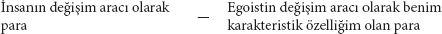
Burada saçmalığın dizginleri serbest bırakılıyor. Antitez, Aziz Max bir belirlenim getirdiğinde ve kendisine kapsamlı bir gelişme görünüşü yaratmak istediğinde çok daha karmaşık hale geliyor. Önce şöyle deniyor örneğin:
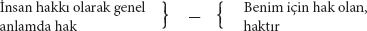
Burada hak yerine pekâlâ başka herhangi bir sözcüğü de koyabilirdi; çünkü, itiraf edildiği üzere, artık tamamen anlamdan yoksundur. Her ne kadar bu saçmalık sürekli olarak baş göstermeye devam etse de, onun ilerisine gidebilmek için yine de hakkın bir başka, hem salt kişisel anlamda hem de ideolojik anlamda kullanılabilecek bir belirlenimini devreye sokmak zorundadır; mesela, hakkın temeli olarak Güç. Ancak şimdi, ilk tezde hak henüz, antitezde muhafaza edilen başka bir belirlenime sahip olduğu noktada antitez bir içerik üretebilir. Artık şöyle denir:
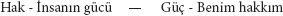
ki ardından bu da basitçe şuna dönüşür yine:
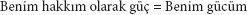
Bu antitezler, yukarıda sözü edilen negatif denklemlerin pozitife çevrilmelerinden başka bir şey değildir; ki bunlar daha bitimlerinde sürekli olarak antitezler üretiyor. Bunlar, basit azamet ve azami safdillikte denklemleri bile geride bırakır.
Aziz Sanço, nasıl ki daha önce her şeyi yabancı, kendisinden bağımsız, kutsal görebildiyse, şimdi de aynı kolaylıkla her şeyi kendi eseri, onun sayesinde var olan, kendi mülkiyeti olarak görebilmektedir. O her şeyi kendi özelliğine dönüştürdüğünden, şimdi tek yapması gereken, kendisiyle barışık egoist olarak asıl özellikleri karşısında aldığı ve burada tekrar etmemize gerek olmayan tutumun aynısını almaktır. Böylelikle, Berlinli muallimimiz, dünyanın mutlak efendisi haline gelir; "elbette, aynı şey her kaz, her köpek, her at için de geçerlidir." (Wigand, sf. 187)
Bütün bu kendine mal etme biçimlerinin temelinde yatan asıl mantıksal deney, konuşmanın salt bir biçimidir; yani tefsirdir, bir ilişkinin bir başkasının ifadesi olarak, varoluş biçimi olarak açımlanmasıdır. Nasıl ki, az önce gördüğümüz üzere, her ilişki, mülkiyet ilişkisinin birer örneği olarak sunulabildiyse, aynı şekilde sevgi, güç, sömürü vb. ilişkisi olarak da sunulabilir. Aziz Sanço, bu tefsir yöntemini, spekülasyonda –ki burada spekülasyon bir başrol oynar– hazır halde buldu. İleride "sömürü teorisi" bölümüne bakınız.
Kendine mal etmenin çeşitli kategorileri, bunlara uygulama görünüşü getirilip kendine mal etme ciddiye biner binmez zahmetsiz kategoriler haline gelir. Ben'in Yabancı'ya, Kutsal'a, Dünya'ya, "İnsan"a karşı kendisini ortaya koymanın zahmetsiz biçimi böbürlenmedir. Kutsal'a saygı hükümsüz kılınır (Saygı, Hürmet vs. –bu zahmetsiz kategoriler onun Kutsal'la ya da kutsal olarak kabul edilen üçüncü bir şeyle ilişkisini ifade etmeye yarar) ve bu hükümsüz kılma bir eylem olarak adlandırılır. Aziz Sanço'nun sürekli olarak sadece kendi kutsayıcı tasavvurunun hayaletine karşı mücadele etmesiyle, daha da gülünç hale gelen bir eylem bu. Öte yandan, Kutsal'a saygıyı hükümsüz kılmasına rağmen dünya ona alabildiğine şer davrandığından, ona saygısız davranmak için ihtiyaç duyduğu tek şeyin, üzerinde iktidar kuracak konuma gelmek olduğunu ilan etmenin manevi hazzını yaşamaktadır. Yok edici reservatio mentalis'iyle400 bu tehdit komediyi tamamlar. Aziz Sanço'nun 16. sayfada "ne Poseidon'un öfkesinden ne de intikamcı Eumenideler'den[53] korkması", sayfa 58'de "lanetten korkmaması", sayfa 242'de "aman dilememesi" vb. ve en sonunda Kutsal'ın "kutsallığını dizginsizce bozduğu"nu iddia etmesi böbürlenmenin ilk biçimidir. Sayfa 218'de Ay'a savurduğu tehdit de ikinci biçimdir:
"Seni bir yakalayabilseydim, seni hakikaten yakalardım; ve sana ulaşmanın yolunu bir bulsam, beni korkutamazdın... sana teslim olmuyorum, sadece zamanımın gelmesini bekliyorum. Şu an sana bir şey yapabilmekten kendimi alıkoyuyorsam da, yine de niyetim baki!"
Azizimizi, Pfeffel'in401 hendekteki köpeğinden daha da alçağa düşüren bir anlatım. "Hayat ve ölüm üzerindeki güçten feragat etmediği"ni vs. söylediği 425. sayfa için de aynı şeyi söyleyebiliriz.
Sonunda övünme pratiği yeniden, azizimizin en tum[turaklı] sözlerle asla yapma[mış] olduğu şeyleri yapmış gibi göste[rerek] teorinin sınırları içerisinde kalan saf bir pratiğe dönüşe[bilmekt]edir. [Bu sırada da] geleneksel saçmalıkları [gür] sesli söylemlerle orijinal yaratı[m]lar [olarak] yutturmaya kalkıyor. Aslında buna kitabın bütünü dâhil olduğu gibi, özellikle de bize bir gelişim olarak kabul ettirilmeye çalışılan, ama yalnızca kötü kopya edilmiş tarih kurgusu, yanı sıra "Kitap"ın "insana karşı yazılmış gibi göründüğü" teminatı da (Wigand, sf. 168) ve birbirinden kopuk pek çok iddia dâhildir. Mesela: "Canlı Ben'in tek bir nefesiyle koca halkları yere sererim" ("Kitap"ın 219. sayfası), "kaygısızca saldırırım" (sf. 254), "halk ölüdür" (sf. 285), ayrıca "adaletin işkembesini eşme" teminatı (sf. 275) ve kışkırtıcı, alıntılar ve özdeyişlerle süslenmiş "hakiki bir muhalif"in ortaya çıkması daveti. (sf. 280)
Övünmenin kendisi zaten başlı başına duygusaldır. Fakat duygusallık, "Kitap"ta ayrı bir kategori olarak da yer alır ve bilhassa, Yabancı karşısında artık salt bir iddiadan ibaret olmaktan çıkan pozitif kendine mal etmede rol oynar. Şimdiye kadarki kendine mal etme yöntemleri her ne kadar basit idilerse de, daha ayrıntılı olarak geliştirilmeleri söz konusu olduğunda, sanki bu sayede Ben de "sıradan anlamıyla" mülkiyet ediniyormuş gibi bir izlenim yaratmaya ihtiyaç vardır. Bu da sadece, bu Ben'in zorlama bir açılımı aracılığıyla mümkündür; sadece kendisini ve başkalarını duygusal bir gizemle sarıp sarmalamasıyla mümkündür. Zaten, "İnsan"ın yüklemlerine bodoslama kendine ait yüklemler olarak sahip çıkması halinde duygusallık kaçınılmaz olur –örneğin "herkesi" "bencillikten dolayı" "sever"; ve özelliklerine böylece abartılı bir şaşaa katar. Nitekim sayfa 351'de "bebeğin gülüşü" "kendi mülkiyeti" ilan edilir ve yine aynı pasajda, ihtiyarların artık öldürülmediği uygarlık aşamasının, en dokunaklı ifadelerle bu ihtiyarların kendisinin eylemi olarak betimlenmektedir vs.; bu duygusallığa kesinlikle onun Maritornes'le olan ilişkisi de dâhildir.
Duygusallığın ve övünmenin birliği İsyan'dır. Dışa yönelik, başkalarına karşı övünmedir; içe dönük, kendi kendine homurdanma olarak duygusallıktır. Dar kafalının aciz hoşnutsuzluğunun özgün ifadesidir. O, ateizm, terörizm, komünizm, hükümdar katli vb. düşüncesi karşısında hiddetlenir. Aziz Sanço'nun karşısında isyan ettiği nesne, Kutsal'dır; dolayısıyla, suç olarak da karakterize edilen isyan son tahlilde günahtır. Yani isyanın hiçbir şekilde bir eylem olarak ortaya çıkması gerekmiyor, çünkü o sadece "Kutsal"a karşı "Günah"tır. Dolayısıyla Aziz Sanço, "Kutsallık"ı ya da "yabancılık hayaletini" "kafasından çıkarıp atmak"la ve ideolojik kendine mal etmeyi icra etmekle yetiniyor. Fakat bugün ile gelecek onun kafasında nasıl birbirine karışıyorsa, bazen her şeyi kendine mal etmiş olduğunu, bazen de daha henüz kendine mal etmesi gerektiğini nasıl iddia ediyorsa, isyan konusunda da, arada bir aklına tamamen tesadüfen, hatta yabancının kutsal halesiyle başa çıktıktan sonra bile, gerçek Yabancı'yla karşı karşıya olduğu geliveriyor. Bu durumda ya da daha doğrusu bu aklına geliverişte, İsyan imgelenen bir eyleme, Ben de "Biz"e dönüştürülür. Bunu ileride ayrıntılı olarak ele alacağız.
Şimdiye kadar tanımlandığı kadarıyla en büyük muhafazakâr olduğunu kanıtlamış olan gerçek egoist, sonunda "İnsan'ın dünyası"na ait parçaları topluyor; on iki sepet dolusu. Zira "hiçbir şey kaybolmamalı, haşa!" Tüm eylemi, felsefi geleneğin kendisine miras bıraktığı düşünce dünyasına ait birkaç eskiyip yıpranmış, sofistik hokkabazlık numarasını denemekle sınırlı olduğundan, gerçek dünyanın onun açısından mevcut bile olmadığı, dolayısıyla da önceden olduğu gibi kaldığı açıktır. Yeni Ahit'in içeriği, bize bunun ayrıntılarını sunacaktır.
Böylece "biz reşitliğin sınırları önünde zuhur ederiz ve reşit ilan ediliriz" (sf. 86)
4. Özgülük
"Kendine bir dünya kurmak, kendine bir cennet inşa etmek anlamına gelir." "Kitap"ın 89. sayfası.*66
Bu cennetin en kutsal özünü "iç yüzünü anlamış" bulunuyoruz. Şimdi onun hakkında "daha çok şey" öğrenmeye çalışacağız. Bu arada Yeni Ahit'te, daha Eski Ahit'e boydan boya sinmiş olan ikiyüzlülükle yeniden karşılaşacağız. Eski Ahit'te tarihsel veriler sadece birkaç basit kategoriye verilmiş isimlerden ibaret idiyse, burada, Yeni Ahit'te tüm dünyevi ilişkiler, Fenomenoloji ve Mantık bölümlerinde derlediğimiz zayıf içerik için örtü işlevi gören farklı isimlerden başka bir şey değildir. Aziz Sanço gerçek dünyadan söz ediyormuş görünüşü altında her zaman yalnızca bu yoksul kategorilerden bahsediyor.
"Sen bütün bu güzel şeylere sahip olma özgürlüğünü istemiyorsun... Sen onlara gerçekten sahip olmak istiyorsun... senin mülkiyetin olarak sahip olmak istiyorsun. .. Senin yalnızca özgür biri değil, aynı zamanda sahip biri de olman gerekir." (sf. 205)
Burada ilk toplumsal hareketlerin ulaştığı en eski formüllerden biri, en berbat biçimiyle sosyalizm ile liberalizm arasındaki karşıtlık, "kendisiyle barışık egoist"in bir vecizesine yüceltilmektedir. Bu karşıtlığın Berlin için bile ne kadar eski olduğunu, kutsal adamımız daha 1831'de Ranke'nin Historisch-politische Zeitschrift'inde (Berlin, 1831)403 buna dehşetle işaret edilmiş olmasından görebilirdi.
"Benim ondan" (özgürlükten) "nasıl yararlanacağım benim özgülüğüme bağlıdır." (sf. 205)
Büyük diyalektikçi bunu tersine de çevirip şöyle diyebilir: Özgülüğümden nasıl yararlandığım benim özgürlüğüme bağlıdır. – Devam eder:
"Özgür – peki ama ne'den özgür?"
Demek ki, burada bir düşünme çizgisi aracılığıyla özgürlük bir şeyden ve per appos[itionem] "her şeyden" özgür olmaya dönüştürülmektedir. Ancak, bu kez apozisyon görünüşte daha ayrıntılı bir belirleme getiren bir önerme biçiminde verilmektedir. Zira, bu büyük sonuca ulaştıktan sonra Sanço duygusallaşıverir:
"Ah, nelerden kurtulmak mümkün değil ki!" İlk önce "serflik boyunduruğu"ndan, ardından bir dizi başka boyunduruktan; sonunda da ansızın "en kusursuz kendini inkârın, özgürlükten ... kendi Ben'inden özgür olmaktan ve mutlak bir şey olarak özgürlük arzusundan başka bir şey olmadığı... Bizi özgülükten ettiği" sonucuna ulaşırız.
Bir dizi, son derece basit boyunduruk aracılığıyla burada, serflerin birey olduğunu ilan eden ve aynı zamanda belirli bir ampirik bariyerin yıkımı olan serflikten kurtuluş burada, Romalılara ve Korintlilere mektuplarda geçen çok daha eski bir Hıristiyan-idealist özgürlük ile özdeşleştiriliyor ve böylece özgürlük genelde kendini inkâra dönüştürülüyor. Bu noktada özgürlükle işimizi bitirmiş oluyoruz, çünkü o artık tartışmasız biçimde "Kutsal"dır. Kendini kurtarmanın belirli bir tarihsel eylemi, Aziz Max tarafından soyut "Özgürlük" kategorisine dönüştürülmekte ve ardından, yine "Özgürlük" kategorisine sokulabilecek bambaşka bir tarihsel görüngüden hareketle daha ayrıntılı olarak belirlenmektedir. Serflik boyunduruğunun parçalanıp atılmasını kendini inkâra dönüştürme hokkabazlığı işte bundan ibarettir.
Özgürlük teorisini Alman yurttaşı için apaçık hale getirmek için Sanço, şimdi yurttaşın, özel olarak da Berlinli yurttaşın kendi dilinde nutuk çekmeye başlıyor:
"Bu arada ben özgürleştikçe, o denli çok zorlamalar yığılıp çoğalıyor gözümün önünde ve kendimi o denli aciz hissediyorum. Yaban toprakların özgür olmayan evladı, eğitimli bir insana sıkıntı veren bütün o bariyerleri henüz duyumsamıyor; kendini ondan daha özgür sanıyor. Özgürlükler kazandığım ölçüde kendime yeni sınırlar ve yeni görevler yaratıyorum; demiryollarını mı icat ettim, hemen kendimi yeniden zayıf hissediyorum, çünkü henüz kuşlar misali havada süzülüp uçamıyorum. Karanlığıyla zihnimi ürküten bir sorunu mu çözdüm, hemen ardında sayısızı bekler beni." vs. (sf. 205, 206)
Ah, yurttaşa ve köylüye seslenen "beceriksiz" edebiyatçı!
"Yaban toprakların özgür olmayan evladı" değil, "eğitimli insanlar", vahşilerin eğitimlilerden daha özgür olduğunu "sanır". (F. Halm'in sahneye koyduğu) "Yaban toprakların evladı"nın[114] eğitimlinin bariyerlerini, bilgisine erişme olanağından yoksun olduğu için bilmesi, "yaban toprakların evladını" sadece tiyatrodan tanıyan "eğitimli" Berlinli yurttaşın vahşilerin bariyerleri hakkında bir şey bilmemesi kadar açıktır. Yalın gerçek şudur: Vahşilerin bariyerleri uygar insanların sınırları değildir. Azizimizin ikisi arasında yapmaya kalkıştığı kıyaslama, eğitimi, ikisi hakkında da hiçbir şey bilmemekten ibaret olan Berlinli bir "eğitimli"nin hayali kıyaslamasıdır. Yayınlanan onca yeni seyahatnameden sonra haklarında bir şeyler bilmek marifet olmasa da, onun vahşilerin bariyerleri hakkında hiçbir şey bilmemesi anlaşılırdır; ama eğitimlilerinkiler hakkında da bir şey bilmediğini demiryolları ve uçmak hakkında verdiği örnek kanıtlıyor. Kendi açısından demiryollarının gökten düştüğünü ve işte bu yüzden onları kendisinin icat ettiğini sanan miskin küçük burjuva, bir kez tren yolculuğu yaptıktan sonra derhal havada uçmayı düşlüyor. Oysa hakikatte önce balon icat edildi sonra tren. Aziz Sanço bunu terse çevirmek zorundaydı; aksi takdirde balonun icadıyla birlikte demiryolları için gerekli önkoşulların hiç de verili olmadığını herkes fark ederdi; oysa tersini tasavvur etmek çok daha kolaydır. Zaten genel olarak ampirik ilişkiyi baş aşağı çeviriyor. At arabacısı ve yük arabası ulaşımın artan ihtiyaçlarını karşılayamaz hale gelince ve başka şeylerin yanı sıra büyük ölçekli sanayi nedeniyle üretimin merkezileşmesi, büyük miktardaki sanayi ürünlerinin daha hızlı ve büyük ölçekli nakliyesi için yeni araçları gerekli kıldığında lokomotif icat edildi ve böylece büyük ölçekli ulaşımda demiryollarının kullanımına geçildi. Mucit ve hissedarlar kârlarını düşünüyor, genel anlamda ticaret ise üretim maliyetinin düşürülmesiyle ilgileniyordu. İcadın mümkün olmasının, hatta mutlak zorunluluğunun nedeni ampirik koşullarda yatmaktaydı. Yeni icadın çeşitli ülkelerde uygulamaya konması birbirinden farklı koşullara dayanıyordu. Örneğin Amerika'da, devasa topraklara yayılmış devletleri birleştirmek ve iç kesimlerdeki yarı uygarlaşmış bölgelerin denizle ve ürünlerin toplandığı antrepolarla bağlantısını kurmak ihtiyacından doğmuştu. (Ayrıca karşılaştırınız: M. Chevalier, "Lettres sur l'Amérique du Nord"404.) Diğer ülkelerde, örneğin her yeni icat karşısında, bu icadın icatlar âlemine son noktayı koymadığına hayıflanmanın ötesine geçilmeyen Almanya gibi ülkelerde, uzun uzun direndikten sonra rekabetin dayatması nedeniyle nihayet o sevimsiz, insanı kanatlandırmayan demiryollarını evlat edinmek ve at arabacısıyla yük arabasını saygıdeğer, emektar çıkrıkla birlikte ıskartaya çıkarmak zorunda kaldılar. Yüksek kârlı başka sermaye yatırımı alanlarının olmayışı, demiryolu inşaatını Almanya'da baskın sanayi dalı haline getirdi. Demiryolu inşasındaki gelişim, dünya pazarındaki bozgunlarıyla uygun adım ilerliyordu. Ne var ki hiçbir yerde "Özgürlük" kategorisi hatırına demiryolu inşa edilmez. Bunu Aziz Max, hiç kimsenin para kesesinden özgür kalmak için demiryolu inşa etmediği olgusu ışığında bile görebilirdi. Yurttaşın kuşlar gibi uçma özlemiyle demiryoluna karşı geliştirdiği ideolojik küçümsemenin pozitif özü at arabacısına, yük arabasına ve karayollarına duyduğu sempatidir. Sanço "kendi dünyası"nın hasretini çekiyor ve bu dünya yukarıda gördüğümüz üzere cennettir. Bu nedenle lokomotifin yerine İlyas'ın ateşten atlı arabasını koyup göklere çıkmak istiyor405.
Bu miskin ve cahil seyircinin gözünde –aynı zamanda üretici güçlerin son derece pozitif bir gelişimi, reel enerji ve reddedilemez gereksinimlerin tatmini, bireylerin gücünün büyümesi anlamına da gelen– bariyerlerin gerçek anlamda alaşağı edilmesinin salt bir bariyerden kurtuluşa dönüşmesinden sonra –ki bunu da yine mantıksal olarak, kendinde bariyerden kurtulmanın bir postulatı haline getirebilir– şimdi, bütün bu açıklamaların sonucunda, daha en başında varsayılan şey elde ediliyor:
"Bir Şey'den özgür olmak – sadece serbest ya da muaf olmak demektir." (sf. 206)
Hemen buna dair son derece talihsiz bir örnek veriyor: "Baş ağrısından özgür oldu demekle ondan muaf kaldı demek aynı şeydir." Sanki bu baş ağrısından "Muafiyet", kafam üzerinde son derece pozitif bir yetki gücüyle, kafamın mülkiyetine sahip olmakla aynı şey değilmiş gibi. Oysa ben, baş ağrısı çektiğim sürece hasta başımın mülkiyetiydim.
"Hıristiyanlığın önerdiği özgürlüğü 'Muafiyet' ile tamamına erdiriyoruz; günahtan, tanrıdan, ahlaktan vb. muaf olmakla." (sf. 206)
Bu nedenle bizim "kusursuz Hıristiyan"ımız kendi özgülüğünü de ancak, "düşünce"den, "belirleme"den, "vazife"den, "yasa"dan, "anayasa"dan vs. "kurtuluş"ta buluyor ve din kardeşlerini, "yalnızca tasfiye etmede kendini mutlu hissetmeye"; yani "Muafiyet"i, "tamamına eren" "Hıristiyan özgürlüğü"nü üretirken kendini mutlu hissetmeye çağırıyor.
Sözlerini şöyle sürdürüyor:
"Peki, bir Hıristiyan ideali olarak özgürlük kendine ihanet ettiği için ondan vazgeçmemiz mi gerekir? Hayır, hiçbir şey kaybedilmemeli" (voilà notre conservateur tout trouvé406) "özgürlük de kaybedilmemeli; ama o bize özgü hale gelmelidir, fakat özgürlük biçimi altında bunu yapamaz." (sf. 207)
Bizim "kendisiyle" (toujours et partout)407 "barışık egoistimiz" burada, daha Eski Ahit'te zaten Hıristiyan özgürlük idealiyle, yani özgürlük imgelemiyle, "şeyler dünyası"nın "sahipleri" haline geldiğimizi unutuyor. Aynı şekilde, bundan sonra, "düşünceler dünyası"nın da sahibi olmak için yapmamız gereken tek şeyin ondan kurtulmak olduğunu, burada "Özgülüğü", özgürlüğün, yani Muafiyet sonucu olarak elde ettiğini unutuyor.
Azizimiz özgürlüğü, bir şeyden özgür olma olarak ve özgür olmayı yine "Muafiyet" olarak, Muafiyet'i özgürlüğün Hıristiyan ideali olarak ve böylece de "İnsan"ın özgürlüğü olarak yorumlayıp tertip ettikten sonra, artık bu şekilde hazır edilen materyal üzerinde mantığının uygulamalı bir dersini gerçekleştirebilir. İlk ve en basit antitez şöyle:
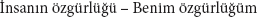
Bu antitezde özgürlük "özgürlük biçimi altında" var olmayı bırakıyor. Ya da:
Bu iki antitez, sayısız belagat eşliğinde özgülüğe ayrılmış tüm bölüm boyunca sürekli olarak boy göstermektedir. Fakat tek başına bunlarla dünya fatihi Sanço'muz fazlasıyla az şeye ulaşmış olurdu; Barataria adasına bile varamamış olurdu. Yukarıda, insan eylemini, "kendi dünya"sından, kendi "cennet"inden gözlemlerken, özgürlük soyutlamasını yaptığı sırada gerçek kurtuluşun iki etmenini iç etmiş oluyor. İlki, bireylerin kendi öz-kurtuluşlarıyla belirli, gerçekten duyumsanan bir ihtiyacı tatmin ettikleridir. Bu etmenin ortadan kaldırılmasıyla gerçek bireylerin yerine "insan" geçti ve gerçek ihtiyaçların tatmini yerini, imgesel bir ideale, kendinde özgürlük olarak özgürlüğe, "insanın özgürlüğü"ne ulaşma çabası aldı.
İkinci etmen, kendilerini özgürleştirmekte olan bireylerde, şimdiye kadar yalnızca bir potansiyel olarak var olan bir yeteneğin gerçek bir güç olarak işlev görmeye başlaması veya zaten var olan bir gücün bir bariyerin kırılıp atılmasıyla daha da büyütülmesidir. Kuşkusuz, yeni bir güç yaratımının sadece bir sonucu olan bariyerin kırılıp atılmasını esas mesela olarak görmek mümkün. Bu yanılsamaya ise ancak, ya politikayı ampirik tarihin temeli olarak kabul ettiğinizde ya da Hegel gibi her yerde yadsımanın yadsımasını kanıtlamanız gerektiğinde veyahut da nihayetinde yeni güç yaratıldıktan sonra cahil Berlinli yurttaş olarak yeni yaratım üzerine refleksiyonda bulunduğunuzda ulaşırsınız. – Aziz Sanço bu ikinci etmeni kendi kullanımı için iç ederek, "özgürlük"ten geriye kalan, soyut caput mortuum'unun408 karşıtına koyabileceği bir belirlilik elde etmiş oluyor. Böylece aşağıdaki yeni antitezlere ulaşıyor.
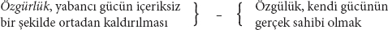
Ya da:
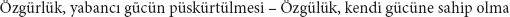
Aziz Sanço'nun burada özgürlüğün karşısına çıkardığı kendi "gücü"nü, nasıl da aynı özgürlükten alıp hokkabazlıkla kendi içine yerleştirdiğini görmesi için, ona materyalistler ya da komünistlere değil, sadece "Dictionnaire de l'académie"ye bakmasını öneririz. Burada liberté409 sözcüğünün en çok puissance410 anlamında kullanıldığını görecektir. Ama eğer Aziz Sanço, "liberté"ye değil "özgürlük"e karşı mücadele ettiğini iddia edecek olursa, o zaman negatif özgürlük ve pozitif özgürlük konusunda Hegel'e danışabilir. Bir Alman küçük burjuva olarak bu bölümün sonuç kısmıyla kendini mutlu edebilir.
Bu antitez şu şekilde de ifade edilebilir:
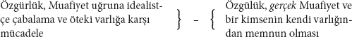
Böylece, ucuz bir soyutlama sayesinde özgülüğü özgürlükten ayırt ettikten sonra, sanki ancak şimdi bu farkı analiz etmeye başlıyormuş gibi yaparak şöyle haykırıyor:
"Özgürlük ile özgülük arasında ne büyük bir fark var!" (sf. 207)
Genel antitezlerin dışında hiçbir şeyi iç edemediğini ve bu özgülük belirleniminin yanı başında "sıradan anlamda" özgülüğün son derece eğlendirici bir biçimde emeklemeye devam ettiğini göreceğiz.
"Kölelik durumuna rağmen içsel olarak özgür olunabilir; ama o da her şeyden değil, yalnızca çeşitli şeylerden. Zira efendinin kırbacından, despotça keyfiyetinden vb. özgür olunmaz.
"Buna karşılık özgülük, benim bütün özüm ve varoluşumdur, Ben kendimdir. Kurtulmuş olduğum şeyden özgürüm; kendi gücüm altında bulunan şeyin ya da hâkim olduğum şeyin sahibiyim. Eğer kendime sahip olmayı bilirsem ve kendimi başkalarına harcatmazsam, her daim ve her koşulda kendime ait olurum. Özgür olmayı gerçek anlamda isteyemem, çünkü onu ben ...elde edemem. Sadece dileyebilir ve bu doğrultuda çabalayabilirim, çünkü o bir ideal, bir heyula olarak kalmaya devam eder. Gerçekliğin prangaları her an etimde en derin yaraları açmaktadır. Ama ben yine de kendim olarak kalmaya devam ederim. Bir efendiye serflikte bulunan ben yalnızca kendimi ve kendi çıkarımı düşünürüm. Gerçi, attığı kırbaçlar bana isabet ediyor, ben onlardan özgür değilim. Ama ben yalnızca kendi yararım için onlara katlanıyorum; örneğin, sabır görünüşü altında onu kandırmak ve onu kendinden emin kılmak için veyahut da isyankârlık edip de daha kötüsüne maruz kalmamak için. Fakat ben kendimi ve kendi yararıma olanı daima gözettiğim için," (kırbaç darbeleri kendisini ve sırtını mülkiyeti altında tutarken) "önüme çıkan ilk uygun fırsatı kaçırmam" (yani çıkacak olan ilk uygun fırsatı "diliyor", "çabalıyor"; ne var ki o "bir ideal, bir heyula olarak kalmaya devam ediyor") "köle sahibini ezerim. O zaman ondan ve onun kırbacından özgür kalmam yalnızca benim öncesindeki egoizmimin bir sonucudur. Belki buna köle durumundayken de özgür olduğum söylenerek itiraz edilebilir; yani 'kendinde' özgür ya da 'içsel' olarak özgür olduğum söylenebilir. Ne var ki tek başına 'kendinde özgür' 'gerçekten özgür' değildir; 'içsel' de 'dışsal' değildir. Buna karşılık ben, bütünüyle ve tamamıyla, içsel ve dışsal olarak kendime özgü, kendime aittim. Zalim bir efendinin egemenliği altında bedenim eziyetlerden ve kırbaçlardan 'özgür' değildir; ne var ki işkenceyle çatırdayan kemikler benimdir, kırbaç darbeleri altında benim liflerim seğiriyor ve benim bedenim inlediği için Ben inliyorum. Benim inliyor ve titriyor olmam, hâlâ benim kendimde olduğum, benim kendime ait olduğumu kanıtlıyor." (sf. 207, 208)
Burada yine küçük burjuvazi ve köylülere seslenen edebiyatçıyı oynayan Sanço'muz, daha Cervantes'teyken yediği onca dayağa rağmen, daima kendi "sahibi" olarak kaldığını ve bu dayakların daha çok kendi "özgülüğü"nün bir parçası olduğunu kanıtlıyor. Eğer kendisine sahip olmayı bilirse "her daim ve her koşulda" kendisine "ait" olur. Demek ki burada özgülük hipotetiktir ve onun anlağına bağlıdır. Anlaktan anladığı ise kölece bir safsatadır. Bu anlak daha sonraları da, kendisini ve kendi "çıkarını" "düşündüğü" yerde düşünme haline gelir ki bu düşünme ve düşünsel "çıkar" da onun düşünsel "mülkiyeti"dir. Ayrıca, kırbaç darbelerine "kendi iyiliği" için katlandığına dair açıklamalara devam edilir. Burada da özgülük "yarar" tasavvurundan ibarettir ve "daha da kötüsü"nün "sahibi" olmamak için "kötü"ye katlanmaktadır. Daha sonraları bu anlak kendisini, "ilk uygun fırsat" gibi bir çekince, yani salt bir reservatio mentalis'in "sahibi" olarak ve en nihayetinde "köle sahibi"ni "ezme" olarak fikrin öncelenmesinde gösterir. Burada, köle sahibi onu şu anda gerçekten ayakları altına alırken, o, bu öncelemenin "sahibi" durumundadır. Demek ki o burada kendisini –türlü türlü bilge vecizeler aracılığıyla kendini sakinleştirmeye uğraşan– bilinci ile özdeşleştiriyorken, en sonunda kendisini bedeniyle özdeşleştirmektedir. Öyle ki, içinde tek bir yaşam kıvılcımı ve hatta sadece bilincini kaybetmiş bir yaşam taşıdığı sürece, bütünüyle ve tamamıyla, içsel ve dışsal olarak "kendisine ait" olur. "Kemiklerin" çatırdaması, liflerin seğirmesi vb. görüngüleri; "biricik" doğa biliminin dilinden patolojinin diline çevrilmiş olan, yukarıda kendini ipe çektiği darağacından indirilir indirilmez kadavrasına uygulanan galvanizm yardımıyla yaratılan, ama ölü bir kurbağada bile yaratılabilecek görüngüleri, burada, onun "bütünüyle ve tamamıyla", "içsel ve dışsal" olarak halen kendisine ait olduğunun kanıtı sayıyor. Köle sahibinin gücü ve özgülüğünü ortaya koyan aynı şeyi; yani bir başkasının değil, tam da onun kırbaçlanıyor olmasını, tam da onun kemiklerinin "çatırdıyor", onun liflerinin seğiriyor olmasını ama onun bu durumu değiştirememesini, azizimiz kendi özgülüğünün ve gücünün bir kanıtı sayıyor. Yani o, ne kolunu ne bacağını, ne de bir başka organını kımıldatabildiği Surinam'ın Spanso Bocho[115] işkencesi altında, kendisine yapılan her şeyi sineye çekmek durumunda kaldığı bir anda, onun gücü ve özgülüğü, uzuvlarını yönetebilmesinden değil, bunların onun uzuvları olması olgusundan ileri gelmektedir. Burada özgülüğüne halel getirmemeyi bir kez daha, kendisini farklı belirlenmiş olarak, kâh salt bilinç olarak kâh bilinçsiz beden olarak (bkz. Fenomenoloji) kavraması sayesinde başarıyor.
Fakat söylemek gerekir ki Aziz Sanço, payına düşen dayağa ve sopaya, gerçek kölelerden daha büyük bir vakarla "katlanıyor". Köle sahiplerinin çıkarı doğrultusunda misyonerler kölelere istedikleri kadar bu dayağa "kendi yararlarına katlandıkları"nı söylesinler, köleler bu safsatalara kanmazlar. Onlar, aksi takdirde "daha kötüsüne maruz kalacakları" gibi soğuk ve ürkek refleksiyonda bulunmazlar, "sabırlarıyla köle sahibini kandıracakları" zannına da kapılmazlar. Tersine onlar, işkencecilerini alaya alır, kendilerini aşağılık duruma düşürmeyi beceremeyen acizlikleriyle dalga geçerler ve fiziksel acı izin verdiği ölçüde her "iniltiyi", her feryadı bastırırlar. (Bakınız: Charles Comte, Traité de législation). Yani onlar ne "içsel" ne de "dışsal" bakımdan kendilerinin "sahibi"dirler; onlar yalnızca kendi dik başlılıklarının "sahibi"dirler. Bu durum pekâlâ şöyle de ifade edilebilir: Onlar ne içsel ne "dışsal" olarak "özgür"dürler, onlar yalnızca bir bakımdan özgürdürler; yani onlar "içsel" olarak kendi kendilerini aşağılamaktan "özgür"dürler ve bunu "dışsal" olarak da gösterirler. "Stirner" dayak yediği ölçüde dayağın sahibidir ve dolayısıyla dayak yememekten özgürdür ve bu özgürlük, bu Muafiyet onun özgülüğüne aittir.
Aziz Sanço'nun "ilk uygun fırsatta" kaçma çekincesine özgülüğün özel bir niteliğini atfetmesinden ve bu sayede başardığı "özgür olma"yı "yalnızca öncesindeki egoizminin bir sonucu" (onun, yani kendisiyle barışık egoizminin bir sonucu) saymasından anlaşılıyor ki, ayaklanan Haitili zenciler[116] ve bütün sömürgelerdeki firar eden zencilerin kendilerini değil, "İnsan"ı özgürlüğe kavuşturmak istediklerini sanıyor. Kendini özgürlüğe kavuşturma kararını alan kölenin, köleliğin kendi "özgülüğü" olduğu fikrini aşmış olması gerekir. Bu "özgülükten" "özgür" olması gerekir. Ne var ki bir bireyin "özgülüğü", kendisini "harcaması"ndan ibaret olabilir. Bunun aksini iddia etmek, bireye "yabancı bir ölçüt" uygulamak anlamına gelir.
Sonuçta Aziz Sanço yediği dayağın intikamını "özgülüğünün" "sahibi"ne, köle sahibine seslendiği şu nutukla alır:
"Bacağım, efendinin dayağından "özgür" değil, ama o benim bacağım ve benden ayrılamaz. Bacağımı benden koparıp alsın da elinde tuttuğu hâlâ benim bacağım mı baksın bakalım! Bacağımın cesedinden başka bir şey geçmeyecek eline. Ölü bir köpek ne kadar köpek sayılabilirse, o bacak da ancak o kadar benim bacağımdır." (sf. 208)
Peki ama, köle sahibinin onun canlı bacağını –kendi kullanımı için olsa gerek– ele geçirmek istediğini düşünen Sanço, kendisine o "ayrılamaz" bacağından geriye ne kaldığına "baksın" bir de. Bacağının kaybı dışında bir şey kalmayacak ve koparılmış bacağının tek bacaklı sahibi olacaktır. Eğer bir ayak değirmeninde411 günde sekiz saat çalışmak zorundaysa, zamanla bir ahmak haline gelecek olan kendisidir. O zaman ahmaklık onun "özgülüğü" olacaktır. Onu buna mahkûm eden yargıç, "elinde tuttuğu" hâlâ Sanço'nun anlağı mı "baksın" bakalım. Ne var ki bunun zavallı Sanço'ya pek bir faydası olmayacak.
"İlk mülkiyet, ilk olağanüstü güzellik kazanıldı!"
Azizimiz bir zahide yaraşır bu örnekleri verdikten sonra, özgürlük ve özgülük arasındaki farkı hatırı sayılır edebi üretim masraflarında bulunarak açıklığa kavuşturduktan sonra, sayfa 209'da hiç beklenmedik bir biçimde şu açıklamada bulunuyor:
"Özgülük ile özgürlük arasında, basit sözcük farkından öte çok daha derin bir uçurum vardır."
Bu "daha derin" uçurum, yukarıda ele alınan özgürlük belirleniminin, "türlü dönüşümler", "kırılmalar" ve sayısız "araya yerleştirmeler" eşliğinde tekrar edilmesinden ibarettir. "Özgürlük"ün "Muafiyet" olarak belirlenmesi şu soruyu doğurmaktadır: İnsanların "ne'den" özgür olması gerekiyor? (sf. 209) vb. bu Ne'den hakkındaki tartışmalar (age.) (O, burada bir Alman küçük burjuvası olarak, gerçek çıkarlar uğruna mücadelede, bu "ne'den"in belirlenimi üzerine edilen kavgaları görüyor sadece ve elbette bu sırada "yurttaş"ın "yurttaşlar sınıfı"ndan özgür kalmak istememesini tuhaf buluyor. sf. 210). Sonra, bir bariyerin kaldırılmasının yeni bir bariyerin konması olduğu önermesi, "belirli bir özgürlük arzusunun daima yeni bir tahakküm kurulması amacını içerir" biçiminde tekrar ediliyor. (sf. 210) (Burada, burjuvazinin devrimde kendi egemenliğini değil, "yasanın egemenliği"ni amaçladığını öğreniyoruz; yukarıda Liberalizm bölümüne bakınız). Ardından, kişinin "işine gelen" şeyden, örneğin "sevgilinin karşı konulamaz bakışları"ndan kurtulmak istemediği sonucuna ulaşılır. (sf. 211) Bundan başka özgürlüğün bir "zevahir" (sf. 211), bir "düş" (sf. 212) olduğu ortaya çıkar. Yanı sıra, "doğanın sesinin" de bir defasında "özgülük" (sf. 213) haline geldiğini ama buna karşılık "Tanrının ve vicdanın sesi"nin "şeytan işi" olarak görülmesi gerektiğini öğreniyoruz. Peşinden de böbürlenir: "Böylesi uğursuz insanlar" (bunu şeytan işi sananlar) "var; onlarla nasıl başa çıkacaksınız?" (sf. 213, 214) Oysa doğanın beni değil, benim doğayı belirlemem gerek, diye devam eder kendisiyle barışık egoistin konuşması. Benim vicdanım da bir "doğanın sesi"dir.
Bu vesileyle, hayvanın "çok doğru adımlar attığı" (sf. 213) sonucuna da ulaşılır. Ayrıca "özgürlüğün, ben özgür kaldıktan sonra ne olacağı konusunda sessiz kaldığını" (sf. 215) da işitiyoruz. (bkz. "Süleyman'ın yüce şarkısı") Yukarıdaki "daha derin" uçurum hakkındaki izahat, Aziz Sanço'nun dayak sahnesini yinelemesiyle sona erdiriliyor. Bu kez özgülük hakkında biraz daha açık ifadelerde bulunuyor.
"Özgür olmadan da, binlerce prangayla bağlı bile olsam yine de varım ben, ve ben, özgürlük gibi henüz müstakbel ve umut edilen olarak değil, kölelerin en sefili olarak da halihazırda varım." (sf. 215)
Demek ki burada kendisini ve "Özgürlük"ü iki kişi olarak karşı karşıya koyuyor ve böylece özgülük, salt bir mevcudiyete, şimdiki zamana, hem de şimdiki zamanın en "sefil" olanına dönüşüyor. Burada özgülük, kişisel özdeşliğin basitçe saptanmasından ibaret. Daha önce kendisini "gizli polis devleti" olarak tasarlayan Stirner, burada kendisine pasaport dairesi payesi biçiyor. "İnsanın dünyası"ndan" "hiçbir şey kaybolmamalı, haşa!" (Bkz. "Süleyman'ın yüce şarkısı".)
218. sayfada söylenenlere bakılırsa, insan "uysallık" ve "teslimiyet" yoluyla kendi özgülüğünden de "vazgeçebilir". Oysa yukarıda söylenenlere göre, kişi var olduğu sürece, varlığını "en sefil" ve "teslimiyetçi" bir şekilde sürdürüyor bile olsa özgülük ortadan kalkamaz. Yoksa "en sefil" köle "en teslimiyetçi" olan değil midir? Özgülüğün eski bir tanımına göre, bir kimse özgülüğünden ancak hayatından vazgeçerek "vazgeçebilir".
218. sayfada özgülük, bir kez daha özgürlüğün bir yönü olarak, güç olarak, Muafiyet anlamındaki özgürlüğün karşısına konulmaktadır ve Sanço'nun kendi özgülüğünü korumaya aldığını iddia ettiği araçlar arasında "ikiyüzlülük" ve "aldatma" vb. (dünya koşullarına "boyun eğmek" zorunda kaldığı için benim özgülüğümün başvurduğu araçlar) sayılmaktadır; "Çünkü benim başvurduğum araçlar, benim ne olduğuma göre şekillenir." Bu araçlar arasında araç yoksunluğunun başrolü oynadığını daha önce görmüştük ve aynı şeyi Ay'a karşı yürüttüğü mücadelede de görüyoruz. (bkz. yukarıda, Mantık bölümü). Ardından özgürlük, değişiklik olsun diye, "öz-kurtuluş" olarak ele alınmakta; yani, ben sadece özgülüğüm aracılığıyla elde ettiğim kadar özgürlük sahibi olabilirim. Ve bu ele alışta, bütün ideologlarda, özellikle de Alman ideologlarında özgürlük belirlenimi, öz-belirlenim olarak, özgülük olarak ortaya çıkar. Bu bize "koyunlara konuşma özgürlüğü tanımanın" "koyunların" hiçbir işine "yaramayacağı" örneğiyle açıklanır (sf. 220). Buradaki öz-kurtuluş olarak özgülük anlayışının ne denli bayağı olduğunu, dikte edilmiş özgürlük, özgür bırakma, kendini özgür kılma vb. üzerine en bilindik söylemleri tekrarlamasından bile anlamak mümkün (sf. 220, 221). Muafiyet olarak özgürlük ve bu Muafiyetin yadsınması olarak özgülük arasındaki karşıtlık şimdi bir de şiirsel bir dille betimleniyor:
"Özgürlük, olmadığınız her şeye karşı öfke duymanıza yol açıyor" (demek ki o öfkeli özgülüktür, yoksa Aziz Sanço'nun anlayışına göre gamlı mizaca sahip olanlar, mesela Guizot, "özgülük"e sahip değil midir? Ve, başkalarına karşı beslediğim öfkenin hazzına varmıyor muyum?) "Egoizm, sizleri kendinizden sevinç duymaya davet ediyor, öz-hazza davet ediyor." (O halde egoizm, sevinen özgürlüktür; bu arada, kendisiyle barışık egoistin sevinci ve öz-hazzıyla tanışmıştık.) "Özgürlük, bir özlemdir ve öyle de kalır." (Sanki özlem de bir özgülük, özel olarak biçimlenmiş bireylerin, özellikle de Hıristiyan Alman bireylerin öz-hazzı değilmiş gibi; peki özlem "kaybolmalı" mı?) "Özgülük bir gerçekliktir; kendi yolunuzu tıkayıp engel olan kadar özgürlüksüzlüğü kendiliğinden kaldıran bir gerçekliktir."
(Dolayısıyla özgürsüzlük kaldırılana kadar kendi özgülüğüm, önü tıkalı bir özgülüktür. Tüm bariyerler ve engellerin "kendiliğinden" düşmesi yine Alman küçük burjuvası için karakteristiktir; zira o bu konuda parmağını bile oynatmaz ve "kendiliğinden" kalkmayan bariyerleri alışkanlığı olduğu üzere kendi özgülüğü haline getirir. Bu arada belirtelim ki, özgülük burada eylem halindeki kişi olarak ortaya çıkar, oysa daha sonraları Sahip'in salt bir tarifine indirgenmektedir.) sf. 215
Aynı antitez aşağıdaki biçimiyle yeniden karşımıza çıkıyor:
"Özgül olarak gerçekten her şeyden kurtulmuş olursunuz; ama size kalan şeyleri ise siz kabul ettiniz, o sizin seçiminiz ve isteğiniz. Özgül, doğuştan Özgür'dür, Özgür ise yalnızca özgürlük tutkunudur."
Bununla birlikte, Aziz Sanço 252. sayfada şunu "itiraf ediyor": "Herkes insan olarak doğar; bu bakımdan yeni doğanlar eşittir."
Tıpkı yukarıda dayak yiyen köle örneğinde olduğu gibi, Özgül olarak "kurtulmuş" olmadığın şeyler "sizin seçiminiz ve isteğiniz". –Yavan bir açıklama!– Demek ki burada özgülük, Aziz Sanço'nun "kurtulmuş" olmadığı her şeyi, örneğin parası olmadığında çektiği açlığı, seve seve kabul ettiği ve muhafaza ettiği kuruntusuna indirgenmektedir. Şiveyi, sıraca hastalığını, hemoroidi, yoksulluğu, tek bacaklılığı, iş bölümünün kendisine dayattığı felsefe yapma zorunluluğunu vb. gibi pek çok şeyi bir yana bırakalım. Bu şeyleri "kabul etmesi" veya etmemesinin kesinlikle ona bağlı olmadığını da bir tarafa bırakalım. Bir an için onun varsayımlarını kabul etsek bile o her zaman sadece belirli, kendi alanında bulunan ve hiç de onun özgülüğü tarafından koyulmayan şeyler arasında seçim yapmak durumundadır. İrlandalı bir köylü olarak, örneğin, yalnızca patates yemek mi yoksa açlıktan ölmek mi istediği arasında seçim yapması gerekiyor; ve bu seçimi yapma özgürlüğüne bile her zaman sahip değildir. Bir de yukarıda aktarılan cümledeki güzel apozisyona değinmek gerek; bu sayede, tıpkı hukukta olduğu gibi "kabul etme" doğrudan doğruya "seçim" ve "istek" ile özdeşleştiriliyor. Bu arada, Aziz Sanço'nun "doğuştan Özgür" ile ne kastettiğini, ne bu bağlamda ne de bu bağlam dışında söylemek mümkün.
Peki ama, ona verilen bir duygu da onun kabul ettiği bir duygu değil midir? Ve sayfa 84 ile 85'te "verilen" duyguların "özgül" duygular olmadığını öğrenmiyor muyuz? Ayrıca, daha önce (burada örnek olarak verilen) Klopstock'ta gördüğümüz gibi, "özgül" tutum hiçbir şekilde bireysel tutumla örtüşmemektedir; oysa görünüşe bakılırsa Hıristiyanlık Klopstock'un "işine gelmiş" ve hiç de "yolunu tıkayıp engel" olmamıştı.
"Özgül'ün, kendisini evvela kurtarmaya ihtiyacı yoktur, çünkü daha en başından itibaren kendisinin dışındaki her şeyi reddeder... Çocuksu saygıyla mahcup bir halde, kendini yine de şimdiden bu mahcubiyetten 'kurtarmaya' çalışır."
Özgül'ün kendisini kurtarmaya ihtiyacı olmadığından, daha çocukken kendisini kurtarmaya çalışır. Bütün bunların nedeni de gördüğümüz gibi "doğuştan Özgür" olmasıdır. "Çocuksu saygıyla mahcup" bir halde, şimdiden mahcup olmayan bir şekilde, yani özgül olarak, bu kendine özgü mahcubiyet üzerine refleksiyonda bulunuyor. Ne var ki bu bizi şaşırtmamalıdır; zira daha Eski Ahit'in başında kendisiyle barışık egoistin ne menem bir harika çocuk olduğunu görmüştük.
"Özgülük, küçük egoistin içinde çalışır ve onu, arzulanan 'özgürlük' ile donatır."
Yaşayan, "Stirner" değil "özgülük"tür; onun içinde yaşamakta, "çalışmakta" ve "donatmakta". Burada, özgülüğün, Özgül'ün tanımı olmadığını; aksine Özgül'ün, sadece özgülüğün başka ifadelerle yeniden tarif edilmesi olduğunu öğreniyoruz.
Gördüğümüz gibi, "Muafiyet"in doruk noktası, kendi benliğinden Muafiyetti, yani kendini inkârdı. Yine, bunun karşısına özgülüğü, kendinin ikamesi olarak, kişisel çıkar olarak koyduğunu gördük. Ama bu kişisel çıkarın kendisinin de yine kendini inkâr olduğunu gördük.
Bir süredir "Kutsal"ın yokluğunu acı acı hissediyorduk. Birdenbire onu sayfa 224'te özgülük bölümünün sonunda, mahcubiyet içinde yeniden karşımızda buluveriyor ve aşağıdaki yeni dönüşüm altında kendisini ortaya koyduğunu görüyoruz:
"Bencilce yürüttüğüm" (veyahut da hiç yürütmediğim) "bir şeyle ilişkim, bencillikten uzak bir şekilde hizmet ettiğim" (veyahut yürüttüğüm) "şeyle ilişkimden farklıdır."
Aziz Max "seçerek ve isteyerek" "kabul ettiği" bu garip totolojiyle tatmin olmaz ve çoktandır kayıplara karışmış olan "Kişi", birdenbire, Kutsal'ın kimliğini tespit eden gece bekçisi kılığında yeniden sahneye çıkar ve şu iddiada bulunur:
"Şöyle bir tanıtma işareti belirtebilirim: Şuna karşı günaha girebilirim ya da bir günah işleyebilirim" (görülmeye değer bir totoloji) "diğerine karşı yalnızca kaybedebilir, kendimden uzaklaştırabilir, kendimi ondan edebilirim; yani bir budalalık işleyebilirim." (ve o bu sırada kendini kaybedebilir, kendisini kendinden edebilir, kendinden edilebilir; canından edilebilir) "Ticaret özgürlüğüne her iki bakış açısı da uygulanabilir, çünkü" kısmen Kutsal sayılmakta, kısmen de sayılmamaktadır, ya da bizzat Sanço'nun daha çetrefil bir biçimde ifade ettiği gibi, "kısmen, duruma göre tanınabilen ya da elinden alınabilen bir özgürlük olarak görülmekte, kısmen de her koşul altında kutsal sayılması gereken bir özgürlük olarak görülmektedir." (sf. 224, 225)
Sanço burada yine, ticaret özgürlüğü ve koruyucu gümrük tarifeleri meselesindeki kendine "özgü" bir "ifşaat" sergiliyor. Böylelikle o, ticaret özgürlüğünün nerede 1. bir "özgürlük" olduğu için ve 2. "her koşul altında" "kutsal" sayılmış olduğuna dair tek bir örnek ortaya koymakla "vazife"lidir. – Kutsal, her şeye yarar.
Özgülük, mantıksal antitezler ve fenomenolojik "aynı zamanda-farklı-belirlenmiş olma" aracılığıyla, önceden yontulup hazır hale getirilmiş olan "özgürlük"ten hareketle kurgulandıktan ve Aziz Sanço bu sırada işine gelen her şeyi (dayağı örneğin) özgülük, işine gelmeyen her şeyi ise özgürlük hanesine "attıktan" sonra, öğreniyoruz ki bütün bunlar hâlâ hakiki özgülük değilmiş.
"Özgülük", deniyor 225. sayfada, "özgürlük vb. gibi bir fikir değildir, o sadece Özgül'ün bir tarifidir."
Bu "Özgül'ün tarifi"nin, özgürlüğü, Aziz Sanço'nun ona atfettiği üç kırılma halinde, yani liberalizm, komünizm ve hümanizmde yadsımaktan, onu kendi hakikati içinde kavramaktan ve geliştirilen mantık doğrultusundaki bu son derece basit düşünme sürecini, gerçek bir Ben'in tarifi olarak adlandırmaktan ibaret olduğunu göreceğiz.
Özgülük bölümünün tamamı, Alman küçük burjuvasının, içinde bulunduğu acizliğin tesellisi için kendisine düzdüğü en saçma güzellemelerden ibarettir. Tıpkı Sanço gibi o da, burjuvazinin kendi çıkarları uğruna başka ülkelerde feodalizmin ve mutlak monarşinin kalıntılarına karşı verdiği mücadelede meselenin sadece, "İnsan"ın ne'den özgür olması gerektiğine dair bir ilke sorunu olduğunu sanır. (Ayrıca, yukarıda politik liberalizmle ilgili bölüme bakınız) Bu nedenle ticaret özgürlüğünü sadece bir özgürlük olarak görür ve büyük bir ehemmiyetle, tıpkı Sanço gibi, "İnsan"ın "her koşul altında" ticaret özgürlüğüne sahip olması gerekip gerekmediğine dair hariçten gazel okur.
Ve eğer, bu koşullar altında başka türlüsünün kaçınılmaz olduğu gibi, onun özgürlük çabaları hüsranla sonuçlandığı zaman, yine tıpkı Sanço gibi, "İnsan"ın ya da bizzat kendisinin "her şeyden özgür" olmasının mümkün olmadığıyla, özgürlüğün son derece belirsiz bir kavram olduğuyla ve Metternich ile X. Charles'ın bile "hakiki özgürlük" çağrısında bulunabilmiş olmalarıyla ("Kitap"ın 210. sayfası; burada şunu belirtmek gerekir ki, tam da gericiler, özellikle de Tarihsel Okul ve Romantikler'in[117], yine tıpkı Sanço gibi, hakiki özgürlüğü özgülüğe –mesela Tirollu köylülerin özgülüğüne– dönüştürdüklerini, genel olarak bireylerin olduğu gibi yerelliklerin, bölgelerin ve zümrelerin de kendine özgü gelişimlerine dönüştürdüklerini belirtmekte fayda var) ve kendisinin bir Alman olarak, özgür olmasa da yine de tartışılmaz özgülüğü nedeniyle çektiği bütün acıların tazmin edileceğiyle avunur. Bir kez daha Sanço gibi özgürlüğü kendisinin edindiği bir güç olarak görmez ve bu nedenle acizliğinin bir güç olduğunu ilan eder.
Sıradan Alman küçük burjuvasının sessiz sedasız yaratılışıyla avunmak için kendi kendine fısıltıyla söylediklerini Berlinli, ustalıklı bir manevrayla ve davul zurnayla duyurmaktadır. Sefil özgülüğüyle ve özgül sefilliğiyle iftihar etmektedir.
5. Sahip
"Sahip"in nasıl "kırılmaya" uğrayıp üçe ayrıldığını –"benim gücüm", "benim ilişkim" ve "öz-hazzım"– görmek için "Yeni Ahit'in Ekonomisi"ne bakınız. Biz doğrudan doğruya bu kırılmaların ilkine geçelim.
A. Benim Gücüm
Güç üzerine olan bölüm kendi içinde 1. hak, 2. yasa ve 3. suçun incelendiği üç alt başlığa sahip. Sanço, bu kılı kırk yarmayı titizlikle gözlerden saklamak için sık sık "epizot"a başvuruyor. Burada içeriğin bütününü araya yerleştirmelerle birlikte, tablo halinde ele alacağız.
I. Hak
A. Genel olarak kutsama
Kutsal'ın bir başka örneği de Hak'tır.
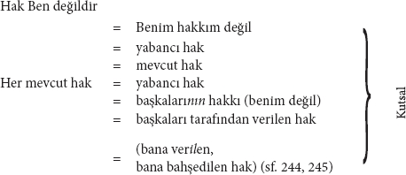
Not No: 1
Okur, 4 no'lu denklemin son önermesinin neden 5 no'lu denklemde birdenbire 3 no'lu denklemin son önermesinin ilk önermesi olarak ortaya çıktığını; yani neden "hak" yerine "her mevcut hak"kın birdenbire ilk önerme olarak ortaya çıktığını merak edecektir. Bunun yapılmasının nedeni Aziz Sanço'nun gerçek, mevcut haktan bahsettiği izlenimini yaratmaktır. Oysa onun kesinlikle böyle bir niyeti yoktur. O, ancak kutsal bir "Yüklem" olarak sunulduğu sürece haktan bahsetmektedir.
Not No: 2
Hak "yabancı hak" olarak belirlendikten sonra artık Aziz Sanço'nun hakkı kendisinden aldığı yabancıyı nasıl belirlemek istediğine bağlı olarak ona "Sultan'ın hakkı", "halkın hakkı" vs. gibi herhangi bir isim verilebilir. Böylece daha da ileri gidilerek, "yabancı hakkın doğa tarafından, tanrı tarafından, halkın seçimiyle vb. verildiğini" (sf. 250); yani "benim tarafımdan" verilmediğini söylemek mümkün olur. Naif olan yalnızca, azizimizin eş anlamlılık aracılığıyla yukarıdaki basit denklemlere bir gelişim görünüşü verme çabasının tarzıdır.
"Eğer ahmağın biri bana hak verirse" (peki ya kendisine hak veren ahmak ta kendisiyse?) "haklılığımdan kuşku duymaya başlarım." (böyle bir durumun söz konusu olması "Stirner"in hayrına olurdu). "Fakat bana hak veren bir bilge bile olsa, bu henüz haklı olduğum anlamına gelmez. Benim haklı olup olmadığım, ahmakların ve bilgelerin bana hak verip vermemelerinden tamamen bağımsızdır. Bununla birlikte, biz şimdiye dek bu hakkı elde etmeye çalıştık. Hak arıyoruz ve bu amaçla mahkemeye başvuruyoruz... Peki ben ne arıyorum bu mahkemede? Benim hakkımı değil Sultan'ın hakkını arıyorum, yabancı hakkı arıyorum... yani, bir yüksek sansür mahkemesi huzurunda sansür hakkını arıyorum." (sf. 244, 245)
Bu ustalıklı pasajda eş-anlamlılığın böylesine ustaca kullanılması karşısında hayranlık duymamak elde değil. Konuşma dilindeki bildik anlamıyla hak verme hukuki anlamdaki hak verme özdeşleştiriliyor. Daha da hayranlık duyulası şey, insanın haklı çıkma zevki uğruna "mahkemeye başvurduğu"na dair dağları yerinden oynatan inançtır; mahkemelerin varlığını insanların haklı çıkma merakına bağlayan bir inançtır bu.*67
Son olarak, Sanço'nun, yukarıda 5 no'lu denklemde olduğu gibi, kendi tümel "Yabancı Hak" kategorisini sonradan kendinden daha emin bir biçimde sunabilmek için peşinen daha somut bir ismi, mevcut durumda "Sultan'ın hakkı"nı içeri sızdırmada gösterdiği ustalık da dikkate şayandır.
| Yabancı hak | = | Benim hakkım değil |
| Benim yabancı hakka sahip olmam | = | Haklı olmamak |
| = | Hakka sahip olmamak | |
| = | Haklardan yoksun olmak (sf. 247) |
|
| Benim hakkım | = | Senin hakkın değil |
| = | Senin haksızlığın | |
| Senin hakkın | = | Benim haksızlığım |
Not.
"Siz başkaları karşısında haklı olmak istiyorsunuz" (bunu şöyle okumalı: kendi hakkınız olsun istiyorsunuz). "Bunu yapamazsınız, onların karşısında daima "haksız" olursunuz; çünkü onlar da 'kendi' hakları peşinde olmasalardı sizin karşıtınız olmazlardı. Onlar sizi daima 'haksız görecek'... Haklılık zemininde kalmaya devam ederseniz, haklı çıkma merakında ısrar etmiş olursunuz." (sf. 248, 253)
"Gelin konuyu bir başka yönden ele alalım." Aziz Max böylece hak konusundaki birikimini yeterince belgeledikten sonra, şimdi hakkı bir kez daha Kutsal olarak belirleyip bu vesileyle Kutsal'a daha önce atfedilen sıfatları, aralarına "Hak"kı da katarak tekrarlamakla kendini sınırlayabilir.
"Hak dinsel bir kavram, yani kutsal bir şey değil mi?" (sf. 247)
"Kendisi dinsel bir bakış açısına sahip olmayan biri 'Hak' talep edebilir mi?" (agy.)
"'Kendinde ve kendisi için' hak. Yani benle ilişkisi yok? 'Mutlak hak'! Yani benden ayrı. – 'Kendinde ve kendisi için varolan' bir şey: – Bir Mutlak! Ebedi bir hak! Tıpkı ebedi bir hakikat gibi – Kutsal" (sf. 270)
"Siz başkalarından ürküyorsunuz, çünkü onların yanında hak hayaletini gördüğünüzü sanıyorsunuz!" (sf. 253)
"Heyulayı kendinizden yana kazanmak için etrafta sessizce dolanıyorsunuz." (agy.)
"Hak, bir heyula tarafından dağıtılan saplantıdır. (Yukarıda verilen iki önermenin sentezi) (sf. 276)
"Hak... sabit bir fikirdir." (sf. 270)
"Hak Tin'dir..." (sf. 244)
"Çünkü hak ancak bir Tin tarafından verilebilir." (sf. 275)
Aziz Sanço, Eski Ahit'te açıkladığı şeyi, yani "sabit fikir"in ne olduğunu şimdi yeniden açıklıyor. Aradaki tek fark, "Hak"kın burada "sabit fikir"in "bir başka örneği" olarak her yerde boy göstermesi.
"Hak aslen benim düşüncemdir, ya da onun417" (!) "kökeni bendedir. Fakat benden uzaklaştı mı" (halk ağzıyla, kirişleri kırdı mı) "'söz' gitti mi, et olmuştur418" (dilerse Aziz Sanço onunla karnını doyurabilir) "sabit bir fikir olmuştur". Bu nedenle de Stirner'in kitabı baştan sona, "kendisinden uzaklaşan" ama bizim tarafımızdan yine yakalanıp o pek methedilen "ahlaki ıslahevi"ne kapatılan "sabit fikirlerden" ibaret. "Artık bu düşünceden kurtulamıyorum" (hem de düşünce ondan kurtulduktan sonra!) "nereye dönsem, karşımda buluyorum." (belik arkasında asılı419) "Böylece insanlar kendi yarattıkları 'hak' düşüncesini bir daha hiç zaptedemediler. Yarattıkları mahlûk denetimlerinden çıkıp onları peşinden sürükledi. Bu, benden kurtulan" (hey gidi eş anlamlılık) "ve serbest kalan mutlak haktır. Ona mutlak olarak taparak onu yeniden yiyip tüketemeyiz. O, yaratıcı gücümüzü elimizden alır; yaratı, yaratıcıdan fazlasıdır artık, o kendinde ve kendi içindir. Bir kez de hakkın serbestçe etrafta dolaşmasına izin verme..."
(Bu tavsiyeye hemen bu cümleyle birlikte uyacak ve onu bir dahaki emre kadar zincire vuracağız.) sf. 270.
Aziz Sanço bu şekilde hakkı, kutsallaştırma vecibelerinin gerektirdiği her türlü su ve ateş sınavından geçirip kutsal ilan ettikten sonra, onu böylelikle yok etmiş oldu.
"Mutlak hakla birlikte hakkın kendisi yok olur ve aynı zamanda "hak kavramının egemenliğine" (hiyerarşi) "son verilir. Zira unutmamak gerekir ki şimdiye dek bize kavramlar, fikirler ve ilkeler hükmediyordu ve bu egemenler arasında en önemli rollerden birini hak kavramı ya da adalet kavramı oynuyordu. (sf. 276)
Hak ilişkilerinin burada bir kez daha hak kavramının egemenliği olarak ortaya çıkıyor olmasına ve Stirner'in hakkı bir kavram, dolayısıyla da Kutsal ilan etmesiyle bile onu öldürüyor olmasına artık alışmış bulunuyoruz. Bu konuda "Hiyerarşi" bölümüne bakınız. Hak, insanların maddi ilişkilerinden ve aralarındaki bundan kaynaklı çelişiklikten doğmamakta, tersine "kafalarından çıkarıp atmaları" gereken tasavvurlarıyla çelişikliklerinden doğmaktadır. Bakınız "Mantık".
Hakkın bu son kutsanma biçimi aşağıdaki üç notu da kapsamaktadır:
Not 1.
"Bu yabancı hak benimkiyle örtüştüğü sürece, kuşkusuz kendiminkini de onda bulurum." (sf. 245)
Aziz Sanço, varsın bu önerme üzerinde şimdilik düşünedursun.
Not 2.
"Egoist çıkar bir kez içeri sızdı mı, toplum yozlaşır... eski Roma gelişkin medeni hukukuyla buna örnektir." (sf. 278)
Buna göre, Roma toplumu daha en başından beri yozlaşmış Roma toplumu olmalıydı; çünkü On Levha'da[118] egoist çıkarlar, imparatorluk döneminin "gelişkin medeni hukuku"nda olduğundan çok daha keskin biçimde öne çıkmaktadır. Hegel'den kalan bu talihsiz hatırada demek ki medeni hukuk, Kutsal'ın değil Egoizm'in bir belirtisi olarak kabul edilmektedir. Aziz Sanço, burada da varsın, medeni hukukun özel mülkiyetle ne ölçüde ilişkili olduğu üzerine ve medeni hukukun, Aziz Sanço'nun kutsal oldukları dışında haklarında hiçbir şey söyleyemediği diğer pek çok yasal ilişkiyi ne ölçüde belirlediği üzerinde düşünsün. (Bakınız: "Özel mülkiyet, devlet ve hukuk")
Not 3.
"Hak, kavramdan elde edilmiş olmasına rağmen, yine de o sadece insanların ihtiyaçlarına faydalı olduğu için varlık kazanır."
Azizimizin modern dünyadaki kavramlar hiyerarşisini aldığı Hegel böyle söyler (Hukuk Felsefesi423, § 209, Ek). Nitekim Hegel hakkın varlığını bireylerin ampirik ihtiyaçlarından yola çıkarak açıklar ve yalnızca basit bir doğrulama aracılığıyla kavramı kurtarır. Hegel'in bizim "cismani Ben"imiz Aziz Sanço'yla karşılaştırılmayacak ölçüde materyalistçe hareket ettiği görülüyor.
B. Basit antitezler yoluyla kendine mal etme
| a) İnsanın hakkı | – | Benim hakkım |
| b) İnsan hakkı | – | Egoist hak |
| c) Yabancı hak = başkalarının hak tanıması | }–{ | Benim hakkım = benim hak tanımam |
| d) Hak, insanın hak gördüğü şeydir | }–{ | Hak, benim hak gördüğüm şeydir. |
"Bu egoist haktır; yani ben onu hak olarak görüyorum, o halde o haktır" (passim424, son cümle sf. 251)
Not 1.
"Eğer kendi kendime yasaklamazsam, yanlış bir şey olarak cinayetten korkmazsam, ben kendime cinayet işlemeye hak tanıyorum demektir." (sf. 249)
Bu şu anlama gelmeli: Kendi kendime yasaklamazsam, cinayetten korkmazsam eğer cinayet işlerim. Bu önerme, "hak tanıma"nın anlamını yitirdiği c antitezindeki ikinci denklemin övünmeci bir tarzla doldurulmasından ibarettir.
Not 2.
"Bunun kendi içimde bir hak olup olmadığına ben karar veririm; benim dışımda hiçbir hak yoktur." (sf. 249) – "Biz içimizde olan şey miyiz? Bizim dışımızda olandan daha çok değil... tam da içimizde barınan tin olmadığımız için, tam da bu nedenle onu dışımıza aktarmamız... dışımızda ... öte dünyada var olan bir şey olarak düşünmemiz gerekiyordu." (sf. 43)
Yani, 43. sayfadaki kendi açıklamasına göre Aziz Sanço, "içindeki" hakkı tekrar "dışına" ve gerçekten de "öte dünyaya" aktarmak zorundadır. Ne var ki o bir kez bu yaklaşımla kendine mal etmek istiyorsa, o halde ahlakı, dini, "Kutsal" ne varsa "içine" aktarabilir ve böylece ileride yine sayfa 43'e göre yeniden kendi dışına, öte dünyaya aktarabilsin diye bunların "kendi içinde" Ahlaki, Dinsel, Kutsal olup olmadığına karar verebilir; zira "kendi dışında" ne ahlak, ne din ne de kutsallık vardır. Böylelikle Hıristiyan modele göre "bütün şeylerin geri getirilişi" sağlanmış olmaktadır.
Not 3.
"Benim dışımda hiçbir hak yoktur. Ben onu hak olarak görüyorsam, o halde haktır. Bu nedenle onun başkalarınca henüz hak olmaması mümkündür." (sf. 249)
Kastedilen şu: Eğer o benim için haksa, o halde o benim için haktır, ama başkaları için henüz değildir. Aziz Sanço'nun "hak" sözcüğüyle yaptığı eş anlamlılığa dayalı "pire sıçramaları"na dair yeterince örnek görmüş bulunuyoruz. Hak ve hak, yasal "Hak", ahlaki "Hak", onun "hak" olarak gördükleri vs. –tüm bunlar, onun işine geldiği biçimde, karmakarışık bir halde kullanılmaktadır. Aziz Max hak konusundaki önermelerini başka bir dilde ifade etmeye çalışsın bakalım; saçmalıkları o zaman tümüyle açığa çıkacaktır. Bu eş anlamlılık "Mantık"ta ayrıntılı olarak ele alındığından burada yalnızca buna dikkat çekmemiz yeterli olacaktır.
Yukarıdaki önermenin aynısı bir de üç değişik "dönüşüm" altında ortaya konuluyor:
A. "Benim haklı olup olmadığıma karar verecek kendimden başka bir yargıç yoktur. Benim haklılığımı kabul edip etmeyeceklerine ve bunun onlar açısından da bir hak olup olmadığına yalnızca başkaları yargıda bulunabilir ve bir karara varabilir." (sf. 246)
B. "Toplum herkes kendi hakkını elde etsin ister istemesine ama bunlar sadece toplum tarafından onaylanan haklardır, toplumsal haklardır, gerçek anlamda kendisinin hakkı değildir." (Şu kastediliyor: Kendisinin. Hak sözcüğünün ise burada hiçbir anlamı yoktur. Ve böbürlenmeye devam eder:) "Ancak ben, kendi kusursuz gücüme dayanarak hakkı kendime veriyor ya da alıyorum ... Benim hakkımın sahibi ve yaratıcısıyım" (yalnızca önce hakkı kendi düşüncesi olarak ilan edip sonra da bu düşünceyi kendisi içine aldığının güvencesini verdiği sürece "yaratıcı"dır) "kendimden başka bir hak kaynağı tanımam; ne tanrıyı ne de devleti, ne doğayı ne de insanı, ne tanrısal ne de insani hakları." (sf. 269)
C. "İnsani hak daima verili bir şey olduğu için, bu her zaman insanların birbirlerine verdikleri, yani birbirlerine tanıkları hakka karşılık gelir." (sf. 251)
Oysa egoist hak ise benim kendime verdiğim ya da aldığım haktır.
Bu arada "son olarak", üzerinde karşılıklı olarak "uzlaşılan" Sanço'nun Milenyum'undaki426 egoist hakkın, insanların birbirine "verdikleri" ya da "tanıdıkları" haktan çok da farklı olmadığını "görmek mümkün".
Not 4.
"Son olarak şimdi bir de, yalnızca hakkın işkembesini eşip araştırdığım sürece kullanmak istediğim ve en azından sözcüğün kendisinin kalmasına izin verdiğim yarım ifade tarzını geri almam gerekiyor. Ne var ki, hakikaten, kavramla birlikte sözcük de anlamını yitiriyor. Benim hakkım olarak adlandırdığım şey, artık hiç mi hiç hak değildir." (sf. 275)
Herkes Sanço'nun yukarıdaki antitezlerde neden hak "Sözcük"ünün kalmasına izin verdiğini bir bakışta anlayacaktır. Çünkü o, bırakın eleştirmeyi, hakkın içeriğinden bile hiç söz etmediğinden, ancak hak sözcüğünü saklı tutarak haktan söz ettiği izlenimini verebilmektedir. Hak sözcüğü antitezden çıkarılacak olursa, geriye yalnızca "ben", "benim" ve birinci şahıs zamirinin diğer gramersel biçimleri kalacaktır. İçerik de her zaman ancak örnekler aracılığıyla devreye giriyordu. Ama örnekler de yukarıda gördüğümüz üzere, eğer cinayet işlersem, o halde cinayet işlerim vb. gibi bir totolojilerin ötesine geçmiyor ve bunların arasına "hak", "hak tanımak" vb. sözcükler, sırf basit totolojinin üstünü örtmek ve antitezlerle herhangi bir bağ kurmak üzere yerleştiriliyordu. Kaldı ki, hak konusundaki şu boş gevezeliklerin ne kadar zengin bir böbürlenme kaynağı sağladığı bir bakışta görülüyor.
Demek ki bütün o "Hakkın işkembesini eşeleme"ler, Aziz Sanço'nun "yarım ifade tarzını kullanması"ndan ve "en azından sözcüğün kendisinin kalmasına izin vermesi"nden ibaretti; çünkü mesele hakkında söyleyebilecek hiçbir şey bilmiyordu. Eğer antitezin bir anlamı olacaksa, yani eğer "Stirner" bu antitezle sadece haktan duyduğu tiksintiyi kanıtlamak istediyse, o halde şunu söylemek gerekir ki, "hakkın işkembesini eşeleyen" o değildi; tersine hak onun işkembesini "eşeledi", o sadece hakkı hak görmediğini zapta geçirdi. "Bu hakkı budanmamış halde saklasın kendine", Jacques le bonhomme!
Bu içi boşluğa herhangi bir içerik verebilmek için Aziz Sanço'nun başka bir mantıksal manevra daha yapması gerekti. Bu manevrayı büyük bir "virtüözlükle", kutsallaştırmayla ve basit antitezle iyice birbirine karıp sık sık araya açıklamalar yerleştirerek nihayetinde öyle bir şekilde kamufle etti ki, elbette Alman kamuoyu ve Alman filozofları onun iç yüzünü görmeyi başaramadı.
C. Bileşik antitezler yoluyla kendine mal etme
"Stirner" şimdi, hakkın, bireye atfedebileceği ampirik bir belirlenim getirmek zorunda; yani, hakka kutsallık dışında bir şey daha tanımak zorunda.
Bu noktada, çevirdiği bütün o hantal dolapları kendine saklayabilirdi; zira modern çağda Machiavelli, Hobbes, Spinoza, Bodinus vb. gibi düşünürlerden beri –öncekilerini saymıyoruz bile– güç, hakkın temeli olarak ortaya kondu. Böylelikle siyasetin teorik görüşü ahlaktan kurtarıldı ve sadece siyasetin bağımsız bir ele alınışının postulatı elde edilmiş oldu. Daha sonraları, 18. yüzyılda Fransa'da ve 19. yüzyılda İngiltere'de, hak tümüyle –ki Aziz Max bundan hiç söz etmez– medeni hukuka, medeni hukuk da tamamen belirli bir güce, özel mülkiyet sahiplerinin gücüne indirgendi; ne var ki bu kesinlikle salt bir söylem olarak kalmadı.
Yani Aziz Sanço güç belirlenimini haktan çıkarıp alıyor ve aşağıdaki gibi açıklıyor:
"Devletleri, 'en yüksek zor'un nasıl bölüşüldüğüne göre sınıflandırmak alışkanlığındayız... yani en yüksek zor! Kime karşı zor? Tekile karşı... devlet zor uygular... devletin davranış şekli zor kullanımıdır ve o bu zoru hak olarak adlandırır... Tümel... haklı denen yani hak olan bir zora sahiptir." (sf. 259, 260)
"Bizim" "alışkanlığımız" aracılığıyla azizimiz, özlediği zora kavuşuyor. Artık kendisine "göz kulak olabilir."427
Hak, insanın gücü – güç, benim hakkım.
Ara denklemler:
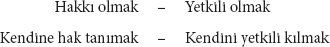
Antitez:
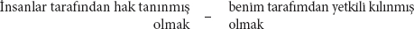
Birinci antitez:
Şimdi şuna dönüştürülmektedir:
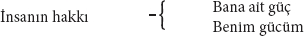
Çünkü tezde hak ve güç özdeştir ve daha önce gördüğümüz gibi, hak "bütün anlamını yitirdikten" sonra antitezdeki "yarım ifade tarzı" "geri alınmak" zorundadır.
Not 1. Yukarıdaki antitez ve denklemleri tumturaklı ve kibirli söylemlerle tarif etmenin örnekleri:
"Ne olmaya gücün varsa, buna hakkın da vardır." – "Ben tüm hakkı ve bütün yetkiyi kendimden türetirim. Yapma gücüne sahip olduğum her şeyi yapmaya hakkım var." – "Ben herhangi bir hak talep etmiyorum, bu nedenle herhangi bir hak tanımam da gerekmiyor. Zorla elde edebildiklerimi zorla elde ederim, zorla elde edemediklerim üzerinde de hakkım yoktur vb. – Haklı ya da haksız olmak; bu beni ilgilendirmiyor. Yeter ki gücüm olsun; bu durumda zaten kendiliğinden yetkilenmiş olurum ve başkaca herhangi bir yetkilendirmeye ya da hak tanınmasına ihtiyacım yoktur." (sf. 248, 275)
Not 2. Aziz Sanço'nun gücü nasıl hakkın reel temeli olarak açıkladığına dair örnekler:
"Komünistler şöyle der" (Bluntschli'nin makalesi428 ile Becker'in Halk Felsefesi ve belki birkaç yazı dışında komünistlere ait hiçbir şeye göz gezdirmemiş olduğu halde "Stirner", komünistlerin neler söylediğine dair onca şeyi nereden biliyor, hayret!):
"Eşit iş, insanlara eşit haz hakkı sağlar... Hayır, bu hakkı sağlayan eşit iş değildir, yalnızca ve yalnızca eşit haz sana eşit haz hakkı sağlar. Haz alıyorsan, haz almaya hakkın vardır demektir... Haz alıyorsanız eğer, o halde o sizin hakkınızdır; ne var ki onu kapıp almıyor ve yalnızca hasretini çekiyorsanız, o halde o, haz alma ayrıcalığına sahip olanların 'kazanılmış hakkı' olarak kalmaya devam edecektir. Bu, onların hakkıdır; tıpkı sizin kapıp almanızla birlikte sizin hakkınız olacağı gibi." (sf. 250)
Burada komünistler söylüyormuş gibi dile getirilenlerle daha önce "Komünizm" bölümünde söylenenleri karşılaştırınız. Aziz Sanço, proleterleri burada yine, o güne kadar varolan dünya düzenine hemen ertesi gün toptan son vermek için yalnızca onu "kapıp alma" kararını vermesi gereken "kapalı bir toplum" olarak takdim ediyor. Ne var ki proleterler gerçekte, kendi haklarını talep etmelerinin de önemli bir rol oynadığı uzun bir gelişim süreci içinde bu birliğe ulaşırlar. Kaldı ki, bu hak talepleri onları "Onlar" haline, birleşmiş devrimci bir kitle haline getirmelerinin yalnızca bir aracıdır. Bunun dışında yukarıdaki önermeye baktığımızda, güç ve hak sözcükleri çıkarıldığında –ki bunu içeriğe hiçbir zarar vermeden yapmak mümkün– bu önermenin baştan sona totolojinin parlak bir örneği olduğu hemen görülecektir. İkincisi Aziz Sanço kişisel güç ile maddi güç429 arasında bizzat ayırım yapar. Dolayısıyla haz almak ile güce haiz olmak arasında ayrım yapar.430 Haz alma konusunda büyük bir güce (yeteneğe) sahip olabilirim, ama bu nedenle aynı zamanda maddi güce (para vb.) sahip olmam gerekmiyor. Demek ki gerçek anlamdaki "hazzım" hâlâ hipotetik durumdadır.
"Kral çocuğunun kendini diğer çocukların üzerine koyması" diyerek çocuk severlere uygun örnekler vermeyi sürdürüyor muallimimiz, "onun, daha şimdiden üstünlüğünü sağlama alan eylemidir. Öteki çocukların bu eylemi kabul edip onaylamaları da onların eylemidir. Bu davranış onları tebaa olmaya layık kılar." (sf. 250)
Bu örnekte, kral çocuğuyla öteki çocuklar arasındaki toplumsal ilişki, kral çocuğunun gücü, hem de kişisel gücü ve diğer çocukların güçsüzlüğü olarak kabul edilmektedir. Kral çocuğu tarafından buyruğu altına girmeye razı olmaları öteki çocukların "eylem"i olarak ele alınacaksa, o halde bu, olsa olsa onların egoist olduğunu kanıtlar. "Özgülük, küçük egoistlerin içinde iş başındadır" ve onları kral çocuğunu istismar etmeye, ondan bir menfaat koparmaya sevk eder.
"Cezanın suçlunun hakkı olduğu söylenir." (yani Hegel tarafından431) "Cezaya uğramamak da aynı şekilde onun hakkıdır. Giriştiği işi başarırsa hak etti demektir, işi başaramadığında yine hak etti demektir. Bir kimse kör cesaretle tehlikelere atılır ve bu sırada canından olursa elbette şöyle deriz: Bunu hak etti, kendi kaşındı. Ama bu tehlikelerin üstesinden gelirse, yani gücü üstün gelirse o zaman da hak ettiğini söyleriz. Bir çocuk bıçakla oynar ve bir yerini keserse, hak etmiştir; ama kesmezse yine hak etmiştir. Dolayısıyla suçlu, riske attığının acısını çektiğinde, o bunu hak etmiştir; olası sonuçlarını bildiği halde niye risk aldı ki?" (sf. 255)
Son cümlenin, suçluya neden risk aldığının sorulduğu son kısmıyla, bütün pasajın muallimlere özgü saçmalığının üzeri örtülür. Bir eve girip hırsızlık yaparken düşerek bacağını kıran suçlunun ya da bıçakla oynarken bir yerini kesen çocuğun bunu hak edip etmediği... ancak Aziz Sanço gibi birinin kafa yorabileceği tüm bu önemli sorulardan çıkan tek sonuç burada tesadüfün benim gücüm olarak ilan edildiğidir. Nitekim "benim gücüm", ilk örnekte benim eylemim, ikincisinde, benden bağımsız toplumsal ilişki, üçüncüsünde tesadüf idi. Ne var ki bu birbiriyle çelişkili belirlenimleri daha önce de özgülük bölümünde görmüştük.
Sanço yukarıdaki çocuksu örneklerin arasına bir de aşağıdaki eğlenceli faslı sıkıştırıyor:
"Aksi takdirde hakkın burnu balmumundan432 olurdu işte. Üzerime saldıran kaplan haklıdır, onu öldüren ben de haklıyım. Ben ona karşı hakkımı değil, kendimi korumuş olurum." (sf. 251)
Bu pasajın ilk bölümünde Aziz Sanço, kendisiyle kaplan arasında bir hak ilişkisi kuruyor; ama ikinci bölümde burada esas olarak bir hak ilişkisinin söz konusu olmadığı aklına geliyor. Bu nedenle "işte, hakkın burnu balmumundandır". "İnsan"ın hakkı "kaplan"ın hakkı içinde eriyip kayboluyor.
Böylelikle hak eleştirisi sona ermiş oluyor. Geçmişteki yüzlerce yazardan, hakkın zordan doğduğunu bilmemize rağmen, şimdi Aziz Sanço'dan "Hak"kın "insanın zoru" olduğunu öğreniyoruz. Bu sayede de hak ile gerçek insanlar ve onların ilişkileri arasındaki bağ hakkındaki tüm soruları başarıyla ortadan kaldırıyor ve antitezini oluşturuyor. Hakkı, onu varsaydığı şey olarak, yani Kutsal olarak kaldırmakla yetiniyor; yani Kutsal'ı kaldırıp hakkı yerli yerinde bırakmakla yetiniyor.
Bu hak eleştirisi bir yığın epizotla –Stehely'nin yerinde[119] öğleden sonra iki ile dört arasında tartışma "alışkanlığında" olunan her türlü şeyle– allanıp pullanıyor.
1. Epizot. "İnsan hakkı" ve "kazanılmış hak"
"Devrim 'eşitlik'i bir hak olarak damgaladığında, o dini alana, kutsalın, idealin bölgesine kaçtı. O günden beri kutsal, devredilemez insan hakları uğruna süren mücadele bundandır. Çok doğal olarak ve aynı hakla, ebedi insan haklarının karşısına 'var olmanın kazanılmış hakkı' geçerli kılınır; hakka karşı hak. Kuşkusuz burada biri diğeri tarafından haksız ilan edilir. Devrimden bu yana hak üzerine yürütülen tartışma budur." (sf. 248)
Önce, insan haklarının "Kutsal" olduğu ve bu yüzden o günden beridir insan hakları için mücadele yürütüldüğü tekrar ediliyor. Böylelikle Aziz Sanço yalnızca, bu mücadelenin maddi temelinin kendisi için kutsal, yani yabancı kaldığını kanıtlamış oluyor.
"İnsan hakları" ve "kazanılmış hak" ikisi de "hak" olduğundan, bunlar "eşit haklara sahip" oluyor; üstelik burada tarihsel anlamda "hak sahibi" oluyor. İkisi de hukuksal anlamda "hak" oldukları için tarihsel anlamda da "eşit haklara sahip" oluveriyorlar. Bu yolla, meseleye dair hiçbir şey bilmeksizin her şeyi en kısa sürede bir karara bağlamak mümkün oluyor. Örneğin İngiltere'deki Tahıl Yasası mücadelesine dair şunları söylemek mümkün olabiliyor: Kâr (menfaat) karşısında, keza bir kâr (menfaat) olan rant "çok doğal olarak ve eşit hakla" geçerli kılınır. Menfaate karşı menfaat, "kuşkusuz burada biri diğeri tarafından haksız ilan edilir." 1815'ten beri İngiltere'de Tahıl Yasaları[20] üzerine sürdürülen "mücadele budur." –Kaldı ki Stirner daha baştan şunu söyleyebilirdi: Mevcut hak İnsan'ın hakkıdır, insan hakkıdır. Ayrıca, belirli çevrelerde buna "kazanılmış hak" deme "alışkanlığı" da vardır. Peki ama "insan hakkı" ile "kazanılmış hak" arasındaki farka ne oldu?
Yabancı, kutsal hakkın, bana başkaları tarafından verildiğini zaten biliyoruz. Bu durumda insanın haklarına aynı zamanda doğal, doğuştan elde edilen haklar da dendiğine ve Aziz Sanço'da isim, meselenin kendisi olduğuna göre, bunların benim doğal, doğuştan gelen haklarım olduğu sonucu çıkar. Fakat
"kazanılmış haklar aynı şeye, yani doğaya karşılık gelir ki ve doğa, daha doğrusu doğum, dahası da ötesi miras bana bir hak verir" vs.. "Ben bir insan olarak doğdum demek, şunu söylemekle aynı şeydir: Ben bir kral oğlu olarak doğdum."
Yukarıdaki satırlar 249. ve 250. sayfalarda yer alıyor ve aynı sayfalarda Babeuf, farklılıkları ortadan kaldırma konusunda bu diyalektik yeteneğine sahip olmamakla eleştiriliyor. Aziz Sanço'nun daha sonra kabul ettiği üzere "Ben", "her koşul altında" insan "da" olduğu için ve insan olarak sahip olduklarından bu Ben'in "de" yararlandığı için, örneğin kendisi bir Berlinli olarak Berlin Tiergarten'den yararlandığı gibi, o "da" "her koşul altında" insan hakkından yararlanır. Ne var ki kesinlikle "her koşul altında" "kralın oğlu" olarak dünyaya gelmediğinden, "kazanılmış hak"tan kesinlikle "her koşul altında" yararlanamaz. Bu nedenle hukuksal zeminde "insan hakkı" ve "kazanılmış hak" arasında önemli bir fark bulunmaktadır. Yürüttüğü mantığın üzerini örtmesi gerekmeseydi, "burada şöyle demek gerekirdi": Ben, hak kavramını, genelde çözme "alışkanlığında olduğum" yöntemle tasfiye etmiş olduğuma kanaat getirdikten sonra, bu iki özel hak arasındaki mücadele, benim düşüncemde tasfiye olmuş kavram içerisindeki bir mücadeledir ve "bu nedenle" ona artık dokunmama gerek yoktur.
Daha da kusursuz olsun diye Aziz Sanço aşağıdaki ifade şeklini de ekleyebilirdi: İnsan hakkı da elde edilmiştir, yani pekâlâ kazanılmıştır ve kazanılmış hak, insanlarca ele geçirilmiş, insani, insan hakkıdır.
Bu arada, bu türden kavramların, temellerini oluşturan ampirik gerçeklikten koparıldıklarında, bir eldiven gibi ters-yüz edilebildiklerini433, Hegel yeterince ayrıntılı bir biçimde kanıtlamıştı ve onun soyut ideologlar karşısında bu yöntemi kullanmaya hakkı da vardı. Dolayısıyla Aziz Sanço'nun onları bir de kendi "beceriksiz" "dalavereleriyle" gülünç duruma düşürmesine hiç gerek yok.
Şimdiye kadar, Aziz Sanço'nun kafasının dışında tarihte var olan bir mücadeleyi hiçe çevirebilmesi için kazanılmış hak ile insan hakkı, "aynı şeye" "varıyordu". Şimdi azizimiz bize, kafasının "yaratıcı hiçliğinde" var olan yeni bir korkunç mücadele meydana getirebilmek için, ayırt etmekte usta olduğu kadar, her şeyi birbirine katmakta da her şeye kadir olduğunu kanıtlıyor.
"Ben, herkesin insan olarak doğduğunu" (dolayısıyla da, yukarıda Babeuf'e getirilen eleştiriye göre, bir "kral oğlu" olarak da) "dolayısıyla yeni doğanların bu konuda eşit olduklarını teslim etmek de isterim" (yüce gönüllü Sanço) "... bu da sadece, kendilerini henüz salt insan evladı, çıplak insancıklar olarak ortaya koydukları ve davrandıkları içindir." Buna karşılık yetişkinler "kendi yaratımlarının çocuklarıdırlar". Onlar "sırf doğuştan gelen haklardan fazlasına sahiptir, onların edinilmiş hakları vardır."
(Yoksa Stirner, bebeğin annesinin karnından kendi eylemi olmaksızın çıktığına ve ancak bu eylemi gerçekleştirerek anne bedeninin dışında olma "hakkı"nı elde ettiğine mi inanıyor? Ve her çocuk, en başından itibaren kendisini "biricik" bir çocuk olarak ortaya koyup davranmaz mı?)
"Ne yaman bir çelişki, ne yaman bir mücadele alanı! Doğuştan gelen haklar ile kazanılmış haklar arasındaki şu eski kavga!" (sf. 252)
Sakallı adamların süt bebelerine karşı verdiği ne yaman bir kavga!
Kaldı ki, Sanço'nun insanın hakları aleyhinde konuşmasının tek nedeni, "son zamanlarda" onlar aleyhinde konuşmanın tekrar "alışkanlık" haline gelmiş olmasıdır. Gerçekte o bu doğuştan gelen insan haklarını da "kazanmıştır". Özgülük bölümünde "doğuştan Özgür"le karşılaşmışlığımız var; burada, daha salt doğmuş olmakla kendisini Özgür göstererek ve davranarak özgülüğü doğuştan gelen bir insan hakkı haline getirmişti. Dahası da var: "Her Ben daha doğduğu andan itibaren devlete karşı bir suçludur". Burada devlete karşı suç işlemek doğuştan gelen insan hakkı olmakta ve çocuk, henüz kendisi için var olmayan, ama kendisinin onun için var olduğu bir şeye karşı şimdiden suç işlemektedir. En sonunda "Stirner", "doğuştan sınırlı zekâlılar"dan, "doğuştan şairler"den, "doğuştan müzisyenler"den vb. bahsediyor. Burada güç (müziksel, şiirsel, daha doğrusu sınırlı yetenek) doğuştan olduğu ve hak = güç olduğu için, "Stirner"in "Ben"in doğuştan insan haklarına, bu seferlik aralarında eşitlik bulunmasa da, nasıl sahip çıktığı görülmektedir.
2. Epizot. Ayrıcalıklı ve eşit haklara sahip.
Ayrıcalıklar ve eşit haklar için mücadeleyi Sanço'muz önce salt ayrıcalıklı ve eşit haklara sahip "kavramlar" için mücadeleye dönüştürüyor. Bu sayede kendisini, politik ifadesi Ayrıcalık olan Ortaçağ'ın üretim tarzı hakkında ve politik ifadesi genel anlamda Hak, daha doğrusu Eşit Hak olan modern üretim tarzı hakkında ve bu iki üretim tarzının kendilerine karşılık gelen hak ilişkileriyle bağı hakkında bir şeyler öğrenme zahmetinden kurtarıyor. Hatta bu sayede yukarıdaki iki "Kavram'ı", daha basit ifadelerine, eşit ve eşitsize indirgeyebilir ve bir ve aynı şeyin (örneğin başka insanlar, bir köpek vb.) bir kimse için duruma göre önemsiz yani eşit ya da önemli yani eşit olmayan, farklı, yeğlenen vb. vb. olabileceğini kanıtlayabilir.
"Düşkün bir kardeşimiz ise, varsın yüksekliğiyle övünsün." Saint-Jacques le bonhomme 1:9.434
II. Yasa
Burada okura azizimizle ilgili büyük bir sırrı ifşa etmek zorundayız. – Şöyle ki hak konusunu incelemesine hakkın genel bir açıklamasıyla başlıyor ama haktan söz ettiği sürece bu açıklama aklından "uçup gidiyor" ve onu ancak bambaşka bir konudan, yani yasadan söz etmeye başladığında yeniden hatırlayıveriyor. O vakitler İncil azizimize seslendi: Yargılama ki sen de yargılanmayasın.435 –ve o ağzını açtı, öğretti ve konuştu:
"Hak toplumun ruhudur" (Fakat toplum Kutsal'dır). "Eğer toplumun bir iradesi varsa, o halde bu irade haktır işte: Toplum yalnızca hak aracılığıyla var olur. Fakat o yalnızca bu sayede," (hak aracılığıyla değil, yalnızca bu sayede) "tekil üzerinde bir egemenlik kurması sayesinde var olduğu için, o halde hak, onun egemenlik sürme iradesidir." (sf. 244)
Yani, "hak ... dır ... varsa ... o halde ... işte ... yalnızca ... var olur ... fakat ... yalnızca bu sayede ... var olduğu ... için ... o halde ... egemen iradesidir." Bu cümle, tamama ermiş Sanço'dur.
Bu cümle, azizimizin aklından o zamanlar "uçup gitmişti" çünkü tezlerine uymuyordu; şimdi ise kısmen işine yaradığı için onu kısmen yeniden hatırlıyor.
"Devletler, bir egemen irade mevcut olduğu ve bu egemen irade kişinin kendi iradesiyle eş anlamlı görüldüğü sürece baki kalır. Egemenin iradesi yasadır." (sf. 256)
| Toplumun egemenlik sürme iradesi | = | Hak |
| Egemen irade | = | Yasa |
| Hak | = | Yasa |
"Arada sırada", yani onun yasa konusundaki "incelemesinin" alâmetifarikası olarak, hak ile yasa arasında bir fark da belirecek ve tuhaftır ki "uçup giden" hak tanımının "hak" üzerine "incelemesi"yle ne kadar az ilgisi varsa bu farkın da yasa üzerine "incelemesiyle" neredeyse o kadar az ilgisi var:
"Ne var ki hak olan, bir toplumda meşru olan şey, yasada da dile gelir." (sf. 255)
Bu önerme, Hegel'den yapılan "beceriksiz" bir kopyadır:
"Yasaya uygun olan şey, neyin hak olduğuna ya da aslında neyin meşru olduğuna dair bilginin kaynağıdır."
Sanço'nun "dile gelir" dediği şeye Hegel de "konulan", "bilinen" vb. adını verir. "Hukuk Felsefesi", § 211 vd.
Aziz Sanço'nun toplumun "iradesi" ya da "egemenlik sürme iradesi" olarak neden hakkı hak konusundaki "inceleme"sinin dışında bırakmak zorunda olduğunu anlamak çok kolay. O, Hak ancak insanın gücü olarak tanımlandığı ölçüde onu kendi gücü olarak tekrar içine alabilirdi. Yani, kendi antitezinin selameti için materyalist "güç" belirlenimine sıkıca sarılması, idealist "irade" belirleniminin ise "uçup gitmesine" izin vermesi gerekiyordu. Şimdi "yasa"dan söz ederken neden "irade"yi yeniden hatırlayıverdiğini, yasa hakkındaki antitezlerini ele aldığımızda göreceğiz.
Gerçek tarihte gücü hakkın temeli olarak gören teorisyenler, iradeyi hakkın temeli olarak gören teorisyenlerin en dolaysız karşıtını oluşturuyorlardı. Aziz Sanço bunu, realizm (Çocuk, Antik, Zenci vb.) ile idealizm (Genç, Modern, Moğol vs.) arasındaki karşıtlık olarak da kabul edebilirdi. Eğer güç, Hobbes'un ve diğerlerinin yaptığı gibi hakkın temeli olarak görülürse, bu durumda hak, yasa vb., devlet iktidarının dayandığı başka ilişkilerin yalnızca semptomunu, ifadesini oluşturur. Bireylerin, kesinlikle yalnızca kendi "irade"lerine bağlı olmayan maddi yaşamı ve birbirlerini karşılıklı olarak koşullayan üretim tarzlarıyla ekonomik ilişki biçimleri, devletin gerçek temelidir ve toplumsal iş bölümüyle özel mülkiyetin hâlâ zorunlu olduğu bütün aşamalarda, bireylerin iradelerinden tamamen bağımsız olarak, böyle olmaya devam edecek. Bu gerçek ilişkiler, kesinlikle devlet iktidarı tarafından yaratılmış değildir; aksine, devlet iktidarını yaratan güç onlardır. Bu ilişkiler içerisinde egemen olan bireyler, güçlerinin devlet biçiminde yapılanmak zorunda oluşu bir kenara, bu belirli ilişkiler tarafından koşullanan iradelerine, devlet iradesi, yani yasa biçiminde tümel bir ifade kazandırmak zorundadırlar. Bu ifadenin içeriği, medeni hukuk ile ceza hukukunun apaçık gösterdiği gibi daima söz konusu sınıfın ilişkileri tarafından belirlenir. Cüsselerinin ağırlığı nasıl ki onların idealist iradesine ya da keyfiyetine bağlı değilse, kendi iradelerini yasa biçiminde geçerli ve aynı zamanda aralarındaki her bir tekilin kişisel keyfiyetinden tamamen bağımsız kılmaları da aynı şekilde ona bağlı değildir. Kişisel egemenlikleri, aynı zamanda bir ortalama-egemenlik biçimini almak durumundadır. Onların kişisel gücü, pek çok birey tarafından paylaşılmasıyla gelişen ve egemenler olarak hem başkalarına karşı, hem de aynı zamanda herkes için geçerli kılarak sürekliliğini sağlamak zorunda oldukları yaşam koşullarına dayanır. Onların ortak çıkarları tarafından belirlenen bu iradenin ifadesi yasadır. Tam da birbirlerinden bağımsız bireylerin ve kendi iradelerinin –bu zeminde birbirlerine karşı davranışları açısından zorunlu olarak egoist bir nitelik taşıyan– geçerli kılınması, yasada ve hakta kendini inkârı zorunlu kılıyor. Bu istisnai durumda kendini inkâr, ortalamada kendi çıkarlarının öne sürülmesidir (ki bu, bu nedenle onların gözünde değil, yalnızca "kendisiyle barışık egoist"in gözünde kendini inkâr sayılıyor). Aynı şey, egemenlik altındaki sınıflar için de geçerlidir. Yasa ve devletin varlığı onların iradesine aynı şekilde bağlı değildir. Örneğin üretici güçler, rekabeti gereksiz kılacak bir düzeyde gelişmemiş olduğu ve bu nedenle de rekabeti hep yeniden doğurdukları sürece, egemenlik altındaki sınıfların, rekabeti ve onunla birlikte devleti ve yasayı ortadan kaldırma "iradesi", imkânsızı istiyor olmaktan ibaret olurdu. Kaldı ki, bu "irade", ilişkiler onu doğuracak ölçüde gelişmezden önce sadece ideologun hayal dünyasında oluşur. Ancak ilişkiler bu iradeyi doğuracak ölçüde geliştikten sonra, ideolog onun salt keyfi, dolayısıyla da her zaman ve her koşulda elde edilebilir olduğunu düşünebilir.
Hak gibi suç da, yani tek başına bir bireyin egemen ilişkilere karşı mücadelesi de, salt keyfiyetin bir ürünü değildir. Aksine o da, tıpkı egemenlik gibi, aynı koşullara bağlıdır. Hakta ve yasada, bağımsız olarak varolan genel bir iradenin egemenliğini gören hayalperestler, suçta da salt hakkın ve yasanın çiğnenmesini görebilirler. Demek ki, devlet egemen irade aracılığıyla varlığını sürdürmemektedir, ama bireyin maddi yaşam biçiminden doğan devlet, egemen irade görünümüne de sahiptir. Egemenliği yitirdiğinde, yalnızca irade değil, bireylerin maddi varoluşları ve yaşamı da değişmiştir. İradeleri sırf bu yüzden değişmiştir. Hakların ve yasaların "miras alınması"[120] mümkündür. Ama bu durumda onlar artık egemen değil nominaldir. Antik Roma hukukunun ve İngiliz hukukunun tarihi bize bunun çarpıcı örneklerini sunuyor. Düşüncelerin, bu düşüncelerin temelini oluşturan bireylerden ve ampirik ilişkilerden koparılması yüzünden, filozoflar arasında nasıl bir saf düşünce teorisinin ve tarihinin ortaya çıkabildiğini daha önce gördük. Aynı şekilde burada yine hakkı gerçek temelinden koparıp böylece farklı çağlarda çeşitli değişikliklere uğrayan ve kendi yaratımlarına, yani yasalar içinde kendi bağımsız tarihine sahip olan bir "egemenlik sürme iradesi" elde edilebilir. Bu suretle siyasal tarih ile burjuva tarih, birbirini izleyen yasaların egemenliğinin ortaya konduğu bir tarih içinde ideolojik bir biçimde tasfiye olur. Jacques le bonhomme'un sans-façon436 benimsediği siyasetçilere ve hukukçulara özgü yanılgı budur. O, örneğin, yasaları, egemenlik sürme iradesinin yalnızca akla aniden gelen fikirleri olarak gören ve onların bu yüzden dünyanın en "kaba yerinde"[121] başarısızlığa uğradığını düşünen IV. Friedrich Wilhelm gibi aynı yanılgıya düşmektedir. Onun son derece zararsız gariplikleri kraliyet fermanlarından daha öteye geçebilmiş değildir. O, yirmi beş milyonluk, yani İngiltere'nin devlet borcunun yüzde onu kadar bir borç vermek için emir versin bakalım; o zaman kendi egemenlik sürme iradesinin aslında kimin iradesi olduğunu görecektir. Bu arada ileride Jacques le bonhomme'un efendisi ve Berlinli hemşehrisinin hayaletlerini ya da heyulalarını, hak, hukuk, suç vb. üzerine kendi teorik saplantısını kurgulamak için doküman olarak kullandığını göreceğiz. Bu bizi fazla şaşırtmamalı. Zira, Vossische Zeitung'un heyulası bile ona tekrar tekrar bir şeyler "takdim ediyor"; örneğin hukuk devletini. Yasamanın, örneğin tüm ülkelerde yoksullara yönelik yasaların yapımının, en yüzeysel bir şekilde incelenmesi, egemenlerin, salt "egemenlik sürme iradeleri"yle, yani yalnızca isteyenler olarak herhangi bir şeyi sağlayabileceklerine inandıkları zaman işi nereye kadar götürdüklerini gösterecektir. Kaldı ki Aziz Sanço, kendi iradesini, az sonra keyfine varacağımız denklemlerde ve antitezlerde fevkalade bir biçimde sergileyebilmek ve kafasına koyduğu herhangi bir düşünceyi, tekrar kafasından çıkarıp atabileceği sonucuna ulaşabilmek için hukukçularla politikacıların egemenlik sürme iradesi hakkındaki yanılgıyı benimsemek zorundadır.
"Sevgili kardeşlerim, çeşitli sınamalarla karşılaştığınızda, bunu büyük sevinç olarak görün." Saint-Jacques le bonhomme; 1:2.437
| Yasa | = | Devletin egemenlik sürme iradesi |
| = | Devlet iradesi |
Antitezler:

Denklemler:
| A) | Devlet iradesi | = | Benim iradem değil |
| B) | Benim iradem | = | Devlet iradesi değil |
| C) | İrade | = | İstemek |
| D) | Benim iradem | = | Devleti istememek |
| = | Devlete karşı irade | ||
| = | Devlete karşı nefret | ||
| E) | Devlet-olmayanı istemek | = | Öz-irade |
| Öz-irade | = | Devleti istememek | |
| F) | Devlet iradesi | = | Benim irademin hiçliği |
| = | Benim iradesizliğim | ||
| G) | Benim iradesizliğim | = | Devlet iradesinin varlığı |
(Devlet iradesinin varlığının devletin varlığına eşit olduğunu önceki denklemlerden biliyoruz. Buradan şu yeni denklemler elde ediliyor:)
| H) | Benim iradesizliğim | = | Devletin varlığı |
| I) | Benim iradesizliğimin olmayışı | = | Devletin var olmayışı |
| K) | Öz-irade | = | Devletin hiçliği |
| L) | Benim iradem | = | Devletin var olmayışı |
Not 1. Yukarıda 256. sayfadan aktarmış olduğumuz pasaja göre:
"Devletler, egemen irade mevcut olduğu ve bu egemen irade kişinin kendi iradesiyle eş anlamlı görüldüğü sürece baki kalır."
Not 2.
"Varlığını sürdürmek için" (diye devletin vicdanına sesleniliyor) "başkalarının iradesizliğine bel bağlamak zorunda kalan, bu söz konusu başkalarının imalâtıdır; tıpkı efendinin uşağın imalâtı olması gibi." (sf. 257) (Denklemler: F, G, H, I).
Not 3.
"Benim kendime ait iradem devletin yozlaştırıcısıdır. Dolayısıyla, devlet tarafından öz-irade olarak damgalanır. Kendime ait irade ile devlet birbirinin amansız düşmanıdır. İkisi arasında kalıcı bir barış imkânsızdır." (sf. 257) –"Dolayısıyla o, gerçekten herkesi denetler; herkesin içinde bir egoist görür" (öz-irade) "ve o, egoistten korkar." (sf. 263). "Devlet... düelloya karşıdır... hatta her kavga cezalandırılır." (polis çağrılmamış olsa bile) (sf. 245)
Not 4.
"Onun açısından, devlet açısından, hiç kimsenin bir öz-irade sahibi olmaması kaçınılmaz olarak elzemdir. Eğer biri ona sahip olsa, devlet onu dışlamak" (hapsetmek, sürgün etmek vs.) "zorunda kalırdı; eğer herkes" ("bu 'herkes' dediğiniz kim acaba?") "ona sahip olsaydı, bu durumda onlar devleti ortadan kaldırırlardı." (sf. 257)
Bu görüş, artık tumturaklı bir biçimde de ifade edilebilir:
"Eğer kimse uymuyorsa senin yasaların neye yarar, eğer kimse emir kabul etmiyorsa emirlerin neye yarar?" (sf. 256)*68
Not 5.
Şu basit antitez: Devlet iradesi – benim iradem; aşağıdaki paragrafta görünüşte bir saike kavuşturuluyor: "Kişi, halk içindeki her tekilin, aynı iradeyi ifade ettiği ve bu yolla kusursuz bir ortak irade" (!) "elde edildiği bir durum tasavvur etse bile, değişen bir şey olmayacaktı. Bu durumda bugün ve sonrasında dünkü irademe bağlı olmayacak mıydım? ... Benim yaratım, yani belli bir irade beyanı benim efendim haline gelecekti; fakat ben... yani yaratıcı, ilerlediğim yolda ve çözülmemde kösteklenmiş olurdum... Çünkü dün iradeli biri olduğum için bugün iradesiz biriyim, dün gönüllüyken bugün gönülsüzüm." (sf. 258)
Aziz Sanço, hem gericiler hem de devrimciler tarafından sıkça öne sürülen, tekillerin demokraside yalnızca bir an için egemen olabildikleri, ama hemen ardından yeniden iktidardan çekildiklerine dair önermeyi burada, ona kendi fenomenolojik yaratıcı-yaratı teorisini uygulayarak "beceriksiz" bir tarzda edinmeye çalışıyor. Ne var ki yaratıcı-yaratı teorisi, bu önermenin tüm anlamını boşaltıyor. Aziz Sanço bu teorisine göre, dünkü iradesini değiştirdiği için, yani farklı belirlenmiş bir iradeye sahip olduğu ve şimdi dün kendi irade beyanı olarak yasa düzeyine yükselttiği zırvaları, bugünkü daha aydınlanmış iradesinin prangası ya da önündeki ket olduğu için bugün iradesiz biri değil. Aksine onun teorisine göre bugünkü iradesi dünkü iradesinin yadsıması olmak zorundadır; çünkü o yaratıcı olarak dünkü iradesine tasfiye edici bir tutum almakla yükümlüdür. O, yalnızca "iradesiz" olarak yaratıcıdır, gerçekten irade sahibi olarak o daima yaratıdır. (Bkz: "Fenomenoloji") Ancak bu durumda, "dün iradeli biri olduğu için", bugün "iradesiz biri" değildir; aksine daha çok dünkü iradesine karşı, bu irade yasa biçimini almış olsun ya da olmasın, isteksiz biridir. Her iki durumda da onu, genelde alışkın olduğu şekilde, yani, onu kendi iradesi olarak tasfiye edebilir. Böylelikle kendisiyle barışık egoizmin gereğini layıkıyla yerine getirmiş olur. Yani dünkü iradesinin, kafasının dışında bir yasa olarak bir varlık biçimi almış olmasının ya da olmamasının burada hiçbir önemi yoktur. Özellikle de, yukarıda görmüş olduğumuz üzere aklından "uçup giden sözcüğün" de kendisine nasıl karşı isyankâr bir tutum aldığını hatırda tutarsak! Üstelik yukarıdaki önermede Aziz Sanço kendi öz-iradesini değil, aksine özgür iradesini, irade özgürlüğünü, özgürlüğünü korumak istiyor ki, bu, kendisiyle barışık egoistin ahlaki düsturunun ciddi bir ihlali anlamına gelir. Bu ihlalin tarafgirliğiyle Aziz Sanço o kadar ileri gider ki yukarıda onca karalanan içsel özgürlüğü, isteksizliğin özgürlüğünü hakiki özgülük olarak ilan eder.
"Nasıl değiştirmeli?" diye bağırıyor Sanço. "Yalnızca bir yolla: Hiçbir yükümlülüğü kabul etmeyerek, yani kendimi bağlamayarak ve bağlanmama izin vermeyerek." – "Ne var ki beni bağlayacaklar! Kimse benim irademi bağlayamaz; benim isteksizliğim özgür kalacak...!" [sf. 258]
Davullar ve borazanlar biat ediyor
Gençlik dolu görkemine![122]
Burada Aziz Sanço, kendi "irade"sinin, aslında kendi iradesine rağmen bir "isteksizlik" olduğu ölçüde, pekâlâ "bağlı" olduğu yönündeki "basit refleksiyonda bulunmayı" unutuyor.
Bu arada, tekil iradenin yasa olarak ifade edilen tümel iradeye bağlı oluşuna dair önermede, salt iradenin söz konusu edildiği ve Fransız ve Alman yazarlarda en müşkülpesent Quästiunculis'e440 yol açan idealist devlet anlayışı tamamına ermektedir.*69
Kaldı ki eğer söz konusu olan "yapabilmek" değil de sadece "istemek", hatta en kötü durumda "isteksizlik" ise, o halde Aziz Sanço'nun neden, anayasa gibi son derece bereketli bir "isteme" ve "istememe" konusunu dosdoğru ortadan kaldırmak istediği kestirilemezdir.
"Genel olarak yasa vb. – bugün ulaştığımız aşama budur." (sf. 256)
Jacques le bonhomme neler neler sanmıyor ki!
Şimdiye kadarki denklemler devlet ve hukuk açısından tamamen yıkıcı nitelikteydi. Gerçek egoist her ikisine karşı da tamamen yıkıcı bir tutum benimsemek zorundaydı.
Kendine mal etmenin yokluğunu hissettiysek de buna karşılık Aziz Sanço'nun, iradede, elbette yine salt iradeye bağlı olan basit bir değişiklik yoluyla devletin nasıl yok edildiğini gösteren muhteşem hokkabazlığını izleme mutluluğuna eriştik. Bu arada, tali kalmakla birlikte ve ancak daha sonra "kimi" sonuçlara ulaşabilen kendine mal etme burada da eksik kalmıyor. Yukarıdaki iki antitez,
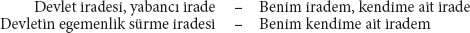
şu şekilde de özetlenebilir:
Aslına bakılırsa, devleti öz-irade yoluyla yok edişine, başından itibaren gizli bir şekilde temel oluşturan bu yeni antitezinde, keyfiyetin, ideolojik iradenin egemenliğine dair politik illüzyonu kendine mal ediyor. Bunu şu şekilde de ifade edebilirdi:
Ne var ki Aziz Sanço, böylesi yalın bir anlatıma ulaşamadı.
III. Antitezin "içinde bir yasa" bulunuyor zaten, fakat o, aşağıdaki antitezde yasayı daha da dolaysız olarak kendine mal ediyor:
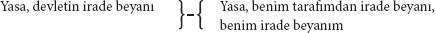
"Biri elbette neye katlanmak istediğini açıklayabilir, dolayısıyla bir yasa aracılığıyla tersinin kendisine yapılmasını yasaklayabilir" vb. (sf. 256)
Bu yasaklama zorunlu olarak beraberinde tehditler de getirmektedir. Bu son antitez, suç üzerine olan bölüm açısından önem arz ediyor.
Epizotlar. 256. sayfada bize, yasa ile "keyfi emir, buyruk" arasında hiçbir fark bulunmadığı, çünkü her ikisinin de "irade beyanına", dolayısıyla da "buyruğa" eşit olduğu söylenmektedir. –Sayfa 254, 255, 260 ve 263'te, "Devlet"ten bahsedildiği izlenimi verilirken, aslında devletin yerine Prusya devleti geçirilmekte ve "Vossische Zeitung"un anayasal devlet, memurların görevden alınabilirliği, bürokratik kibir üzerine önemli soruları ve benzeri zırvaları ele alınmaktadır. Buradaki tek önemli şey, eski Fransız parlamentoların, "kendi hukuklarına göre yargılamak" istedikleri için krallık fermanlarını kayda geçirme haklarında ısrar ettiklerinin keşfedilmesidir. Yasaların Fransız parlamentoları tarafından kayda geçirilmesi, burjuvazinin sahneye çıkışı ve dolayısıyla mutlak hale gelen kralların, hem feodal soyluluğa hem de yabancı devletlere, kendi iradelerinin bağımlı olduğu yabancı bir irade varmış izlenimini verme ve aynı zamanda burjuvalara bir güvence sunma zorunluluğuyla aynı döneme denk geldi. Aziz Sanço, o pek sevdiği I. François'nın tarihine bakarsa bu konuda daha fazla şey öğrenebilir. Ayrıca, bir daha Fransız parlamentolarından söz etmeden önce, neyi isteyip neyi istemedikleri ve önemleri hakkında şöyle böyle bir fikir edinmek için on dört ciltlik Des Etats généraux et autres assemlées nationales'e (Paris, 1788)442 bakmasında fayda var. Tam da burada, bizim fetih meraklısı azizimizin okumuşluğu hakkında araya kısa bir epizot yerleştirmek yerinde olur. Feuerbach ve B. Bauer'in yazıları gibi ve onun temel kaynağını oluşturan Hegelci geleneğin teorik kitapları bir yana bırakılırsa, bu en asgari teorik kaynakların dışında Sançomuz aşağıdaki tarihsel kaynaklardan yararlanmakta ve alıntılar yapmaktadır: Fransız Devrimi için, Rutenberg'in "Siyasi Söylevler"i ve Bauer'in "Anılar"ı; komünizm için Proudhon, A. Becker'in "Halk Felsefesi"si, "Yirmi Bir Forma"yı ve Bluntschli'nin Raporu; liberalizm için "Vossische Zeitung", Saksonya'da çıkan milliyetçi gazeteler, Baden senatosu protokolleri, yine "Yirmi Bir Forma" ve E. Bauer'in çığır açıcı eseri443. Ayrıca yer yer tarihsel belge olarak alıntı yapılan eserler: İncil, Schlosser'in "18. Yüzyıl"ı, Louis Blanc'ın "On Yılın Tarihi", Hinrich'in "Politik Sunumlar"ı, Bettina'nın "Bu Kitap Krala Aittir", Hess'in "Üçlü Yönetim", "Alman-Fransız Yıllıkları", Zürihli "Anekdot", Moriz Carrière'in Köln katedrali üzerine yazdıkları, Paris Soylular Kamarası'nın 25 Nisan 1844 oturumu, Karl Nauwerck, "Emilia Galotti"[123], İncil –kısacası, sahibi Willibald Alexis Cabanis'le birlikte Berlin okuma salonunun tamamı. Sanço'nun derin araştırmalarına dair bu numuneye baktıktan sonra, onun bu dünyada neden böylesine çok yabancı, yani kutsal şey bulduğu anlaşılır olacak.
III. Suç
Not 1.
"Başkalarının sana hak vermesine izin veriyorsan, o halde onun sana haksızlık yapmasına da izin vermen gerekir. Seni haklı çıkarıyor ve ödüllendiriyorsa, o halde onun ithamını ve cezasını da beklemelisin. Haksızlık hakka, suç yasallığa eşlik eder. Sen-ne-sin? Sen-bir- suçlu-sun!!" (sf. 262)
Code civil'e444 code pénal445, code pénal'a code de commerce446 eşlik etmektedir. Sen nesin? Sen bir – commerçant'sın447!
Aziz Sanço, bizden bu asap bozucu sürprizi esirgeyebilirdi. "Başkalarının sana hak vermesine izin veriyorsan, o halde onun sana haksızlık yapmasına da izin vermen gerekir" cümlesi onda, bu cümleyle yeni bir belirlemenin getirilmesi amaçlandığı ölçüde tüm anlamını yitirir. Zira daha önceki bir denklemde de şöyle demişti: Başkalarının sana hak vermesine izin veriyorsan, o halde sana yabancı hak, yani senin haksızlığının verilmesine izin veriyorsun demektir.
A. Suç ve cezanın basit kutsanması
a) Suç
Suça gelince, suç, daha önce de gördüğümüz gibi, kendisiyle barışık egoistin tümel bir kategorisine, Kutsal'ın yadsınmasına, Günah'a verilen isimdir. Kutsal'ın, devlet, hak, yasa örneklerine ilişkin ileri sürülen antitezler ve denklemlerde, Ben'in bu Kutsallarla ya da koşaçla olan negatif ilişkisi suç olarak da adlandırılabilirdi. Keza Aziz Sanço'nun, yine Kutsal'ın bir örneği olan Hegelci mantık hakkında şöyle demesi de mümkün: Ben Hegelci mantık değilim, Ben Hegelci mantığa karşı bir günahkârım. Haktan, devletten vb. söz ettiğine göre de şöyle devam etmesi gerekirdi: Günahın ya da suçun bir başka örneği, sözümona hukuki ya da politik suçlardır. Bunu yapacağına, bu suçların şunlar olduğunu bize tekrar ayrıntılarıyla açıklamaktadır:
Kutsal'a karşı günah,
sabit fikire karşı günah,
hayalete karşı günah,
"İnsan"a karşı günah.
"Yalnızca bir Kutsal'a karşı suçlular vardır." (sf. 268)
"Ceza yasası ancak Kutsal sayesinde varlık sürdürür." (sf. 318)
"Suçların kaynağı sabit fikirdir." (sf, 269)
"Burada, suç kavramını, günah kavramını da, dolayısıyla hak kavramını meydana getirenin yine "İnsan" olduğu görülmektedir" (Daha önce tersiydi.) "İçinde insanı göremediğim bir insan günahkârdır." (sf. 268)
Not 1.
"Ben nasıl doğru buluyorsam öyle davranması gerektiğini varsaymadan, birinin bana karşı suç işlediğini varsayabilir miyim? (devrim sırasında Fransız halkına karşıt olarak öne sürüldü) "Ve ben bu davranışı haklı, iyi vb. olarak, bundan sapan davranışı ise suç olarak nitelendiririm. Dolayısıyla ben, diğerlerinin ... herhangi bir 'makul' yasaya" (Vazife! Belirlenim! Görev! Kutsal!!!) "uymaları gereken varlıklar olarak, benimle aynı hedefe doğru yürümek zorunda olduklarını düşünürüm. İnsanın ne olduğunu ve gerçekten insani davranmanın ne demek olduğunu ben ortaya koyarım ve herkesten, bunu yasa, norm ve ideal kabul etmesini talep ederim; aksini yapan, bir günahkâr ve suçlu olduğunu kanıtlar..." (sf. 267, 268)
Bu sırada, terör döneminde başına buyruk halk tarafından kutsal adına katledilen "kendi insanları"nın mezarı başında öngörülü bir damla gözyaşı döküyor. Ardından bir örnek ışığında, bu kutsal bakış açısından hareketle, gerçek suçların isimlerinin nasıl kurgulanabildiğini sergiliyor:
"Hayalet, İnsan, devrimde olduğu gibi 'iyi yurttaş' olarak kabul edilirse eğer, o halde bu İnsan kavramının o ünlü 'politik kabahat ve suçlar'ı vardır. (Şu kastediliyor: o halde bu kavram vb. o ünlü suçları ortaya koyar.) (sf. 268)
Suç bölümünde, safdilliğin, Sanço'muzun ne denli baskın bir niteliğini oluşturduğunun parlak bir örneğini, devrimin sansculotte'larını448, citoyen449 sözcüğünün eş anlamlılığını istismar ederek Berlinli "iyi yurttaşlar"a dönüştürerek veriyor. Aziz Max'a göre "iyi yurttaşlar ile sadık memurlar" birbirinden kopmaz bir ikili oluştur. "Robespierre örneğin, Saint-Just vb." bu durumda "sadık memurlar" olurken, Danton, kasada açık vermekle suçlandı ve devletin paralarını saçıp savurdu. Aziz Sanço, Prusyalı yurttaşlar ve köylüler için devrim tarihine iyi bir giriş yaptı.
Not 2.
Aziz Sanço böylece siyasi ve hukuki suçu bize, genel anlamda suçun, yani kendi Suç, Günah, Yadsıma, Husumet, Hakaret, Kutsal'ı aşağılama, Kutsal'a karşı edepsiz davranış kategorisinin bir örneği olarak tanıttıktan sonra, şimdi kendinden emin bir halde şunu ilan edebilmektedir:
"Egoist şimdiye dek kendini suçta kabul ettirmiş ve Kutsal'la alay etmiştir." (sf. 319)
Bu noktada, gelmiş geçmiş bütün suçlar kendisiyle barışık egoistin hesabına yazılmaktadır; oysa daha sonra bunların bir kısmını yine borç hanesine aktarmak zorunda kalacağız. Sanço, şimdiye dek yalnızca "Kutsal"la alay etmek için ve şeylere karşı değil şeylerdeki Kutsal'a karşı kendini kabul ettirmek için suç işlendiğine inanıyor. Başkasına ait bir talere450 el koyan bir garibanın hırsızlığı, yasaya karşı işlenen suç kategorisine sokulabileceği için, bu yüzden bu gariban, hırsızlığı salt yasayı çiğneme arzusundan işlemiştir. Tıpkı yukarıda Jacques le bonhomme'un sadece Kutsal'ın hatırına yasaların çıkarıldığını ve salt Kutsal'ın hatırına hırsızların hapse atıldığını zannetmesi gibi.
b) Ceza
Şu anda hukuki ve siyasi suçlarla ilgilendiğimizden, bu vesileyle, genel olarak böylesi "sıradan anlamda" suçların bir ceza gerektirdiği, ya da yazılı olduğu üzere "günahın bedelinin ölüm olduğu"451 ortaya çıkıyor. Suç hakkında daha önce öğrendiklerimizden sonra, şimdi elbette cezanın da Kutsal'ın, Kutsal'ı ihlal edenlere karşı öz savunması ve korunması olduğunu öğreniyoruz.
Not 1.
"Cezanın ancak bir Kutsal'ın çiğnenmesinin kefareti olacaksa bir anlamı vardır." (sf. 316) Ceza ile "hakkı, heyulayı" (Kutsal'ı) "memnun etmeye kalkmak budalalığına düşüyoruz. Kutsal" burada "kendini insana karşı savunmalıdır" (Aziz Sanço, "burada", "İnsanı"ı, "Biricikler"le, "kendime ait Ben'lerle" vb. karıştırmak gibi "bir budalalığa düşüyor"). (sf. 318)
Not 2.
"Ceza yasası ancak Kutsal sayesinde varlık sürdürür ve ceza terk edilirse kendiliğinden dağılıp yok olur." (sf. 318)
Aziz Sanço aslında şunu söylemek istemektedir: Ceza yasası ortadan kaldırıldığında ceza kendiliğinden yok olur; yani, ceza ancak ceza yasası sayesinde var olur. "Peki ama", yalnızca ceza sayesinde var olan bir ceza yasası "bir saçmalık" değil midir? "Ve yine", yalnızca ceza yasası sayesinde var olan bir ceza "da bir saçmalık değil midir?" (Sanço Hess'e karşı, Wigand452, sf. 186) Sanço burada ceza yasasını teolojik ahlakı öğreten bir kitapla karıştırmaktadır.
Not 3.
Suçun, sabit fikirden nasıl doğduğuna dair örnek olarak şunu veriyor:
"Evliliğin kutsallığı bir sabit fikirdir. Kutsallıktan sadakatsizliğin bir suç olduğu sonucu çıkar, ve bu nedenle belirli bir evlilik kanunu" (A.....453 meclislerinin" ve "bütün R......454 imparatorunun", keza "Japonya imparatoru" ve "Çin imparatoru"nun ama özellikle "Sultan"ın hiç hoşuna gitmese de) "bu suça kısa ya da uzun süreli bir ceza getirir." (sf. 263)
Kutsal'ın kıstasına uygun yasalar koyabileceğini düşünen ve bu nedenle tüm dünyayla sürekli kavgalı olan IV. Friedrich Wilhelm, Sanço'muzun şahsında, en azından devlet inancıyla dolu bir kişi bulmuş olmakla avunabilir. Aziz Sanço, yalnızca yazarının kafasında varolan Prusya evlilik kanununu, bir de bugün yürürlükte olan code civil'in455 hükümleriyle karşılaştırsın bakalım. Burada kutsal evlilik yasaları ile dünyevi evlilik yasaları[124] arasındaki farkı bulacaktır. Prusyalının hayal dünyasında, resmî evliliğin kutsallığından hem kadın hem de erkek sorumlu tutulmak istenmektedir. Kadının kocasının özel mülkiyeti sayıldığı Fransız pratiğinde ise, zina nedeniyle yalnızca kadın, o da sadece mülkiyet hakkını öne süren kocasının talebi üzerine cezalandırılmaktadır.
B. Suç ve cezanın antitezler yoluyla kendine mal edilmesi
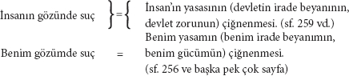
Bu iki denklem zıtlar olarak karşı karşıya bulunmakta ve yalnızca "İnsan" ile "Ben" arasındaki karşıtlıktan doğmaktadır. Dolayısıyla zaten var olan şeylerin bir özetinden başka bir şey değildir. Kutsal "Ben"i cezalandırır – "Ben 'Ben'i cezalandırırım."
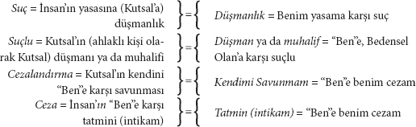
Son antitezde tatmin yerine kendini tatmin de denebilir; çünkü burada söz konusu olan, insanın tatmininin karşıtındaki benim tatminimdir.
Eğer yukarıdaki zıtlıklardan oluşan denklemlerde yalnızca ilk unsur dikkate alınırsa, bu durumda aşağıdaki basit antitezler dizisi elde edilir. Burada tez kısmında daima kutsal, tümel, yabancı isim bulunurken, antitezlerde daima dünyevi, kişisel, kendine mal edilmiş isim bulunur.
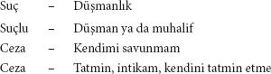
Birazdan, "doğuştan alık" birinin bile (sf. 434) bu "biricik" düşünme yöntemini beş dakikada kapabileceği kadar basit olan bu denklemler hakkında birkaç lafımız olacak. Ama ilkin, öncekilere ek olarak birkaç alıntı daha yapalım:
Not 1.
"Sen benim karşımda asla bir suçlu olamazsın, ancak bir muhalif olabilirsin" (sf. 268) –ve 256. sayfadaki anlamıyla bir "düşman"– İnsanın düşmanlığı olarak suç; bunun için sayfa 268'de "Anavatan düşmanları" örnek gösterilmektedir. – "Cezanın yerine tatmin geçmelidir" (ahlaki postulat) "ki bu da yine hakkı ya da adaleti tatmin etmeyi değil, bize bir tazmin sağlamayı amaçlayabilir." (sf. 318)
Not 2.
Aziz Sanço mevcut zorun kutsal halesiyle (yel değirmeni) savaşırken, bırakın bu zoru tanıyıp öğrenmeyi, ona saldırmıyor bile. Yaptığı tek şey Ben'in onunla ilişkisinin biçimsel olarak değiştirilmesine yönelik ahlaki talebi öne sürmekten ibaret. (Bkz. Mantık)
"Onun" (sc.457 arkasında birkaç milyon bulunduran benim düşmanımın) "bana düşmanı muamelesi yapmasını sineye çekmek zorundayım, ama asla bana kendi yaratığı olarak davranmasını, kendi izanını ya da izansızlığını benim temel ilkem haline getirmesini değil." sf. 256 (ki burada P.P.458 Sanço'ya son derece sınırlı bir özgürlük alanı bırakır: Kendine kendi yaratığıymış gibi davranmasına göz yummak ya da Merlin'in kendisine kestiği posaderas'ına459 3300 kırbaç cezasını çekmek arasında seçim yapmak. Bu özgürlüğü ona her ceza yasası tanır, ne var ki P.P. Sanço'ya düşmanlığını hangi yoldan beyan edeceğini elbette ki sormayacaktır). –"Fakat muhalifi güç olarak etkileseniz bile" (onun için "etkileyici bir güç" iseniz bile) "sırf bundan dolayı kutsanan bir otorite olmazsınız; aksi halde onun bir haydut olması gerekir. Sizin ve zorunuzun karşısında kendini kollasa dahi, size saygı ve hürmet göstermek zorunda değildir." (sf. 258)
Burada "haydut" olarak sahne alan bizzat Aziz Sanço'dur; zira, "etkilemek" ve "saygı görmek" arasındaki, "kollamak" ve "hürmet göstermek" arasındaki fark uğruna –en fazla onda altılık bir fark– pazarlığını460 büyük bir ciddiyetle yürütüyor. Aziz Sanço birisine "karşı kendisini kollarsa" eğer, bu durumda "refleksiyon içinde yaşıyordur ve üzerine refleksiyonda bulunduğu, saygı duyduğu, hürmet edip korktuğu bir nesnesi vardır." (sf. 115). – Yukarıdaki denklemlerde ceza, intikam, tatmin vb. salt Benim açımdan ortaya konmuştur. Tatminin nesnesi Aziz Sanço olması halinde antitezler tersine çevrilebilir: Böylelikle kendini tatmin, bendeki-başka-birine-tatmin-bahşetmeye veya benim-kifayetime-zarar-vermeye dönüşür.
Not 3.
Hakkın, yasanın, devletin vb. genel bir kavramdan, belki de son tahlilde insan kavramından doğduğunu ve bu kavramın hatırına yürürlüğe konduğunu imgeleyebilen bu aynı ideologlar kuşkusuz, suçların sırf bir kavram karşısındaki taşkınlık nedeniyle işlendiğini, suçların genel olarak kavramların alaya alınmasından başka bir şey olmadığını ve sadece gücenmiş kavramı tazmin etmek için cezalandırıldığını da imgeleyebilirler. Bu konuda söylenmesi gerekenleri hak konusu ele aldığımız bölümde, ve daha önce de hiyerarşi konulu bölümde söylemiştik. Okurun o bölümlere bakmasını öneririz. – Yukarıda sözü edilen antitezlerde suç ve ceza vb. gibi kutsallaştırılmış belirlenimlerin karşısına, Aziz Sanço'nun o pek sevdiği tarzıyla bu ilk belirlenimlerden çıkarıp kendine mal ettiği başka bir belirlenimin ismi konulmaktadır. Burada, söylediğimiz gibi salt bir isim olarak ortaya çıkan bu yeni belirlenimin, dünyevi olarak, doğrudan bireysel ilişkiyi içermesi ve gerçek ilişkiyi ifade etmesi amaçlanıyor. (Bkz. Mantık) Oysa hukuk tarihi, en erken, en ilkel devirlerde bu bireysel, gerçek ilişkilerin en kaba biçimleriyle doğrudan doğruya hakkı meydana getirdiğini göstermektedir. Burjuva toplumun gelişimiyle, yani kişisel çıkarların sınıf çıkarlarına dönüşmesiyle birlikte hak ilişkileri değişimlere uğradı ve ifadeleri uygarlaştı. Artık bireysel değil, tümel ilişkiler olarak kabul ediliyorlardı. Aynı zamanda iş bölümü, tek tek bireylerin çatışan çıkarlarının korunmasını az sayıda kişinin eline bıraktı ve böylece hakkın barbarca dayatılması da son buldu. Aziz Sanço'nun yukarıda sözü edilen antitezlerdeki hak eleştirisi, hak ilişkilerinin uygarlaşmış ifadesini ve iş bölümünü "Sabit Fikir"in, Kutsal'ın bir meyvesi ilan etmekten, öte yandan da hak ilişkilerinin barbarca ifadesini ve bunları barbarca düzenleme tarzını kendisine mal etmekten ibarettir. Onun açısından önemli olan yalnızca isimlerdir. İçeriğin kendisine dokunmamaktadır, çünkü bu farklı hak biçimlerinin dayandığı gerçek ilişkileri bilmemekte ve sınıf ilişkilerinin hukuki ifadesinden, yalnızca bu barbarca ilişkilerin idealize edilmiş isimlerini anlamaktadır. Dolayısıyla Stirner'in irade beyanında savaş açmayı; düşmanlıkta, kendini savunmada vb. orman kanununu ve feodalizmin ilk dönem pratiklerinin kötü bir kopyasını; tatminde, intikamda vb. jus talionis'i, eski Cermenlerin Gewere'sini, compensatio'yu, satisfactio'yu; kısacası, leges barbarorum ve consuetudines feudorum'daki[125] temel meseleleri yeniden buluyoruz. Sanço bunları kütüphanelerden değil, eski efendisi Galyalı Amadis'in öykülerinden çıkarıp benimsemiş ve kanı kaynamıştır. Demek ki Aziz Sanço son tahlilde yine sadece, herkesin kendi kendisine tatmin sağlaması ve cezalar uygulaması gerektiğine dair aciz bir ahlaki buyruğa varabiliyor. Don Kişot'un, başka hiçbir şey gerekmeksizin yalnızca ahlaki bir buyrukla toplumsal iş bölümünden doğan nesnel güçleri, kişisel güçlere dönüştürebileceği vaadine inanıyor. Hukuki ilişkilerin toplumsal iş bölümünden doğan bu nesnel güçlere ne kadar yakından bağlı olduğu, mahkemelerin gücünün tarihsel gelişiminden ve feodal beylerin hukukun gelişmesi hakkındaki yakınmalarından açıkça anlaşılmaktadır. (bakınız: örneğin, Monteil, 1. c. XIVe, XVe siècle). Tam da aristokrasinin egemenliği ile burjuvazinin egemenliği arasındaki dönemde, iki sınıfın çıkarlarının çatıştığı, Avrupa uluslarının birbirleriyle olan ticari ilişkileri önem kazanmaya başladığı ve uluslararası ekonomik ilişkiler burjuva bir nitelik kazandığı sırada, mahkemelerin gücü önem kazanmaya başladı ve gelişkin bir iş bölümünün kaçınılmaz olduğu burjuva egemenliği altında doruğa ulaştı. İş bölümünün uşaklarının, yargıçların ve hatta professores juris'in461 bu sırada ne tasavvur ettiklerinin hiçbir önemi yoktur.
C. Sıradan ve sıra dışı anlamda suç
Yukarıda, sıradan anlamda suç, çarpıtılmak suretiyle sıra dışı anlamıyla egoistin alacak hanesine yazılmıştı; şimdi bu çarpıtma açığa çıkıyor. Sıra dışı egoist şimdi, sadece, sıradan suçların karşısına konması gereken sıra dışı suçlar işlediğini fark ediyor. Bu nedenle, daha önce tersini yaptığımız gibi, sıradan suçları yine P.P. egoistin borç hanesine kaydediyoruz.
Sıradan suçluların yabancı mülkiyete karşı mücadelesini şu şekilde de ifade etmek mümkün (gerçi bu, her türden rakip için geçerlidir):
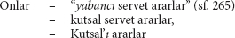
Böylelikle sıradan suçlu bir "inanan"a462 dönüştürülmektedir.
Bu arada, sıra dışı anlamda egoistin, sıradan anlamda suçluya yönelttiği bu suçlama yalnızca görünüştedir; zira, tüm dünyanın kutsal halesine göz diken aslında ta kendisidir. Suçluya yönelttiği asıl suçlama, onun "Kutsal"ı değil "servet"i elde etmeye çalışmasıdır.
Aziz Sanço kendisine "kendine ait bir dünya, bir cennet" kurduktan, yani bu kez, modern dünyada kendi kafası için, derebeylerin ve gezgin şövalyelerin bir dünyasını kurduktan ve aynı zamanda kendisinin sıradan suçlulardan farkını, şövalyece bir suçlu olarak belgeledikten sonra, bir kez daha "ejderhalara ve deve kuşlarına, satirler"e, "hayaletlere, heyulalara ve sabit fikirler"e karşı bir haçlı seferine çıkıyor. Sadık uşağı Szeliga da huşuyla onun peşi sıra gidiyor. Ne var ki, ikisi yola düşmüş ilerlerken, Cervantes'in XXII. bölümde tasvir ettiği gibi, gitmek istemedikleri bir yere sürüklenen talihsiz kimselerin şaşırtıcı serüvenleri vuku bulur. Gezgin şövalyemiz ve onun sadık uşağı Don Kişot salına salına kendi yollarında ilerlerken Sanço, gözlerini kaldırdı ve uzun bir zincirle birbirine bağlanmış elleri kelepçeli bir düzine kadar adamın, kutsal Hermandad'a[126], Kutsalların Hermandad'ına, Kutsal'a bağlı bir komiser ile dört jandarmanın eşliğinde kendisine doğru gelmekte olduklarını gördü. Yaklaştıklarında Aziz Sanço muhafızlara nazikçe bu adamların neden zincire vurulduklarını sordu. –Bunlar, Yüce Majestelerinin Spandau'ya[127] zorla çalışmaya gönderdiği mahkûmlardır, daha fazlasını bilmen gerekmez. – Nasıl! diye bağırır Aziz Sanço, "nasıl olur da insanlar zorlanır? Kralın bir "kendine ait Ben'e" zor kullanması mümkün mü? O halde bu zoru durdurma vazifesiyle Ben kendimi vazifelendiriyorum. "Devletin davranışı şiddettir ve o buna hak diyor. Ama tek bir kişinin şiddetine ise suç diyor." Hemen ardından Aziz Sanço önce sızlanmamaları gerektiğini, "özgür olmasalar" da hâlâ "kendilerine ait" olduklarını, belki bazılarının "kemikleri" kamçı darbeleri altında "çatırdayacak", hatta bacakları "koparılacak" bile olsa yine de muzaffer olacaklarını, çünkü "hiç kimsenin iradesi üzerinde tahakküm kuramayacağını" söyleyerek mahkûmları azarlıyor. "Biliyorum ki, bazı avanaklar aksini düşünse de, dünyada iradeyi yönetebilecek ve istemediği bir şeyi yapmaya mecbur edecek bir büyücü yok; çünkü irade bizim özgür, keyfi gücümüzdür ve ona boyun eğdirebilecek hiçbir sihirli ot ya da tılsım yoktur." Evet, "hiç kimse sizin iradeniz üzerinde tahakküm kuramaz, iradeniz daima özgür kalacaktır!"
Ne var ki bu vaaz, inşaatçı mahkûmları yatıştırmadı; birbiri ardına haksız yere mahkûm edildiklerini anlatmaya başladılar. Aziz Sanço onlara şöyle seslendi: "Sevgili kardeşlerim, anlattıklarınızdan anlıyorum ki işlediğiniz suçlar nedeniyle cezalandırıldığınız halde, çekeceğiniz ceza pek hoşunuza gitmiyor, gönülsüz hatta istemeye istemeye gidiyorsunuz cezalarınızı çekmeye. Belki de başınıza gelenlerin sebebi, birinizin ödlek, diğerinizin yoksul, bir diğerinizin de koruyup kollayanı olmaması; ya da belki de yargıcın haksız kararı mahvınıza sebep oldu. Size ait olmasına, sizin hakkınız olmasına rağmen haktan mahrum bırakılmış olabilirsiniz. Tüm bunlar beni, neden Tanrı tarafından yeryüzüne gönderildiğimi size göstermeye zorluyor. Ancak, kendisiyle barışık egoistin bilgeliği, anlaşma yoluyla yapılabilecek bir şeyi zor yoluyla yapmamayı buyurduğundan, komiserden ve jandarmalardan sizleri çözüp serbest bırakmalarını ve kendi yolunuza gitmenize izin vermelerini rica ediyorum. Üstelik, benim sevgili jandarmalarım, bu talihsizler size bir zarar vermiş değiller. Kendisiyle barışık egoistlerin kendilerine zarar vermemiş olan başka biricik kimselerin celladı olmaları yakışık almaz. Açık ki, sizin nazarınızda 'soyulmuş kişi kategorisi' öne çıkıyor. Neden 'suça karşı' eylemlerinizde bu kadar arzulusunuz? 'Gerçekten de size ahlak konusunda hassas olduğunuzu, ahlak düşüncesiyle dolu olduğunuzu söylemek isterim.' 'Ona düşman olan herkese acımasızca davranıyorsunuz.' – 'Subay olarak içtiğiniz yeminler yüzünden' bu zavallı inşaatçı mahkûmları 'hapishaneye götürüyorsunuz'. Sizler Kutsal'sınız! O nedenle bu mahkûmları iyilikle serbest bırakın. Yoksa benimle dövüşmek zorunda kalacaksınız. Ben ki 'canlı Ben'in tek bir nefesiyle koca halkları yere sererim, Kutsal'ın 'kutsallığını dizginsizce bozarım' ve 'Ay'dan bile korkmam.'"
"Bu ne küstahlık böyle!" diye bağırdı komiser. "Siz iyisi mi tasınızı başınıza geçirin ve yolunuza devam edin. Yoksa fena olacak!"
Ne var ki bu Prusyalı kabalığı karşısında öfkelenen Aziz Sanço kargısını kaptı ve "apozisyon"un olanca hızıyla komiserin üzerine atılıp onu bir hamlede yere serdi. Bunun üzerine bir anda ortalık karıştı. Bu kargaşa sırasında inşaatçı mahkûmlar kendilerini zincirlerinden kurtardılar. Bir jandarma, Szeliga-Don Kişot'u Landwehrgraben'a namı diğer Schafgraben'a[128] fırlattı. Aziz Sanço ise Kutsal'a karşı en büyük yiğitlikleri gerçekleştirdi. Birkaç dakika sonra jandarmalar dağılmış, Szeliga sürünerek hendekten çıkmış ve Kutsal o an için ortadan kaldırılmıştı.
Sonra Aziz Sanço özgürlüğüne kavuşan mahkûmları etrafında toplayıp onlara şöyle seslendi ("Kitap", sf. 265, 266):
"Sıradan suçlu" (sıradan anlamda suçlu) "kendisinin olanı aramak yerine, halka ait olanın peşine düşmek gibi vahim bir hata işleyen" (yurttaşlar ve köylüler için vahim bir edebiyatçı!) "birinden başka nedir ki? O, hor görülesi" (bu ahlaki yargı üzerine inşaatçı mahkûmlardan homurtular yükselir) "yabancı serveti aramıştır, Tanrıya ait olana gözünü diken inananların yaptığını yapmıştır" (soylu bir ruh olarak suçlu). "Suçluya ikazda bulunan rahip ne yapar? Devlet tarafından kutsal sayılana, yani devletin mülkiyetine, ki vatandaşların hayatı da buna dâhil edilmelidir, el uzatmakla işlediği büyük hatayı gözleri önüne serer. Bunu yapacağına suçluyu kendi şerefini lekelemekle azarlasa daha iyi" (inşaatçı mahkûmlar, bayağı rahip ağzının bu egoistçe kendine mal edilişi karşısında gülüşürler) "çünkü yabancı olanı hor görmeyip, tersine soyguna layık bulmuştur" (inşaatçı mahkûmlar homurdanır); "bunu yapabilirdi eğer rahip olmasaydı" (inşaatçı mahkûmlardan biri: "Sıradan anlamda!") Ancak ben "suçluyla, bir egoistle konuşur gibi konuşurum; ve o utanacaktır," (utanma davetine uymaya niyeti olmayan suçlular arsızca bağırır "Yaşa! Varol!") "sizin yasalarınıza ve mallarınıza el uzattığı için değil, aksine sizin yasalarınızı atlattığı" (burada söz konusu olan sadece "sıradan anlamda" "atlatma"dır; bunun haricinde "Ben bir kayanın etrafını, ta ki Ben onu patlatana kadar dolaşırım" ve örneğin "sansürü" bile "atlatırım"463) "sizin mallarınızı arzulamaya değer gördüğü için" (bir kez daha: "Yaşa! Varol!") "utanacaktır..."
Pek sabırlı bir adam olmayan hırsızlar hırsızı Gines de Passamente bağırdı: "O halde, sıra dışı anlamdaki rahip bizi 'azarladığında' tek yapmamız gereken kendimizi utanca vermek ve itaatkâr olmak öyle mi?"
"Utanacaktır", diye devam ediyor Sanço, "sizi, sahip olduklarınızla birlikte hor görmediği için, yeterince egoist olmadığı için utanacaktır." (Sanço burada, suçlunun egoizmine yabancı bir ölçüt getiriyor. Bu nedenle mahkûmlar büyük bir yaygara koparıyor. Kafası biraz karışan Sanço, belagatlı bir jestle orada olmayan "iyi yurttaşlara" dönerek durumu toparlıyor: "Ama siz onunla egoistçe konuşamazsınız. Çünkü bir suçlu kadar büyük değilsiniz, siz... hiçbir suç işlemiyorsunuz."
Gines yine söze giriyor: "Bu ne safdillik, sevgili adamım! Hapishanedeki gardiyanlarımız pekâlâ her türlü suçu işliyor: Rüşvet alıyor, zimmetlerine para geçiriyor, yolsuzluk yapıyor, ırza tecavüz ediyor. [...]464